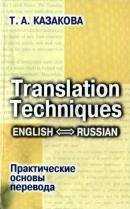

Введение
СПОСОБЫ ПЕРЕВОДА
ЕДИНИЦЫ ПЕРЕВОДА И ЧЛЕНЕНИЕ ТЕКСТА
ВИДЫ ПРЕОБРАЗОВАНИЯ ПРИ ПЕРЕВОДЕ
ПЕРЕВОДЧЕСКАЯ ТРАНСКРИПЦИЯ
КАЛЬКИРОВАНИЕ
ЛЕКСИКО-СЕМАНТИЧЕСКИЕ МОДИФИКАЦИИ
ПРИЕМЫ ПЕРЕВОДА
ФРАЗЕОЛОГИЗМОВ
МОРФОЛОГИЧЕСКИЕ ПРЕОБРАЗОВАНИЯ В
УСЛОВИЯХ СХОДСТВА ФОРМ
МОРФОЛОГИЧЕСКИЕ ПРЕОБРАЗОВАНИЯ В УСЛОВИЯХ
РАЗЛИЧИЯ ФОРМ
СИНТАКСИЧЕСКИЕ
ПРЕОБРАЗОВАНИЯ НА УРОВНЕ СЛОВОСОЧЕТАНИЙ
СИНТАКСИЧЕСКИЕ
ПРЕОБРАЗОВАНИЯ НА УРОВНЕ ПРЕДЛОЖЕНИЙ
ПРИЕМЫ ПЕРЕВОДА МЕТАФОРИЧЕСКИХ
ЕДИНИЦ
ПРИЕМЫ ПЕРЕВОДА
МЕТОНИМИИ
ПРИЕМЫ ПЕРЕДАЧИ
ИРОНИИ В ПЕРЕВОДЕ
Приложение
Т.А. КАЗАКОВА
Практические основы перевода
Т. А. КАЗАКОВА
ПРАКТИЧЕСКИЕ ОСНОВЫ ПЕРЕВОДА
ENGLISH <=> RUSSIANCaнкт-Петербург
«ИЗДАТЕЛЬСТВО СОЮЗ»
САНКТ-ПЕТЕРБУРГ2001
ББК 81.2.2. Англ. К53
Рецензент: доктор филологических наук, профессор В. В. Кабакчи
Казакова Т. А.
К53 Практические основы перевода. English <=> Russian.-- Серия: Изучаем иностранные языки.-- СПб.: «Издательство Союз», -- 2001, -- 320 с.
ISBN 5-289-01985-5 (Лениздат)
ISBN 5-94033-049-5 («Издательство Союз»)
Учебное пособие предназначается изучающим английский язык и входит в систему предметов, обучающих теории и практике перевода. Материал пособия направлен на освоение и развитие практических навыков перевода с английского языка на русский и наоборот. Основным принципом построения пособия, отбора и расположения учебного материала является создание систематического представления о способах, средствах и приемах преобразования языковых единиц в процессе двустороннего перевода. Пособие может быть использовано в рамках учебного процесса на факультетах иностранных языков, для обучения переводчиков, а также для самостоятельных занятий студентов, аспирантов, преподавателей английского языка и начинающих переводчиков.
© Казакова Т. А., 2000 © «Изд-во Союз», 2000
ISBN 5-289-01985-5 (Лениздат) © Гореликов В. А., оформление
ISDN 5-94033-049-5 («Изд-во Союз») обложки, 2000
ОГЛАВЛЕНИЕ Введение.............................................................. 5
Часть 1. Стратегии и единицы перевода
Глава 1. Способы перевода................................ 9
Глава 2. Единицы перевода и членение текста... 27
Глава 3. Виды преобразования при переводе... 50
Часть 2. Лексические приемы перевода
Глава 1. Переводческая транскрипция............. 63
Глава 2. Калькирование..................................... 88
Глава 3. Лексико-семантические модификации.. 103
Глава 4. Приемы перевода фразеологизмов....... 127
Часть 3. Грамматические приемы перевода
Глава 1. Морфологические преобразования
в условиях сходства форм....................... 153
Глава 2. Морфологические преобразования
в условиях различия форм.................. 173
Глава 3. Синтаксические преобразования
на уровне словосочетаний................... 190
Глава 4. Синтаксические преобразования
на уровне предложений....................... 210
3
Часть 4. Стилистические приемы перевода
Глава 1. Приемы перевода метафорических
единиц................................................... 237
Глава 2. Приемы перевода метонимии............. 259
Глава 3. Приемы передачи иронии в переводе... 273
Приложение: Тексты для самостоятельного
перевода........................................ 293
Рекомендуемая литература................................. 318
Данное пособие предназначено для освоения основных практических навыков обработки текста при переводе с английского языка на русский и с русского на английский. Материал пособия может быть использован в курсе теории и практики перевода на факультетах иностранных языков, а также при подготовке переводчиков на факультетах лингвистики и межкультурной коммуникации.
Пособие состоит из четырех частей и Приложения. Каждая часть включает 3-4 главы, посвященные отдельным аспектам соответствующих направлений техники перевода. Каждая глава предваряется вводными сведениями, где содержится практически ориентированная интерпретация основных положений теории перевода относительно конкретного вида переводческих проблем. Помимо вводных сведений в структуру всех глав входят рекомендуемые правила преобразований при переводе и соответствующий комплекс упражнений, направленный на практическую тренировку в том или ином виде переводческой техники.
В первой части обеспечиваются общие представления и навыки оценки и членения текста в процессе определения способа перевода и основных направлений преобразования текста. Здесь рассматриваются такие приемы, как выбор способа перевода,
5
определение единиц перевода путем различных приемов членения текста, а также общее знакомство с переводческими трансформациями. Комплекс упражнений к главам этой части направлен преимущественно на сопоставление исходного и переводного текстов с целью идентификации тех или иных приемов и оценки их эффективности. Некоторые из упражнений включают задания на самостоятельный вариант перевода в плане уточнения, усовершенствования или иного изменения уже существую-щего переводного текста.
Во второй части подробно рассматриваются основные приемы преобразований лексических единиц исходного текста. Особое внимание уделяется формальным приемам, а также лексико-семантическому варьированию при переводе. Переводческие преобразования рекомендуются с учетом как международной переводческой практики, так и сопоставительных исследований в области русской и английской лексикографии и теории межкультурной коммуникации.
Третья часть состоит из четырех глав, посвященных описанию основных межъязыковых грамматических осложнений и приемов преобразования морфологических и синтаксических единиц английского и русского языков. Комплекс рекомендуемых правил преобразования основывается на современных сопоставительных исследованиях в области русской и английской грамматических систем и традиций переводческой деятельности.
Три главы четвертой части посвящены наиболее характерным стилистическим единицам -- метафоре, метонимии и иронии. Выбор именно этих переводческих проблем обоснован, во-первых, час-
тотой их встречаемости в текстах различных функциональных стилей, а во-вторых, тем, что приемы преобразования таких единиц, по существу, в том или ином виде применимы также для решения других стилистических проблем.
Материал упражнений подобран преимущественно из самого широкого круга русских и английских источников общекультурного содержания, в который помимо художественной литературы вошли различные образцы: от специальных текстов по истории культуры до образцов рекламы, деловой переписки и справочных статей. Каждый раз выбор диктовался не столько достоинствами того или иного источника, сколько уместностью примера для иллюстрации соответствующего приема.
В Приложении предлагается набор текстов для самостоятельного перевода, включающих разнообразные межъязыковые осложнения, для разрешения которых необходимо комплексное применение освоенных практических навыков перевода. Работа с текстами Приложения может проводиться как на занятиях под руководством преподавателя, включая постановку проблем и определение способа их решения, так и полностью самостоятельно с последующим общим обсуждением результатов.
Рассмотренные в данном пособии переводческие проблемы и способы их практического решения, разумеется, не исчерпывают всего многообразия осложнений при переводе: они отражают только основные, наиболее типичные ситуации, в которых действия переводчика связаны с преобразованием лексических, грамматических или стилистических характеристик исходных единиц. Выработка умения определять такие ситуации и применять наиболее
7
эффективные приемы преобразования и является главной задачей данного пособия. Структура пособия такова, что позволяет вовлекать в учебный процесс как теоретические источники для обсуждения переводческих проблем, так и дополнительный текстовой материал и задания для самостоятельной работы.
Часть 1 Стратегии и единицы перевода
Non verbum de verbo,
sed sensum de sensu exprimere.ГЛАВА 1. СПОСОБЫ ПЕРЕВОДА
Вводные сведенияПеревод -- это преобразование сообщения на исходном языке в сообщение на языке перевода. Точный перевод, по определению, невозможен уже в силу того, что разные языки отличаются как по грамматическому строю, так и по простому количеству слов, не говоря уже о различии культур, что тоже может иметь влияние на способ и результаты перевода. При этом, если сопоставительные грамматики и двуязычные словари существуют и даже в достаточно подробных вариантах, в том числе и для соотношения русского и английского языков, то практически не существует никаких сопоставительных справочников по культурам разных народов. Предполагается, что переводчик в равной (или почти равной) степени владеет как исходной, так и переводящей культурами. Между тем, это далеко не так, и в большинстве случаев переводчик весьма приблизительно оценивает, а следовательно, и переводит те или иные элементы или целые категории исходного текста в сопоставительно-культурном плане.
9
Тем не менее тексты, основанные преимущественно на общекультурных ценностях или, по крайней мере, на сопоставимых ценностях, вполне успешно переводятся, если сосредоточить внимание на передаче общих и универсальных понятий и не преувеличивать непереводимость стилистических, эмоциональных и оценочных компонентов исходной информации, которые чаще всего и создают проблемы, так как имеют различную манифестацию в разных национально-культурных традициях. Эти проблемы колеблются в довольно широком диапазоне: от отдельных непереводимых элементов до всего исходного текста, причем характер одной и той же проблемы меняется в зависимости от направления перевода. Когда мы переводим деловое письмо с английского языка на русский, английская форма обращения Dear Sir довольно часто передается русским соответствием Дорогой сэр. Эта формула не является естественной для русского делового стиля, но тем не менее приемлема при переводе в силу большей толерантности русской культуры к иностранным заимствованиям, хотя и придает тексту легкий оттенок иронии в русском восприятии, то есть является не вполне адекватным переводим с точки зрения эмоционально-стилистической окраски текста. Более естественной для русского текста делового письма была бы формула Уважаемый господин директор, хотя она не является адекватным переводом с точки зрения лексико-семантического состава исходной формулы. Таким образом, переводчик с английского на русский язык имеет пространство ддя маневра, выбирая из двух не вполне адекватных соответствий то, которое допустимо по ситуации.
Однако та же самая проблема проявляется иначе при переводе с русского языка на английский де-10
левого обращения типа Глубокоуважаемый господин Шредер! -- вне всякого сомнения ни восклицательный знак, ни дословный перевод формулы Deeply respected Mr Schroeder! будут безусловно неприемлемы в качестве соответствия, так как англосаксонская традиция обращения в этом плане гораздо более консервативна, и неточное воспроизведение традиционной формулы (Dear Sir или Dear Mr Schroeder) воспринимается без всякого юмора как нарушение основ делового этикета.
Разрешение таких или подобных проблем достигается благодаря коммуникативно-посреднической деятельности переводчика, существующим грамматическим справочникам, двуязычным словарям и пособиям по культуре разных народов (а еще лучше -- благодаря личному культурному опыту переводчика). Эта постоянная переменная, то есть коммуникативный успех при относительной переводимости, в большой степени зависит от того, насколько правильно переводчик выбирает способ перевода, применяет соответствующую стратегию и определяет единицы перевода.
Выполняя перевод, переводчик прежде всего определяет способ перевода, то есть меру информационной упорядоченности для переводного текста. Первая ступень в выборе способа упорядоченности заключается в определении того, в каком виде должен быть представлен исходный текст в переводящей культуре: полностью или частично. В зависимости от коммуникативного задания на этом этапе выбирается либо полный, либо сокращенный перейод (в некоторых источниках именуемый также реферативным, хотя эти термины не вполне адекватны).
Сокращенному переводу могут подлежать практически все типы текстов: от простого делового пись-
11
ма до романа. Результатом применения сокращенного перевода являются такие тексты, как тезисы, конспекты, рефераты, аннотации, переложения, дайджесты и т. п. Всякий раз размеры такого текста, его лексико-семантический, синтаксический и стилистический образ зависят от того способа, который выбирается переводчиком для достижения цели. В сущности, сокращенный перевод выполняется одним из двух фундаментальных способов перевода: выборочный перевод или функциональный перевод.
Выборочный перевод как способ сокращенного перевода состоит в выборе ключевых, с точки зрения переводчика, единиц исходного текста и их полном переводе. Все остальные компоненты исходного текста при таком способе отбрасываются как второстепенные с точки зрения достижения результата и не подлежат переводу вообще. Такой способ довольно часто применяется для пересказа в тезисно-реферативном виде деловых писем, газетных материалов, научных статей и сообщений, докладов и т. п. Достоверность такого перевода основывается на точности выбора ключевых единиц, чтобы в переводе не пропала какая-либо важная часть исходной информации, от чего, естественно, такой перевод застрахован только добрым именем переводчика.
Функциональный перевод как способ сокращенной передачи исходного текста на другом языке заключается в компоновании переводного текста из функционально преобразованных единиц исходного текста. Функциональное преобразование может основываться на лексико-семантических, грамматических и стилистических трансформациях исходного текста, примененных в целях его общего сокращения или упрощения. Типичным примером такого спосо-12
ба перевода является так называемый литературный пересказ, когда целое крупное произведение пересказывается в упрощенном варианте: например, Алиса в Стране Чудес в переводе-пересказе Б. Заходера. Помимо трансформации-упрощения исходного текста функциональный перевод допускает также общие купюры наиболее сложных частей исходного текста, но это не обязательно, так как они могут быть также упрощены.
В отличие от сокращенного перевода полный перевод направлен на тщательное воспроизведение всех компонентов информационной упорядоченности исходного текста в единицах переводящего языка. Полный перевод может осуществляться различными способами, но наиболее распространенными можно считать следующие: буквальный, или пословный перевод, семантический перевод и коммуникативный перевод1.
Буквальный перевод заключается в пословном воспроизведении исходного текста в единицах переводящего языка, по возможности, с сохранением даже порядка следования элементов. По существу, буквальный перевод сравнительно редко применяется для коммуникативных целей и обычно имеет исключительно научную область распространения. Так, в целях лингвистического анализа буквальный перевод является предпочтительнее других способов
1 Английский ученый и переводчик Питер Ньюмарк включает в число способов полного перевода только два из названных здесь: семантический (semantic) и коммуникативный (communicative), считая буквальный перевод особой разновидностью неполного перевода. См. Peter Newmark. Paragraphs on Translation. Cleveden, Multilingual Matters, Ltd., 1993, p. 70.
13
представления исходного текста, поскольку позволяет передать информацию о самой синтаксической структуре оригинала. Буквальный перевод применяется также в комментариях к непереводимой игре слов или фразеологическим единицам (как правило, дословный перевод сопровождается при этом пометкой "буквально" или "дословно"). В истории художественного перевода известны попытки применения этого способа даже к стихотворным текстам, например переводы А. Радловой пьес Шекспира.
Семантический перевод заключается в возможно более полной передаче контекстуального значения элементов исходного текста в единицах переводящего языка. Процесс семантического перевода представляет собой естественное взаимодействие двух стратегий: стратегии ориентирования на способ выражения, принятый в переводящем языке, и стратегии ориентирования на сохранение особенностей исходной формы выражения. Первая стратегия применяется к общеупотребительным лекси-ко-грамматическим элементам исходного текста, таким как стандартные синтаксические структуры, пунктуация, длина предложений, типичные метафоры, союзы, синтаксические обороты, морфологические структуры, широко распространенные общекультурные и научно-популярные термины и выражения и т. п. Вторая стратегия оказывается уместной при переводе нестандартных, авторских оборотов, оригинальных стилистических приемов, необычной лексики и т. п. -- в таких случаях семантический перевод чаще всего ориентируется на специфику исходного знака и сохраняет в переводе как можно больше его особенностей, вплоть до буквального перевода.
14
Семантический перевод, как правило, применяется к текстам, имеющим высокий социально-культурный статус: важные исторические документы, произведения высокой литературы, уникальные образцы эпоса и т. п. Внимание к мельчайшим языковым деталям подлинника в таком виде перевода нередко перевешивает соображения "читабельности" переводного текста. Такой способ перевода используется прежде всего для академических изданий, предназначенных для узкого круга специалистов, или для документов, существующих в единичных экземплярах так называемого аутентичного перевода, то есть переводного текста, юридически признанного адекватным оригиналу или параллельно созданного в виде вариантов на двух (или более) языках. Семантический перевод оказывается затребован также при передаче текстов типа технических инструкций, большинства научных публикаций и, безусловно, юридических документов.
Коммуникативный способ заключается в выборе такого пути передачи исходной информации, который приводит к переводному тексту с адекватным исходному воздействием на получателя. Главным объектом при таком способе перевода оказывается не столько языковой состав исходного текста, сколько его содержательное и эмоционально-эстетическое значение. Причем в отличие от функционального перевода коммуникативный перевод не допускает ни сокращений, ни упрощений исходного материала. В сущности, то, что в обиходе часто называется литературным и, в частности, художественным переводом, на самом деле представляет собой именно коммуникативный перевод, учитывающий -- или программирующий -- прагматику получателя. Этот способ является оптимальным для большей части
15
художественной литературы, публицистики, части научно-теоретических и научно-популярных текстов и т. п.
Специфическим вариантом коммуникативного перевода является большинство поэтических переводов, поскольку стихотворный текст по своей природе не поддается простому семантическому, а тем более буквальному переводу, за исключением некоторых образцов верлибра. Даже попытки перевести стихотворный текст прозой, придерживаясь как можно полнее его лексико-семантических и грамматических составляющих, не меняют существа дела, ибо при таком подходе не переводятся важнейшие составляющие стихотворения -- его фонетические и ритмо-метрические компоненты, то есть стихотворение перестает быть стихотворением и превращается в качественно иной текст и может служить лишь для ограниченных коммуникативных целей. В качестве примера можно привести прозаический перевод "Гамлета" М. Морозовым2, предназначенный переводчиком в качестве пособия для актеров, режиссеров и иных получателей, или прозаические переводы стихов Анны Ахматовой на английский язык (при видимом сохранении построчного разбиения текста)3, приспособленные переводчиком ко вкусам современной американской аудитории.
2 Морозов М. М. Избранные труды и переводы. М., 1954.
3 The Complete Poems by Anna Akhmatova. Transl. by Judith Hemschemeyer. In 2 vol. - Cambridge, Mass., 1992.
16
Выбирая тот или иной способ перевода, переводчик помимо всех прочих обстоятельств руководствуется еще и тем соображением, что в чистом виде какой-либо из способов в реальном переводческом процессе действует редко: как правило, большинство сложных текстов переводятся с применением различных способов, однако один из них является ведущим и определяет характер отношений между исходным и переводным текстом в целом, диктуя и условия членения исходного текста, и определение единиц перевода, а также выбор переводческих приемов, с помощью которых исходный текст непосредственно преобразуется в переводной.
Рекомендуемые правила для выбора способа перевода
1. Частичный перевод применяется для передачи на переводящем языке исходных текстов в целях общего ознакомления с их содержанием, когда подробности не являются коммуникативно существенными.
2. Выборочный частичный перевод используется при переводе содержания докладов, деловых писем, стандартных сообщений, газетных материалов и других аналогичных текстов или высказываний, когда нужно получить представление о характере исходного текста или стиле автора, но подробное ознакомление с ними не является первоочередной задачей.
17
3. Функциональный частичный перевод применяется для сокращения или упрощения исходных текстов, когда они предназначены либо для массового читателя, либо для получателей менее высокого уровня готовности к восприятию такого типа исходных текстов. К таковым относятся различного рода пересказы, адаптации, версии и т. п.
4. Полный перевод применяется для передачи исходных текстов, содержание которых имеет настолько высокую значимость, что должно быть представлено получателю переводного текста в подробном виде.
5. буквальный полный перевод применяется в сравнительно редких случаях, например: в учебных или научных целях, для академических изданий уникальных текстов, в частности эпоса, и т. п.
6. Семантический полный перевод выполняется для передачи исходных текстов, имеющих высокую научную или социально-культурную значимость, подробное содержание которых предназначено для широкого круга специалистов.
7. Коммуникативно-прагматический полный перевод используется для передачи исходных текстов, имеющих высокую социально-культурную значимость, подробное содержание которых предназначено для массового получателя.
18
УПРАЖНЕНИЯ
Упражнение 1: Сопоставьте первый английский текст с русским и определите способ перевода и условия для его выбора. Примените аналогичный способ перевода ко второму английскому тексту.
I. Marks & Spencer
Dear Sir: I have many items purchased at Marks & Spencer by my peripatetic businessman father, including some beautiful clothes and a fold-up umbrella. Ah, the umbrella! It has never broken, inverted, failed to open or been mislaid without being recognised as mine and returned to me. Having had it for about four years, I call that unusual life span a testimony to British ingenuity.
If Mrs. Thatcher ever decides to hand over the government to Marks & Spencer, I may emigrate and change my nationality. Or maybe we could import some M&S managers to run our government!
Barbara Pilvin Philadelphia
Перевод:
Барбара Пилвин из Филадельфии в своем письме рассказывает о своем восхищении торговой фирмой Marks & Spencer, ссылаясь на пример купленного у них зонта, который вот уже много лет не ломается, не заворачивается при ветре, не заедает и не теряется, что свидетельствует, по ее мнению, о подлинно Британском качестве. Переходя на политические темы, Барбара уверяет, что M&S могли бы возглавить хоть британское, хоть американское правительство.
19
II
Dear Sir: Last summer, as we hosted a city child through the Fresh Air Fund, a garter snake appeared in our woodpile. Geraldo had never seen a snake. Fascinated, he stood just a foot or so away, watching the snake as it wanned in the sunlight. There aren't any snakes in the urban South Bronx. Gerry murmured that he'd like to catch this snake and put it in a bottle to keep. I replied that I'm opposed to caging wild animals. Gerry looked at me, bug-eyed and gasped, That's a wild animal?'
Rhu M. McBee Brewster, New York
Упражнение 2: Переведите следующий текст посредством выборочного перевода, сохранив основное сообщение и опуская подробности.
In February 1987, the real thing happened. A star much larger and much hotter than our sun reached the end of its conventional life. In its core, hydrogen in quantities equal to about six times the mass of the sun had been converted to helium in hellish thermonuclear reactions. Helium in turn had fused into carbon and oxygen, which themselves fused into even heavier elements. Eventually the innermost section of the core, about half again as massive as the sun, was turned into almost pure iron. The star was running out of available reactions, and activity in the core slackened, Now the radiation pouring outward was no longer as strong as the gravitational force pulling inward; the star collapsed, falling inward on itself until it could give no more,
20
and exploded, spewing radiation and most of its mass into space. For astronomers, the supernova (known as Supernova 1987A, or SN1987A for short) was -- and is -- the story of the century.
Упражнение З: Переведите следующий текст посредством функционального перевода, обращая внимание на возможности сокращения и упрощения выделенных исходных единиц.
Ancient Athenian navy yards kept careful lists of equipment for their trireme fleet. Those lists that survive revealed two different lengths of oar, 13 feet and 13 feet 10 inches, the shorter being used toward the narrow bow and stern of the vessel. Aristotle compared their splayed-out pattern to the fingers of the hand. From Athenian accounts it is clear that a trireme was not for positioning alongside other craft for boarding and capture, in the style of Hollywood sea battles. It was a fast seaborne missile, its ramming beak, reinforced with bronze, being used to hit other craft to hole and flood them. Triremes were day sailors and carried only a handful of soldiers (14 in all) with a partial deck canopy to shield the top oarsmen from sun and rain and from enemy javelins. Oarsmen customarily were free citizens. As the Greek historians Herodotus and Thucydides both relate, the Athenians and their allies, with a brilliant use of triremes, beat off the Persians at the Battle of Salamis in 480 BC. If the Greeks had lost, many ideas of government, of philosophy, of culture taken for granted today would have died with them.
21
Упражнение 4: Следующий рекламный текст может быть преобразован в соответствии с вашими Представлениями о характере русской рекламы. Примените функциональный перевод.
In England, you took in six palaces, three museums, and one big clock. Or was it three palaces, five museums, and two big clocks? In France, you dashed through two museums, eight cathedrals, and three two-star restaurants. Or maybe it was two three-star restaurants, no museums, and half of the cathedrals were in Germany.
By the time you hit Holland, your head was spinning faster than the windmills. And Italy was a total blur of statues, canals, coliseums, and one suspiciously leaning tower.
Too bad you didn't lean on the Sony Handycam™ Video 8® camcorder. All your confusion would have been straightened out. Its lightweight portability makes it easy to use no matter how fast you're travelling. Autofocus keeps you perfectly clear about every country. And high fidelity sound realistically completes the picture. Add the convenient zoom lens. An exclusive digital supcrimposer. And a universal AC adapter. Now, you've got Europe and the rest of the world in your palm.
The Sony Handycam.
It's everything you want to remember.
22
Упражнение 5: В следующий текст включены цитаты, которые требуют семантического перевода, тогда как сам текст может быть переведен коммуникативно-прагматическим способом. Примените оба способа при переводе.
Молитва Господня "Отче наш" есть выше и драгоценнее всех написанных молитв, какие мы, христиане, имеем. Начало молитвы " Отче наш, иже ecu на Небесех" должно возводить ум на небо к небесному Отцу. Слова "да святится Имя Твое" есть прямое прошение о внутренней сердечной молитве. Слова "да приидет Царствие Твое" изъясняют так: да приидет в сердца наши внутренний мир, спокойствие и радость духовная. Под словами "хлеб наш насущный даждь нам днесь" должно разуметь прошение о потребностях телесной жизни, не излишних, но токмо нужных и для помощи ближним достаточных.
Упражнение 6: Следующий текст переведите двумя способами - буквальным и коммуникативным. Сопоставьте результаты и прокомментируйте различия.
Спор о том, когда именно было написано "Слово", подогревался расхождением текста с исторической реальностью эпохи похода Игоря и характеристиками действующих лиц. Сглаживая противоречия, исследователи "Слова" отодвигали дату написания поэмы все дальше от 1185 года -- сначала в конец 12 века, потом в начало 13 и даже еще позднее. Противоречия сглаживались, но росло недоумение: почему, много времени спустя, возник интерес
23
к неудачной вылазке третьестепенного князя? Теперь, когда с помощью Бояна удалось выяснить источники несоответствий, история возникновения знакомого нам текста "Слова о полку Игореве" представляется достаточно ясной. Оно рождалось как отзвук еще не затихших боев, в огне пожаров лета 1185 года, вероятнее всего в Переяславле южном, на что указывают многие признаки обращения его автора к князьям. Кем был автор "Слова" -- боярином, князем, духовным феодалом? Но так ли это важно?! Он был первым, кто призвал к миру на Русской Земле, увидев пламя пожаров новой усобицы между князьями, и -- добился этого мира!
Упражнение 7: Следующий текст переведите на русский язык с учетом национально-культурных традиций получателей переводного текста, используя различные способы перевода в зависимости от характера той или иной части текста.
Devonshire Splits
1/2 oz. fresh yeast
1 teaspoon caster sugar
1/2 pint milk - warmed to blood heat
1 Ib. strong white flour
1 oz. caster sugar
1 teaspoon salt
2 oz. butter
Mix together the yeast, the 1 teaspoon of sugar and the warm milk and leave in a warm place for 20-30 minutes until frothy. Rub the butter into the flour and stir in the 1 oz. of sugar and the salt. Add the yeast liquid to the flour and mix to a soft dough. Knead on
24
a floured surface until smooth and elastic. Leave covered in a warm place for about 1 hour until doubled in size. Knock back, knead again and divide into 16 pieces. Mould into neat bun shapes and place on floured baking sheets. Leave once again in a warm place until well risen. Bake in a pre-heated oven at 425° F or Mark 7 for approximately 15 minutes until pale golden in colour. Cool on a wire rack. These sweet dough buns are often served with a traditional Clotted Cream tea. They are split and filled with the cream and home-made jam.
Упражнение 8: Переведите следующий текст, придерживаясь принципов семантического способа перевода с элементами буквального перевода.
Координационный комитет по многостороннему экспортному контролю (КОКОМ) состоит из представителей всех стран НАТО (за исключением Исландии и вновь принятых стран) и создан для координации политики ограничения экспорта товаров, имеющих потенциальную стратегическую ценность, в бывший Советский Союз и некоторые другие страны. КОКОМ был образован в 1949 году и занимался не только рассмотрением вопросов передачи военных технологий для определения необходимости введения эмбарго, но также пытался предвосхитить "конечное использование" продукции, произведенной для гражданских целей, например ЭВМ и транзисторов. В силу ряда причин, в частности из-за распада СССР, а также с целью оказания поддержки экономическим и политическим реформам в России и в новых независимых государствах, в 1993 году США и их партнеры по КОКОМ договорились о прекращении режима "холодной войны", начиная с 31 марта 1994, и о подготовке к заключению
25
нового соглашения, а также о введении дополнительных ограничений на экспорт обычных вооружений и сложных технологий в страны, чья политика вызывает серьезные опасения, и в потенциально нестабильные регионы. Существующие списки товаров и технологий, в отношении которых введены экспортные ограничения, сохраняются и после 31 марта до тех пор, пока не будут заключены новые соглашения.
Упражнение 9: Переведите следующий текст, используя семантический способ перевода с элементами коммуникативно-прагматического способа, чтобы переводной текст носил характер научно-популярного изложения.
Realistic art was not common among Native Americans of the North-west Pacific Coast. In a great many cases where the object carved was for a ceremonial use the animals were not realistic representations of the familiar ones of everyday life. They were either mythical beings belonging to the supernatural past or present, or were the actual animals represented in the more nearly human form, which they were all believed to possess. In the second place, the totem poles in particular were intended to suggest a narrative, or a combination of ideas. To do this the artist took liberties with the anatomy of the animals in order to bring about the combination he desired. The better carvers of the North-west Coast were skilful enough to portray accurately features of religious and symbolic significance. On the other hand, some carvings were definitely intended as realistic representations of animals and portraits of humans, rather than as representations of mythical monsters and personages.
26
ГЛАВА 2. ЕДИНИЦЫ ПЕРЕВОДА И ЧЛЕНЕНИЕ ТЕКСТА
Вводные сведения
Одно из основных умений переводчика заключается в свободном владении различными способами членения исходного текста.
Наиболее распространенной ошибкой начинающих переводчиков является стремление переводить пословно, то есть однообразно членить исходный текст или высказывание на отдельные слова, находить им соответствие на языке перевода и таким образом составлять переводной текст. Суть этой ошибки состоит в подмене представлений о характере переводимых знаков: вместо речевых единиц, которые собственно и подлежат переводу, переводчик механически подставляет языковые единицы, в то время как в разных языках языковой состав той или иной речевой единицы может не совпадать. Точное определение единиц перевода -- одно из важнейших условий точности перевода вообще. Само понятие "единица перевода" в известной мере условно, и ученые расходятся в отношении как самого термина, так и природы понятия. Наиболее интересные разработки в этой области представлены в трудах Л. С. Бархударова и В. Н. Комиссарова и сводятся к следующему наиболее общему определению: "Под единицей перевода мы имеем в виду такую единицу в исходном тексте, которой может быть подыскано соответствие в тексте перевода, но составные части которой по отдельности не имеют соответствий в тексте перевода"4.
4 Бархударов Л. С. Язык и перевод. М.: МО, 1975, С. 175.
27
Основой единицы перевода может служить не только слово, но любая языковая единица: от фонемы до сверхфразового единства. Главным условием правильности определения исходной единицы, подлежащей переводу, является выявление текстовой функции той или иной исходной единицы. Неадекватность пословного перевода обусловлена именно неверной оценкой текстовых функций языковых единиц: попадая в ту или иную речевую (устную или письменную) ситуацию, слово как единица языка оказывается связанным системными отношениями с другими словами данного текста/высказывания, то есть попадает в ситуативную зависимость или ряд зависимостей от условий текста. Эти зависимости, как уже было сказано, носят системный характер и составляют иерархию контекстов, от минимального (соседнего слова) до максимального (всего текста или даже сверхтекстовых связей).
Феномен контекстуальных зависимостей слова предопределяет как пространственно-временные, так и причинно-следственные характеристики словесного состава текста, причем в разных языках выражение этих зависимостей может оказаться принципиально различным. По существу, переводчик имеет дело не столько с самими отдельными словами, сколько с обусловленной исходным текстом системой зависимостей между словами. Типичная ошибка начинающего переводчика -- неумение выявить и оценить как отдельные зависимости, так и систему зависимостей в целом.
Например, сообщение "Она живет в Санкт-Петербурге" практически совпадает по языковому составу с английской фразой "She lives in St. Petersburg", в то время как аналогичное, на первый взгляд, сообщение "Она живет в "Астории" соответствует совер-28
шенно иному лексико-грамматическому комплексу "She is staying at the Astoria". Попытка следовать пословному переводу с русского языка на английский во втором примере приводит к искажению сообщения, так как в данном случае необходимо устанавливать единицу перевода не на уровне отдельных слов, а на уровне словосочетаний, которые обусловливают конкретные пространственно-временные и причинно-следственные зависимости в рамках речевого целого. Если в русском языке "жить" может входить как в сочетание "жить в населенном пункте", так и в сочетание "жить в гостинице", то есть имеет более широкое поле пространственно-временных приложений, то в английском языке эти сообщения требуют разных языковых единиц. В первом случае текст задает словосочетанию параметры "постоянного проживания в определенном населенном пункте", то есть вводит широкую пространственную зависимость без ярко выраженной временной зависимости, что в английском языке соответствует денотативным возможностям слова "to live".
Отсутствие жесткой временной зависимости позволяет удовлетвориться при переводе простой видовременной формой "lives". Во втором примере текст задает более жесткую пространственную зависимость "проживания в специальном помещении" и еще более жесткую временную зависимость "временного проживания", что в английском языке требует употребления совсем другого слова ("to stay") и требует видовременной) уточнения ("to be staying"). Типичной ошибкой начинающего переводчика является недооценка данных зависимостей, что приводит к неполноценному переводу "She lives in the Astoria", истинное значение которого примерно со-
29
ответствует русскому "Она постоянно проживает в Астории", что в принципе может иметь место, но в весьма ограниченном наборе ситуаций.
Если рассмотреть наиболее важные для оценки исходного текста виды контекстуальных зависимостей, то в их число прежде всего следует включить ответы на вопросы что? где? когда? как? Другая группа зависимостей состоит из ответа на вопросы о чем сказано? (тема) и что сказано? (рема).
Наиболее распространенной ошибкой при оценке этой группы зависимостей является попытка перевода непосредственной последовательности знаков: в таких случаях даже правильное построение сочетаний оказывается недостаточным, поскольку единицей, подлежащей переводу, должна быть синтаксическая структура более высокого уровня -- целое предложение в аспекте его актуального членения, способы и функции которого часто не совпадают в английском и русском языках.
Например, при переводе с английского предложение "A few students of our university were reported to take part in the competition" требует учета темо-рематических зависимостей: словосочетание a few students of our university в английском предложении является ремой, то есть отвечает на вопрос что сказано? Английская речь допускает такие конструкции, когда рема занимает начальную позицию в предложении, тогда как в русском языке наиболее естественно помещать рематически зависимые компоненты во второй части предложения. С учетом таких типологических различий наиболее адекватным переводческим решением будет изменение последовательности компонентов исходного предложения: "Как сообщается, в конкурсе приняли участие несколько студентов нашего университета". 30
Наиболее сложные случаи в определении единицы перевода связаны с группой максимальных контекстуальных зависимостей, когда знаковая функция отдельной языковой единицы определяется за пределами предложения, а иногда и за пределами целого текста.
Предложение вовсе не обязательно составляет самостоятельную единицу текста: оно может входить в более сложные сверхфразовые единства, языковые характеристики которых в той или иной мере зависят от целого, и эта зависимость требует различных языковых решений в разных языках. В "Зазеркалье" Льюиса Кэрролла Алиса встречается с фантастическими созданиями и сравнивает их названия со знакомыми ей насекомыми:
'And then there's the Butterfly,' Alice went on...
'Crawling at your feet/ said the Gnat (Alice drew her feet back in some alarm), 'you may observe a Bread-and-butter-fly. Its wings are thin slices of bread-and-butter, its body is a crust, and its head is a lump of sugar.'
'And what does it live on?'
'Weak tea with cream in it.'
A new difficulty came into Alice's head. 'Supposing it couldn't find any?' she suggested.
'Then it would die, of course.'
'But that must happen very often,' Alice remarked thoughtfully.
'It always happens,' said the Gnat.
В студенческом переводе этот текст выглядит так:
31
"А еще у нас есть бабочка", продолжала Алиса...
"У твоих ног", сказал Комар (Алиса отступила подальше в некоторой тревоге), "ты можешь наблюдать Бутербродочку. Ее крылья сделаны из бутербродов с маслом, тело из коржика, а голова из куска сахара."
"А чем она питается?"
"Слабым чаем со сливками."
Новая сложность пришла Алисе в голову. "А что если она этого не найдет?" предположила она.
"Тогда она, конечно, умрет."
"Но это должно происходить очень часто", заметила Алиса задумчиво.
"Это всегда происходит", сказал Комар.
В этом переводе, помимо частных лексико-грам-матических погрешностей, отсутствует самое главное -- игра слов, ирония, столь характерная для исходного текста и составляющая в нем автономные текстовые единицы выше предложения -- эпизоды. С учетом эпизодических зависимостей, в переводе Н. Демуровой исходный текст значительно преображается:
"Ну, вот, к примеру, у нас есть бабочка", -- сказала Алиса.
"А-а, -- протянул Комар. -- Взгляни-ка на тот куст! Там на ветке сидит... Знаешь кто? Бао-бабочка! Она вся деревянная, а усики у нее зеленые и нежные, как молодые побеги!"
"А что она ест?" -- спросила Алиса с любопытством.
"Стружки и опилки", -- отвечал Комар.
Как отмечает Н. М. Демурова: "Схема Кэрролла [двучлены с "наложенным" компонентом]
32
здесь несколько осложняется суффиксом и окончанием. "Склейка", однако, идет по тому же принципу: баобаб и бабочка дают в результате наложения баобабочку. Нечего н говорить, что признаки бабочки подвергаются изменению"5.
Н. Демурова признает необходимым изменить исходный текст в процессе перевода, сохраняя главное -- "остроумную игру названиями различных насекомых", и считает, что при этом "оживают забытые, стершиеся значения, для которых он придумывает забавные пары"6. Процедура значительного изменения исходного текста на самом деле оказывается вполне оправданной, так как применение чисто семантического способа перевода в данном случае не адекватно ситуации, а коммуникативно-прагматический способ, примененный Н. Демуро-вой, ориентирован на более сложную по составу и содержанию единицу, чем простые языковые составляющие исходного текста, -- на развернутую игру слов.
Внетекстовые зависимости нередко требуют от переводчика либо широких общекультурных, либо специальных знаний, без которых не может состояться адекватный перевод. В некоторых случаях эта группа зависимостей предопределяет появление в переводном тексте транслитераций, калькирования или переводческого комментария, что особенно актуально при переводе текстов, связанных с подробностями и особенностями исходной культуры. Например:
5 Демурова Н. М. О переводе сказок Кэрролла / Льюис Кэрролл. Алиса в Стране чудес. Алиса в Зазеркалье. М.: Наука, 1991. С. 327.
6 Там же. С. 326.
2 Зак. №964 33
"На другой день, с помощью Божьей, пришел я в Киев. Первое и главное желание мое было, чтобы поговеть, исповедаться и причаститься Св. Тайн Христовых в сем благодатном месте, а потому я и остановился поближе к угодникам Божиим, дабы удобнее было ходить в храм Божий. Меня принял в свою хижину добрый старый казак, и, как он жил одиноко, мне у него было спокойно и безмолвно".
Перевод:
"Next day, by God's help, I came to Kiev. The first and chief thing I wanted was to fast a while and to make my Confession and Communion in that holy town. So I stopped near the saints, as that would be easier for getting to church. A good old Cossack took me in, and as he lived alone in his hut, I found peace and quiet there".
Переведя выражение "поближе к угодникам Божиим" простым соответствием "near the saints", переводчик (Р.-М. Френч) счел необходимым пояснить англоязычному читателю, что это означает в непосредственной близости от Киево-Печерской Лавры, одной из древнейших христианских святынь России и популярного места паломничества:
"Near the saints -- i.e., near the Kiev-Pecherskaya Lavra. This was one of the most famous and influential monasteries in Russia and was visited by hundreds of thousands of pilgrims every year. It was founded in the eleventh century, and its catacombs still contain the uncorrupted bodies of many saints of ancient Russia".
34
Таким образом, вычленяя в исходном тексте основу для построения единиц перевода, мы оцениваем его с точки зрения системы зависимостей, определяющих как содержательные, так и структурно-функциональные свойства входящих в него слов. Членение исходного текста на единицы, подлежащие переводу, зависит как от общей установки переводчика на преимущественный или дополнительный способ перевода, так и от типологических различий в способе выражения знакового отношения в исходном и переводящем языках.
Рекомендуемые правила сегментации текста для перевода
1. Устанавливая статус и параметры единицы перевода, мы членим текст на более или менее крупные отрезки, от отдельного слова до целого эпизода, а порой и до сегмента, равного самому тексту. Важнейшим критерием при этом служит мера упорядоченности вычленяемого сегмента в системе текста: чем больше слово сохраняет контекстуальную независимость, тем вернее оно является минимальным сегментом, предназначенным ' для перевода. Если же в слове присутствуют более или менее явные признаки зависимости от минимального или более широкого контекста, то переводчик должен выстроить внутритекстовую единицу, включающую все или хотя бы самые главные из зависимых цепочек.
35
2. Если слово зависит главным образом от ближайшего контекста, то основанием для построения единицы перевода является словосочетание или простое предложение, в которое входит данное слово.
3. Если слово зависит от нескольких текстовых компонентов, в том числе и выходящих за пределы предложения, то построение единицы перевода основывается на сложном предложении или эпизоде.
4. Если слово зависит от множества текстовых компонентов, то в основе единицы перевода должен лежать весь исходный текст.
5. Если слово зависит от условий, выходящих за пределы текста, то переводчик должен предусмотреть возможность культурологического комментария или создания новой языковой единицы путем транслитерации или калькирования (в некоторых случаях возможно сочетание всех названных способов).
УПРАЖНЕНИЯ
Упражнение 1: Сопоставьте исходный текст с переводным и определите характер зависимостей выделенных курсивом слов. Оцените, насколько полно передана система таких зависимостей в переводном тексте. Предложите свои варианты перевода.
The part that got me was a lady sitting next to me that cried all through the goddam picture. The phonier
36
it got, the more she cried. You'd have thought she did it because she was kind-hearted as hell, but I was sitting right next to her, and she wasn't. She had this little kid with her that was bored as hell and had to go to the bathroom, but she wouldn't take him. She kept telling him to sit still and behave himself. She was about as kind-hearted as a goddam wolf. You take somebody that cries their goddam eyes out over phoney stuff in the movies, and nine times out of ten they're mean bastards at heart. I'm not kidding.
Перевод 1:
Но кого я никак не мог понять, так это даму, которая сидела рядом со мной и всю картину проплакала. И чем больше там было липы, тем горше она плакала. Можно было подумать, что она такая жалостливая, добрая, но я сидел с ней рядом и видел, какая она добрая. С ней был маленький сынишка, ему было скучно до одури, и он все скулил, что хочет в уборную, а она его не вела. Все время говорила -- сиди смирно, веди себя прилично. Волчица и та, наверно, добрее. Вообще, если взять десять человек из тех, кто смотрит липовую картину и ревет в три ручья, так поручиться можно, что девять из них окажутся прожженными сволочами. Я вам серьезно говорю.
Перевод 2:
Дамочка, которая сидела рядом со мной и лила слезы всю эту дерьмовую картину напролет, меня просто достала. Чем больше липы на экране, тем она горше рыдала. Уж такая добренькая, дальше некуда, но я-то сидел рядом, меня не проведешь. С ней был пацан, и он просто одурел от этой пошлятины и хотел в уборную, но куда там. Она только1
37
дергала его и щипсла, чтобы он сидел смирно и вел себя прилично. Добрая, прямо как зверюга. Вообще из десяти человек, которые распускают сопли на какой-нибудь вшивой кинушке, девять наверняка просто подлые ублюдки. Честное слово.
Упражнение 2: Сопоставьте исходный текст с переводом и объясните, почему одни и те же слова переведены по-разному. Используйте правила членения текста при определении единиц перевода. Слова, отмеченные курсивом в английском переводе, снабжены комментарием переводчика: объясните их необходимость и восстановите текст комментариев. Предложите свои варианты соответствий.
В одном хуторе увидел я русский христианский постоялый двор и, обрадовавшись ему, зашел туда переночевать. Здесь я увидел хозяина -- старика, по-видимому, зажиточного, и услышал, что он одной со мной Орловской губернии. Как скоро вошел я в горницу, то первый вопрос его был: "Какой ты веры?" Я отвечал, что -- православной, христианской.
"Какое у вас православие! -- с усмешкой сказал он. -- У вас православие-то только на языке, а в делах-то у вас басурманское поверье. Знаю, брат, вашу-то веру! Меня самого один ученый поп соблазнил было и ввел во искушение, и я пришел в вашу церковь, да, побывши полгода, опять возвратился в наше согласие. В вашу церковь соблазнительно прийти: службу Божию дьячки кое-как бормочут и все с пропусками и с беспонятицей; а певчие-то
38
по селам не лучше, как в корчмах; а народ-то стоит, как попало -- мужчины вместе с женщинами, во время службы разговаривают, вертятся по сторонам, оглядываются и ходят взад и вперед. Так что это за служба Божия? Это один только грех! А у нас-то как благочестиво служба-то: внятно, без пропуска, пение-то умилительно, да и народ стоит тихо... Именно, как придешь в нашу церковь, то чувствуешь, что на службу Божию пришел; а в вашу церковь пришедши, не образумишься, куда пришел: в храм или на базар!..."
Слушая это, я понял, что сей старик старообрядец, и сам в себе подумал, что нельзя обращать старообрядцев к истинной церкви до тех пор, покуда у нас не исправится церковное богослужение. Старообрядец ничего внутреннего не знает, он опирается на наружности, а у нас-то и небрегут
0 ней.
Перевод:
At one farm I noticed a Russian Christian inn and I was glad to see it. Here I saw the host, an old man with a well-to-do air and who, I learned, came from the same government that I did -- the Orlovsky. Directly I went into the room, his first question was: 'What religion are you?' I replied that I was a Christian, and pravoslavny.
1 Pravoslavny, indeed,' said he with a laugh. 'You people are pravoslavny only in word -- in act you are heathen. I know all about your religion, brother. A learned priest once tempted me and I tried it. I joined your church and stayed in it for six months. After that
I came to the ways of our society. To join your Church is just a snare. The readers mumble the service all anyhow, with things missed out and things, you can't
39
understand. And the sitting is no better than you hear in a pub. And the people stand all in a huddle, men and women all mixed up; they talk while the service is going on, turn round and stare about, walk to and fro. What sort of worship do you call that? It's just a sin! Now, with us how devout the service is; you can hear what's said, nothing is missed out, the singing is most moving and the people stand quietly, the men by themselves, the women by themselves. Really and truly, when you come into a church of ours, you feel you have come to the worship of God; but in one of yours you can't imagine what you've come to to Church or to market!'
From all this I saw that the old man was a diehard raskolnik. I just thought to myself that it will be impossible to convert the Old Believers to the true Church until church services are put right among us. The raskolnik knows nothing of the inner life; he relies upon externals, and it is about them that we are careless.
Упражнение З: Сопоставьте исходный текст с переводом на английский язык и определите систему зависимостей выделенных курсивом слов, варианты единиц перевода и их статус. Прокомментируйте варианты перевода. Предложите собственный перевод на английский язык.
"Юрайя Хип" становились совершенным организмом. Если тогдашний, затмевающий роскошью других "звезд", образ жизни хипов и накладывал отпечаток на их облик и поведение вне сцены, то музыка была как раз тем контрастом стилю жизни,
40
который служил творческому развитию группы. "Юрайя Хип" стремились иметь образ. Сейчас же они сама индивидуальность," -- писал журнал "Melody Maker" в 1973 году. -- "Сейчас это нечто большее, чем просто образ, это -- характер." Хип, несомненно, имели характер, но это была именно коллективная индивидуальность, даже большая, чем сумма их личностных особенностей.
В январе 1973 года, после гастрольной феерии предыдущего года, на концерте в Бирмингеме записывается зальный альбом "Uriah Heep Live"-- двойной диск, запечатлевший живой характер группы и каждого ее участника. Именно в зале проверяется слаженность организма группы -- инженеры здесь не помогут, тут-то и нужно чувствовать локоть партнера. Хипы в совершенстве владели искусством гигантских шоу, чувствуя малейшие нюансы в поведении друг друга на сцене во время многочасовых выступлений нескончаемых турне. Особенно тяжелая нагрузка ложилась на вокалиста -- недаром спустя два года Байрон жаловался новому басисту Веттону, что за пять лет "беспрерывного орания на стадионах" его голосовые связки напрочь сели.
Перевод:
Uriah Heep were building the perfect beast. If their lifestyle at the time, surpassing the luxury of the other stars, had some effect on their characters offstage, their music made that necessary contrast with their lifestyle that contributed into their creative development. 'Uriah Heep used to have an image, now they have personality,' wrote Melody Maker in 1973. 'A new image has developed, but now it is more than an image,
41
it is a character." And Heep undoubtedly had a character. But it was not just a collective personality, more even than the sum of individual personalities.
In January 1973, after the fairy-like tours of the past year, a live album URIAH HEEP LIVE was recorded at the concert in Birmingham. It was a double album and a living testimony to the band's character (and personality) at the time. It is at a concert that the real harmony of the group body reveals itself; no engineers can help you at the moment but the feeling of comradeship. Heep were perfect at gigantic shows, feeling the least nuances in the stage behaviour of each other, which could last for hours in the endless tours. Their vocalist was particularly overloaded; it was not without reason that, two years later, Byron complained to their new bassist Wetton that he had nearly lost his vocal cords for five years of 'continuous yelling on the arenas'.
Упражнение 4: Сопоставьте исходный текст с переводным и установите систему контекстуальных и внетекстовых зависимостей для выделенных курсивом слов. Определите, чем вызваны варианты перевода одного и того же термина. Предложите свои варианты перевода.
Air Pollution... Cause and Effect
One of the traits that distinguishes humans from other forms of life is our ability to adapt to varying habitat. People populate this planet from the coldest
42
Arctic regions to the steamiest rain forests. We've even made our environment portable for short periods of time, such as in space or ocean exploration. All of this aside, however, the plain truth remains that we cannot create the elements of our environment essential to our survival: air and water. It was realisation of this, coupled with the rapid increase in manufacturing and technology and the accompanying pollution, that prompted researchers and government officials to take a good look at the consequences of air pollution.
Перевод:
Загрязнение воздуха... Причина и следствие
Одно из важнейших отличий человека от других форм жизни заключается в нашей способности адаптироваться к меняющимся условиям среды обитания. Люди населяют планету повсюду: от Арктики с ее вечным холодом до влажных тропиков с вечной парной баней тропических лесов. Человек исхитряется даже транспортировать окружающую среду на короткий срок, например для проведения исследований в космосе или мировом океане. Однако, несмотря на все эти достижения, следует признать простейшую истину: мы не способны создавать важнейшие компоненты природы, необходимые для поддержания жизни, -- воздух и воду. Осознание этого, вкупе со стремительным развитием производства и техники и не менее стремительным загрязнением природы, поставило ученых и государственных деятелей перед необходимостью оценить последствия загрязнения атмосферы.
43
Упражнение 5: Определите, какие внетекстовые зависимости воздействуют на процесс перевода данного текста. Как это воздействие отражается на характере единиц перевода? Какие комментарии могут быть полезны при переводе слов, выделенных курсивом? Удалось ли переводчику передать сатирический подтекст подлинника?
(р. 8) All the officer patients in the ward were forced to censor letters written by all the enlisted-men patients, who were kept in residence in wards of their own. It was a monotonous job, and Yossarian was disappointed to learn that the lives of enlisted men were only slightly more interesting than the lives of officers. After the first day he had no curiosity at all. To break the monotony he invented games. Death to all modifiers, he declared one day, and out of every letter that passed through his hands went every adverb and every adjective. The next day he made war on articles. Soon he was proscribing parts of salutations and signatures and leaving the text untouched.
When he had exhausted all possibilities in the letters, he began attacking the names and addresses on the envelopes, obliterating whole homes and streets, annihilating entire metropolises with careless flicks of his wrist as though he were God. Catch-22 required that each censored letter bear the censoring officer's name. Most letters he didn't read at all. On those he didn't read at all he wrote his own name. On those he did read he wrote, " Washington Irwing". When that grew monotonous he wrote, "Irwing Washington". Censoring the envelopes had serious repercussions and produced a ripple of anxiety on some ethereal military echelon that floated a C.I.D. man back into the ward posing as a patient. 44
Перевод:
Всех офицеров из палаты заставляли цензуровать письма рядовых, которые лечились в отведенных для нижних чинов палатах. Это было нудное занятие, и Йоссариан, читая письма, с разочарованием убедился, что жизнь нижних чинов ничуть не интереснее жизни офицеров. Уже на второй день он утратил всякий интерес к солдатским письмам, но, чтобы работа не казалась слишком скучной, он изобретал для себя всякие забавы. "Смерть определениям!" -- объявил он однажды и начал вычеркивать из каждого письма, проходящего через его руки, все наречия и прилагательные. Назавтра Йоссариан объявил войну артиклям. Вскоре он начал сражаться с обращениями и подписями, а текст письма оставлял нетронутым. Когда фантазия Йоссариана истощилась и все возможности поиздеваться над письмами были исчерпаны, он начал атаковать фамилии и адреса на конвертах. Он отправлял в небытие дома и улицы и, словно Господь Бог, небрежным мановением руки стирал с лица земли целые столицы.
Инструкция требовала, чтобы на каждом проверенном письме значилась фамилия цензора. Большинство писем Йоссариан не читал вообще и спокойно подписывал их своей фамилией. А на тех, которые читал, выводил: "Вашингтон Ирвинг". Когда ему и это надоело, он стал подписываться: "Ирвинг Вашингтон".
Его цензорские шалости на конвертах привели к серьезным последствиям. Некие высокопоставленные военные обеспокоенно наморщили лбы и решили послать в госпиталь сотрудника контрразведки. Под видом больного он вскоре появился в палате Йоссариана.
45
Упражнение 6: Какие элементы исходного текста представляют особую сложность для перевода? Определите характер их внутритекстовых и внетекстовых зависимостей. Какие комментарии были бы полезны для лучшего понимания переводного текста? Предложите свои варианты перевода.
Long, long ago, when the world was young and people had not come out yet, the animals and the birds were the people of this country. They talked to each other just as we do. And they married, too.
Coyote was the most powerful of the animal people to the west of the Big Shining Mountains, for he had been given a special power by the Spirit Chief. For one thing, he changed the course of the Big River, leaving Dry Falls behind. In some stories, he was an animal; in others he was a man, sometimes a handsome young man. In that long ago time before this time, when all the people and all the animals spoke the same language, Coyote made one of his frequent trips along Great River. He stopped when he came to the place where the water flowed under the Great Bridge that joined the mountains on one side of the river with the mountains on the other side. There he changed himself into a handsome young hunter.
Перевод:
Давным-давно, когда мир был еще юн, а люди еще не вышли на свет, звери и птицы были людьми. Они разговаривали друг с другом, как мы, женились и выходили замуж.
46
Койот был самым могущественным среди звериного народа, так как Верховный Дух наделил его особым даром. Например, именно Койот изменил русло Большой Реки, проведя его за Сухим Водопадом. По некоторым сведениям, он был животным; кто говорит, что он был человеком, иногда даже красивым юношей. В те давние времена, когда нынешнее время еще не наступило, а люди и звери говорили на одном языке, Койот предпринял одно из своих обычных странствий вдоль Великой Реки. Он устроил стоянку, когда добрался до того места, где вода уходит под Великий Мост, соединяющий горы по обеим сторонам реки. Там Койот превратился в красивого молодого охотника.
Упражнение 7: В следующем тексте определите способ перевода для выделенных единиц, подлежащих переводу, и прокомментируйте условия их перевода. Переведите текст.
The Smithsonian Institution brings to life the nation's cultural, social, scientific, and artistic treasures and heritage. It is the largest complex of museums, art galleries, and research facilities in the world. Each year, more than 20 million visitors come to the Smithsonian's 14 museums and galleries -- from the National Air and Space Museum to the National Museum of Natural History -- and the National Zoological Park. Millions more share in the Smithsonian experience through travelling exhibitions, magazines, as members of the Smithsonian Associates, and by attendance at educational and performance programmes sponsored by the Institution,
47
including the annual Festival of American Folklore. And while the visitors explore the galleries and exhibition halls, behind the scenes, curators, conservators, and researchers are busy caring for and learning from the national collections that the Smithsonian holds in trust for the American people.
Упражнение 8: Переведите следующий текст на английский язык, выделив в нем единицы перевода. Прокомментируйте определение единиц перевода.
Трансфертные платежи в масштабах национальной экономики -- это платежи, производимые государством или относительно более богатыми слоями общества в пользу более бедных слоев населения данной страны, например: посредством системы выплат по социальному обеспечению, пособий по безработице или на детей, пенсий, выплачиваемых вдовам, и т. п. Такие платежи осуществляются не в обмен на какие-либо товары или услуги, но с целью перераспределения доходов. Международные трансфертные платежи включают безвозмездную финансовую помощь, оказываемую развитыми государствами развивающимся странам, а также программы или мероприятия, осуществляемые частными добровольными организациями, зарегистрированными в одной стране и распределяющими материальную помощь среди населения другой страны. Такие платежи рассматриваются как составная часть счета текущих операций платежного баланса.
48
Упражнение 9: В следующем тексте определите единицы перевода, прокомментируйте условия их образования и переведите текст.
Добровольцы в России
Бесплатно съездить в Россию иностранным студентам никто не предлагает, они довольствуются только добровольческими программами. Желающим посетить экзотическую страну приходится преодолевать немало препятствий. Например, стоимость российской визы во многих европейских странах доходит до 150 долларов, а получить ее -- дело очень долгое и хлопотное. Тем не менее только по линии Бритиш Рейл Интернешенел Эйджент в России этим летом побывали уже более двухсот добровольцев. Особой популярностью пользовалась программа реставрации Шереметьевского поместья под Йошкар-Олой. Успехом пользовалась также реставрация монастыря в Тихоновой пустыни и работа в лесничестве в Предуралье. Другие программы, привлекавшие к работе добровольцев-иностранцев, включали, например, помощь пациентам хосписа в Екатеринбурге, занятия с детьми из детского дома для детей с заболеваниями опорно-двигательного аппарата и многие другие.
49
ГЛАВА 3. ВИДЫ ПРЕОБРАЗОВАНИЯ ПРИ ПЕРЕВОДЕ
Вводные сведения
В процессе членения исходного текста и определения единиц перевода выделяются два типа текстовых единиц, подлежащих переводу: единицы со стандартной зависимостью от контекста и единицы с нестандартной зависимостью. Перевод единиц со стандартной зависимостью, или, по В. Н. Комиссарову, типологически эквивалентных единиц7, как правило, сравнительно легко осуществляется на уровне лексико-грамматических соответствий с учетом типологических характеристик двух языков. Эти единицы составляют большинство в любом обычном тексте и определяют основу перевода. При этом преобразования исходных единиц такого типа носят также стандартный характер и сводятся к межъязыковым соответствиям.
Единицы с нестандартной зависимостью требуют особой переводческой технологии, так как их структура и функции могут существенно различаться в двух языках и в условиях различных социально-культурных традиций, а также индивидуального опыта автора исходного текста, переводчика и получателя переводного текста. При переводе этих единиц требуются специальные приемы преобразования, при этом важно учитывать сочетание таких факторов, как языковой, культурологический и психологический.
7 Комиссаров В. Н., Кораллова А. Л. Практикум по переводу с английского языка на русский. М., 1990. С. 24-25. 50
Языковой фактор выражается в том, что переводчик применяет тот или иной' вид трансформации определенных элементов исходного текста: транслитерацию, калькирование, модификацию, замену, переводческий комментарий и т. п.
Культурологический фактор выражается в определении меры информационной упорядоченности переводимого элемента в рамках и за пределами исходного текста на основании представлений о социально-культурной традиции, связанной с употреблением этого элемента вообще и в данном конкретном тексте в частности.
Психологический фактор выражается в переводческой оценке меры информационной упорядоченности данного элемента на основании личного опыта и предположениях об опыте автора исходного текста и/или получателя переводного текста.
С языковой точки зрения, для перевода таких единиц исходного текста, для которых стандартные соответствия не пригодны, в распоряжении переводчика имеются три основных группы приемов: лексические, грамматические и стилистические.
Лексические приемы применимы, когда в исходном тексте встречается нестандартная языковая единица на уровне слова, например, какое-либо имя собственное, присущее исходной языковой культуре и отсутствующее в переводящем языке; термин в той или иной профессиональной области; слова, обозначающие предметы, явления и понятия, характерные для исходной культуры или для традиционного именования элементов третьей культуры, но отсутствующие или имеющие иную структурно-функциональную упорядоченность в переводящей культуре. Такие слова занимают очень важное место в процессе перевода, так как, будучи сравнитель-
51
но независимыми от контекста, они, тем не менее, придают переводному тексту различную направленность, в зависимости от выбора переводчика. Так, русские имена славянского происхождения типа Людмила или Светлана, будучи переданными по-английски с помощью традиционного приема транслитерации как Ludmila или Svetlana, выполнят роль внутритекстового имени, но безусловно потеряют при этом внетекстовые ассоциации: в частности, таким путем невозможно без потерь или комментария перевести такие выражения, как Людмила -- людям мила, Светлана -- светлая, и т. п. При переводе с английского Bloody Mary, являясь в исходной культуре одновременно названием коктейля и аллюзией к историческому титулу одной из английских королев, имеет общую форму для обоих значений, тогда как в русском языке за этим выражением закрепились две различные формы: Кровавая Мэри (коктейль) и Мария Кровавая (королева). В большинстве контекстов такое расщепление исходного единства оказывается несущественным, но стоит автору исходного текста использовать его для создания более сложного текстового целого -- образа, включающего цепочку или систему нестандартных зависимостей, как переводчик окажется перед сложной задачей: ему придется создавать свой собственный стилистический прием, так как при этом проблема выбора соответствия из разряда лексических неизбежно переходит в разряд стилистических, то есть меняется уровень переводимой единицы.
В дальнейшем мы будем иметь дело преимущественно с нестандартными единицами и рассмотрим технику их преобразования при переводе. Наиболее распространенными приемами перевода нестандартных лексических элементов исходного 52
текста являются: транслитерация/транскрипция, калькирование, семантическая модификация, описание, комментарий, смешанный (параллельный) перевод.
Грамматические приемы применимы, когда объектом перевода, отягощенным нестандартными зависимостями, является та или иная грамматическая структура исходного текста, от морфемы до сверхфразового единства. По сравнению с лексическими проблемами этот вид проблем представляет собой меньшую сложность для переводчика, однако имеет свою специфику и требует определенных приемов. Например, абсолютные причастные обороты, часто употребимые в английском языке, требуют преобразования грамматической структуры предложения при переводе на русский:
The work having been done, everybody felt a great relief.
Когда дело было сделано, все почувствовали огромное облегчение.
Или:
Выполнив работу, все почувствовали огромное облегчение.
Преобразования могут затрагивать любые грамматические формы, в том числе и те, которые могут иметь в других контекстах и прямое соответствие. При переводе с английского языка на русский довольно часто имеет место несоответствие функций глагольных форм, именных словосочетаний и других грамматических единиц, обусловленные не столько типологическими различиями, сколько различиями в культурно-речевых традициях относительно дан-
53
ного вида контекста. Например, в традиции английских кулинарных рецептов употребляется преимущественно императив как форма представления кулинарного действия, тогда как в русском языке ту же функцию выполняет, как правило, неопределенно-личная форма глагола, совпадающая с формой третьего лица, единственного числа + частица -ся:
Bake the buns till light golden,
Булочки выпекаются до появления золотистой корочки.
Этот вид преобразований относится к числу грамматических замен, которые заключаются в изменении характера грамматической формы, если исходная форма либо отсутствует в переводящем языке, либо выполняет иные функции.
В этом же примере нами выделен синтаксический оборот till light golden, который в русском языке преобразуется в обстоятельственную группу с необходимым добавлением лексических единиц. Такой прием относится к числу расширительных приемов: распространения, добавления, присоединения и т. п.
Помимо функциональной замены и добавления, к числу наиболее распространенных приемов относятся грамматические трансформации, антонимический перевод, нулевой перевод и целый ряд других.
Стилистические приемы перевода применяются в тех случаях, когда объектом перевода служат стилистически отмеченные единицы исходного текста. Как известно, некоторые из стилистических единиц вообще не могут быть переведены, другие требуют существенных преобразований, и лишь очень незначительная часть стилистически отмеченных
54
элементов исходного текста получает при переводе стандартное соответствие. К числу наиболее распространенных стилистических форм относится метафора, перевод которой во многом зависит от того, насколько близки или далеки друг от друга культурно-речевые традиции исходного и переводящего языков. В английском тексте метафора очень часто носит игровой характер и заключает в себе не только сам образ, но и более или менее явно выраженный иронический оттенок смысла, нередко за счет стилистической конвергенции*, сочетания нескольких стилистических приемов в рамках одной единицы текста:
There was not an organ in his body that had not been drugged and derogated, dusted and dredged, fingered and photographed, removed, plundered and replaced.
В этом предложении метафора сочетается с градацией, аллитерацией, гиперболой, способствуя тем самым созданию абсурдно-гротескного образа медицинского обследования. Сохранение словесного состава исходного текста вступает в очевидный конфликт с передачей стилистического эффекта, поэтому в переводе данный текст неизбежно подвергается преобразованию в целях сохранения возможно большей части коннотата (термин Р. Г. Пиотровского), то есть "совокупности эмоциональных, .оценочных и смысловых ассоциаций, содержащихся в данном знаке, служащих базой для вторичного семиозиса"9.
' Арнольд И. В. Стилистика современного английского языка. Л.: Просвещение, 1981. С. 75.
9 Пиотровский Р. Г. Лингвистические уроки машинного перевода // Вопросы языкознания, 1985. С. 20.
55
Единственным верным путем, позволяющим сохранить какую-то часть таких ассоциаций, создающих основу исходного образа, является попытка реконструкции исходного сочетания стилистических приемов, хотя как слова, так и сами приемы могут измениться. Например, не вполне присущая русскому языку аллитерация в такого рода контекстах может быть заменена либо рифмой, либо ритмическим повтором. В результате в русском переводе исходный текст может получить, например, следующий вид:
Все части его организма проверили и проветрили, вынули и высушили, прощупали и простукали, отвинтили, починили и привинтили на место.
В целом к числу основных приемов стилистического преобразования относятся замена словесного состава, замена образа, замена тропа (или фигуры речи), изъятие переносного значения, дословный перевод (с комментарием или без).
Выбор среди различных приемов преобразования зависит от установленного переводчиком характера единицы перевода в исходном тексте.
Вопросы для самопроверки
1. Как единицы перевода определяют характер преобразований при переводе?
2. Какие приемы обеспечивают лексические преобразования при переводе?
3. Какие приемы обеспечивают грамматические преобразования при переводе?
4. Какие приемы обеспечивают стилистические преобразования при переводе?
56
ТЕКСТЫ ДЛЯ АНАЛИЗА И ПЕРЕВОДА
Текст 1: Сопоставьте английский текст с подстрочником {пословным переводом на русский язык), обращая особое внимание на выделенные в исходном тексте единицы перевода. Определите статус единиц перевода и возможные приемы их преобразования. Преобразуйте пословный перевод в соответствии со статусом единиц перевода и нормами русского языка.
Without turning her head she said, 'Are you going to stay to supper?' He was not, he answered, waking suddenly. She did not rise with him, did not turn her head, and he let himself out the front door and into the late spring twilight, where was already a faint star above the windless trees. On the drive just without the garage, Harry's new car stood. At the moment he was doing something to the engine of it while the house-yard-stable boy held a patent trouble-lamp above the beetling crag of his head, and his daughter and Rachel, holding tools or detached sections of the car's vitals, leaned their intent dissimilar faces across his bent back and into the soft bluish glare of the light. Horace went on homeward. Twilight, evening, came swiftly. Before he reached the corner where he turned, the street lamps sputtered and failed, then glared above the intersections, beneath the arching trees.
Предварительный перевод:
He повернув головы, она сказала: "Вы собираетесь остаться на ужин?" Она не поднялась вместе с ним, не повернула головы, и он сам вышел через переднюю дверь и в поздние весенние сумерки, а
57
там уже светила тусклая звезда над деревьями, и не было ветра. На подъездной дороге перед гаражом стояла новая машина Гарри. В этот момент он что-то делал с мотором, пока мальчик, работавший дома, в конюшне и в поле, держал патентованную аварийную лампу над лохматой головой, а его дочь и Рэчел, держа в руках инструменты и разрозненные детали от внутренностей машины, склонили свои сосредоточенные непохожие лица по ту сторону его склоненной спины в мягком синеватом свете. Хо-рейс пошел в направлении дома. Сумерки, точнее, вечер, наступал стремительно. Еще до того, как он достиг угла, где он поворачивал, уличные фонари затрещали и стихли, а затем засияли над перекрестком, под сводами деревьев.
Текст 2: Проанализируйте английский текст и выделенные в нем лексические единицы перевода, подлежащие преобразованию. Переведите текст на русский язык, применяя какие-либо из известных вам приемов лексического преобразования.
The Naked and the Dead (1948) brought Norman Mailer unexpected and unnerving acclaim. But he turned his back on his easy success and began a deeper exploration of the contemporary consciousness than the technique of his first novel would allow. He has been savagely attacked for the "failure" of his later work, as well as for his unorthodox public opinions and behaviour. It was over a decade after the publication of his first novel before critics began to realize that Mailer's own instincts were surer than those of his reviewers. Structurally, The Naked and the Dead is well made. The events of the novel, reinforced by Mailer's ironic
58
commentary, illustrate a deterministic view of the war. The war is shown to be irrational, a series of almost random accidents, despite the huge, intricate military organizations which nominally direct it. It is, in the structural metaphor of the whole novel, like a wave whipped up somewhere far offshore, gathering amplitude and direction, crashing upon a beach, receding once again. Mailer's soldiers -- even his general -- are like the molecules of water involved. The only fact is death, and confronted by the fact, man is naked. Much of Mailer's technique is derived from Dos Passos, Steinbeck, Hemingway, and later Fitzgerald -- much, much later. And Thomas Wolfe, of course.
Текст З: Проанализируйте текст, обращая внимание на выделенные единицы перевода. Переведите его, применяя функциональный перевод, сохраняя и преобразуя выделенные лексические и грамматические единицы.
Восточная война, направив силы русского общества на борьбу с внешним врагом, отвлекла его внимание от внутреннего брожения. С окончанием же войны это внутреннее брожение дало себя знать рядом насильственных актов не только против высших должностных лиц, но и против самого Александра II. На его жизнь покушения шли одно за другим: в него стреляли на улице, подготовляли взрыв полотна железной дороги под его поездами, даже устроили взрыв в одной из зал Зимнего дворца в Петербурге. Никто не думал, что все эти покушения исходят из одного малочисленного революционного кружка "Народной воли ": напротив всем казалось, что действует какая-то таинственная многолюдная органи-
59
зация. К подобному выводу приводило и то обстоятельство, что в обществе вообще было много недовольных и желавших продолжения внутренних ре" форм. Смешивая небольшую террористическую партию со всей оппозиционной средой, правительство прибегало к чрезвычайным мерам, падавшим своей тяжестью на все общество. Однако эта необыкновенная строгость не помогала, революционный террор не прекращался. Общество же, запуганное репрессиями, было взволновано и раздражено.
Текст 4: Проанализируйте текст и сравните выделенные в нем единицы с русским переводом. Определите, насколько успешно удалось переводчику преобразовать эти единицы. Предложите свой вариант перевода.
'Who gives a damn about parades?' Lieutenant Engle said. Actually, no one but Lieutenant Scheisskopf really gave a damn about the parades, least of all the bloated colonel with the big moustache, who was chairman of the Action Board and began bellowing at Clevinger the moment Clevinger stepped gingerly into the room to plead innocent to the charges Lieutenant Scheisskopf had lodged against him. The colonel beat his fist down the table and hurt his hand and became so further enraged with Clevinger that he beat his fist down upon the table even harder and hurt his hand some more. Lieutenant Scheisskopf glared at Clevinger with tight lips, mortified by the poor impression Clevinger was making.
'In sixty days you'll be fighting Billy Petrolle,' the colonel with the big fat moustache roared. 'And you think it's a big fat joke.'
'I don't think it's a joke, sir,' Clevinger replied.
'Don't interrupt.'
60
'Yes, sir.'
'And sir superior offices when you do/ ordered Major Metcalf.
'Yes, sir.'
'Weren't you just ordered not to interrupt?' Major Metcalf inquired coldly.
'But I didn't interrupt, sir,' Clevinger protested.
'No. And you didn't sir me either. Add that to the charges against him,' Major Metcalf directed the corporal who could take shorthand. 'Failure to sir superior offices when not interrupting them.'
Перевод:
-- Кому нужны эти парады! -- возразил лейтенант Энгл.
И в самом деле, кроме лейтенанта Шейскопфа, парады были никому не нужны. Меньше всего они были нужны тучному полковнику с большими пышными усами -- председателю дисциплинарной комиссии. Полковник начал орать на Клевинджера, едва тот, робко войдя в комнату, заявил, что не считает себя виновным в злодеяниях, которые приписывает ему лейтенант Шейскопф. Полковник ударил кулаком по столу, основательно ушиб руку, еще сильнее ударил кулаком по столу и еще сильнее ушиб руку. Лейтенант Шейскопф глядел на Клевинджера, поджав губы. Он был огорчен, что его кадет производит жалкое впечатление.
-- Через шестьдесят дней вам предстоит с оружием в руках сражаться с макаронниками! -- ревел полковник с большими пышными усами. -- Вы думаете, это вам шуточки?
-- Я не считаю это шуточками, сэр, -- ответил Клевинджер.
-- Не перебивайте!
61
Часть 2 Лексические приемы перевода
ГЛАВА 1. ПЕРЕВОДЧЕСКАЯ ТРАНСКРИПЦИЯ
Переводческая транскрипция -- это формальное пофонемное воссоздание исходной лексической единицы с помощью фонем переводящего языка, фонетическая имитация исходного слова. Другим приемом перевода является транслитерация -- формальное побуквенное воссоздание исходной лексической единицы с помощью алфавита переводящего языка, буквенная имитация формы исходного слова. При этом исходное слово в переводном тексте представляется в форме, приспособленной к произносительным характеристикам переводящего языка, например, Shakespeare -- Шекспир: русская форма имени следует частично правилам чтения английского написания звуков (звуки ш, к, с, п являются прямыми аналогами исходных), а частично трансформирует их в приблизительно похожие -- в тех случаях, когда в русском языке нет фонетических аналогов (английские дифтонги превращаются в монофтонги э, и -- по начальному элементу дифтонга). Такой способ транскрипции является практическим правилом для передачи английских имен на русский язык. Набор правил переводческой транскрипции с английского языка на русский разработан доста-
63
точно полно, и профессиональные переводчики обычно пользуются ими. Правила переводческой транскрипции англоязычных имен отражены в целом ряде публикаций, в том числе словарей1.
Более сложно обстоит дело с правилами переводческой транскрипции при переводе с русского языка на английский. Если, например, для передачи русских звуков ж и х сравнительно устойчиво применяются соответствия zh и kh, то для передачи йотированных гласных правило действует весьма условно: Юрий передается как Yuriy, Yury, встречается даже Ury (начальная позиция буквы U позволяет не применять дополнительного обозначения для йота, поскольку английский аналог содержится в самом названии этой буквы и согласно правилам чтения произносится в этом типе слога: ср. английское имя Uriah, которое произносится -- и транскрибируется -- по-русски как юрайя; здесь любопытно отметить более архаический тип соответствия -- транслитерацию, согласно которой это имя раньше переводилось как Урия). Избыточное- использование букв Y или / для передачи йотированных гласных очень часто создает утяжеленный облик русского имени в английском тексте (ср. Yevgheniy), в то время как во многих случаях такое скрупулезное воссоздание фонетических особенностей может быть упрощено (например, формы этого же имени Eugeny или Evgeny вполне адекватно передают его русский облик и в то же время отражают его общий латинский вариант Eugenius). В основном переводчики руководствуются в процессе перевода русских
1 Словарь английских личных имен. Сост. А. И. Ру-бакин. М.: Сов. Энциклопедия, 1973; Гиляревский Р. С., Старостин Б. А. Иностранные имена и названия в русском тексте. Справочник. М.: ИМО, 1969; и др. 64
имен на английский язык правилами здравого смысла и личными предпочтениями. В этой области безусловно необходимы дополнительные исследования, рекомендации, справочники и словари.
Целый ряд проблем связан с использованием переводческой транскрипции при переводе царских имен-титулов. В этой области сосуществуют общие правила межъязыковой транскрипции, обозначаемые обычно как новые, и так называемая традиция, то есть форма имени, вошедшая в обиход до конца XIX века. Например, английский король James I Stewart традиционно именовался в русских текстах Иаков 1 Стюарт', в последнее время в целом ряде изданий встречается форма Яков 1, однако этот частичный отход от традиционной формы пока не переходит полностью в транскрипцию реального имени, то есть форма Джеймс 1 пока не отмечена. При переводе русских царских и княжеских имен также существуют разночтения: например, Иван Грозный встречается в двух формах: Ivan the Terrible и John the Terrible.
Существующее в практике перевода правило применения к именам переводческой транскрипции или транслитерации нередко оказывается недостаточным, если имя собственное отягощается символической функцией, то есть становится именем уникального объекта, или используется не в качестве имени, а в качестве, например, клички, то есть является своеобразным именем нарицательным, так как отражает индивидуальные признаки и свойства именуемого объекта. В таких случаях помимо транскрипции либо вместо нее используется сочетание семантического перевода с калькированием. Если мы встречаем в английском тексте имя Chief White Halfoat, то оно может быть передано различными
65
путями: Чиф Уайт Хафоут (транскрипция), Вождь Белый Овес (семантический перевод), Вождь Уайт Хафоут (смешанный перевод: сочетание семантического перевода и транскрипции). В романе Джозефа Хеллера Catch-22 (само название является ловушкой для переводчиков) это имя смешанное: в нем сочетаются кличка Chief, обозначающая персонажа как индейца, и фамилия White Halfoat, которую нельзя переводить как кличку (Белый Овес), потому что она исторически закрепилась в качестве официального семейного имени в виде перевода исконно индейского имени на английский язык. Нормативным приемом в данном случае должен быть смешанный перевод, однако при этом теряется сатирическое начало "говорящего имени" у Хеллера: Halfoat образовано по модели half-breed^ half-blood со значением "полукровка", "метис", что поддерживается контекстуальной зависимостью между именем и описанием этого персонажа:
Chief White Halfoat was a handsome, swarthy Indian from Oklahoma with a heavy, hard-boned face and tousled black hair, a half-blooded Creek from Enid...
Помимо имен собственных в группу единиц, переводимых посредством переводческой транскрипции, большинство специалистов включают также названия народов и племен, географические названия, наименования деловых учреждений, компаний, фирм, периодических изданий, названия-имена хоккейных и иных спортивных команд, устойчивых групп рок-музыкантов, культурных объектов и т. п. Большая часть таких имен сравнительно легко поддается переводческой транскрипции или, реже, транслитерации:
66
Bank of London -- Бэнк оф Лондон
Minnesota -- Миннесота
Wall Street Journal -- Уолл Стрит Джорнал
Detroit Red Wings -- Детройт Ред Уингз
Beatles -- Битлз
the Capitol -- Капитолий
Metropolitan -- Метрополитен, и т. д.
В чистом виде транслитерация встречается сравнительно редко и, как правило, связана с давно установившимися формами именований:
Illinois -- Иллинойс (а не Шиной) Michigan -- Мичиган (а не Мишиган).
В отношении целого ряда объектов установились традиционные формы перевода, которые либо совпадают с исходным именованием частично
Москва -- Moscow
the Hague -- Гаага
Санкт-Петербург -- St. Petersburg,
либо вообще могут не совпадать с именованием объекта на исходном языке:
England -- Англия
the English Channel -- Ла-Манш и т. п.
При транскрипции географических названий нередко происходит сдвиг ударения, обусловленный фонетическими предпочтениями переводящего языка:
Florida (ударение на первом слоге) Флорида (ударение на втором слоге)
Washington (ударение на первом слоге) Вашингтон (ударение на последнем слоге).
67
Существует правило, согласно которому, если в состав названия входит значимое слово, нередко применяется смешанный перевод, то есть сочетание транскрипции и семантического перевода:
Gulf of Mexico -- Мексиканский залив
River Thames -- река Темза
the Pacific Ocean -- Тихий океан
Hilton Hotel -- отель Хилтон
Mayflower Restaurant -- ресторан Мейфлауэр.
Однако и в этих условиях могут возникать осложнения: например, как перевести название ресторана в Бостоне No Name Restaurant -- ресторан Ноу Нейм или ресторан "Безымянный " ? Возможен компромисс: ресторан No Name.
Транскрипция применяется при переводе названий фирм, компаний, издательств, марок автомобилей, периодических изданий, например:
Subaru -- Субару
Ford Mustang -- Форд Мустанг
Facts On File -- Фэктс Он Файл
New Press Quarterly -- Нью Пресс Куотерли
Новая газета -- Novaya Gazeta.
Однако названия учебных заведений, как правило, подвергаются частичному или полному семантическому переводу:
Westren Michigan University Западно-Мичиганский университет
Cherry Hill High School
школа высшей ступени Черри Хилл
St. Petersburg State University. Санкт-Петербургский государственный университет
68
Довольно сложные проблемы возникают при переводе названий учебных заведений в условиях различных образовательных традиций в разных странах. Так, в американской системе образования слово school широко применяется к целому ряду учебных заведений, совершенно различных по уровню и типу: high school, по существу, означает "средняя школа высшей ступени ", school of law -- "юридический институт", graduate school -- "аспирантура" или "магистратура ". Имея это в виду, более уместным является соответствие Princeton School of Law -- Юридический институт Принстонского университета, чем Принстонская школа права, как нередко переводятся такие названия. Перевод таких названий с русского языка на английский также вызывает проблемы: например, слово институт в России применяется для обозначения высшего учебного заведения, а также для научно-исследовательского или даже административно-управленческого учреждения, в то время как в англоязычных странах слово institute используется только во втором значении, а потому не всегда адекватно в качестве соответствия, так как искажает суть исходного понятия. В таких случаях переводчик обычно полагается на частные условия при принятии решения, в результате, однако, разнобой в переводе названий учебных заведений вносит некоторую хаотичность в межкультурную коммуникацию. Пока вопрос с соотношением типов учебных заведений не отрегулирован на международном уровне в виде межгосударственных соглашений, разумнее было бы пользоваться все же разъясняющими, семантическими приемами перевода, хотя возможна и транскрипция: например, стихийно вошедшее в обиход перевода слово gymnasia -- для
69
передачи названия гимназия. При заполнении разного рода анкет международного образца нередко предлагается привести два варианта названия учебного заведения: семантический и транскрипционный. Например:
Псковский педагогический институт Pskov Teachers Training College
и
Pskovsky Pedagogichesky Institut.
Еще одна область традиционного применения переводческой транскрипции может создавать проблемы: перевод названий малочисленных народов или иных национально-культурных феноменов. Например, в переводе названий коренных народов Америки существуют многочисленные варианты и расхождения: Cheyenne переводится как чейены, шейены, шайены, шейенн, чейенн в разных случаях, a Cherokee -- как черок, чероки, черокезы, черокезцы. Наиболее современными являются выделенные формы перевода, и именно они ближе всего передают звучание этих именований в английском языке, хотя в нем, в свою очередь, являются транскрипциями исходных индейских слов. Вариант "черокезы" (именно он зафиксирован в последних изданиях Oxford Russian Dictionary), По существу, является производным от двух слов Cherokee и Iroquois и отражает не только название народа, но и его языковую принадлежность к семье ирокезских языков. Разночтения существуют и при переводе таких наименований племен, как Flathead -- флэтхеды, или плоскоголовые', Blackfoot -- блэкфуты, или черноногие, когда параллельно применяются два
70
переводческих приема, транскрипция и семантический перевод2. г
Аналогичные проблемы возникают и при переводе с русского названий коренных народностей Сибири. Например, существуют соответствия бурят -- Buryat или чукча -- Chukchi, ханты -- Khanty и т. п. Однако целый ряд названий требует от переводчика самостоятельной транскрипции, так как многие из них не зафиксированы в межъязыковых словарях. Чтобы перевести предложение "Юкагиры живут среди эвенов, чукчей, якутов и русских старожилов ", переводчик должен, по существу, создать английские соответствия названиям "юкагиры" и "эвены"; первое сравнительно легко транскрибируется в "Yukagiry", но второе построить довольно сложно: это могут быть варианты "Aeveny", "Heveny", "Eweng", "Evenyn\
Переводческая транскрипция имен собственных может быть связана со специфической областью межкультурных соответствий: английская транскрипция инокультурных имен может существенно отличаться от русской; еще более различными оказываются традиционные формы представления таких имен в русской и англоязычной культурах. Так, не
2 В настоящее время готовится словарь-справочник названий коренных народов Северной Америки, в котором отражены большинство существующих и среди них предпочтительные варианты русских соответствий. К сожалению, большое число имен сибирских и'европейских народов, входящих в состав России, весьма неустойчиво представлены в русско-английских словарях, а некоторые не отмечены вообще.
3 См. об этом также: Кабакчи В. В. Основы англоязычной межкультурной коммуникации. СПб.: РГПУ им. А. И. Герцена, 1998. С. 166.
71
сразу узнаваемо соответствие русского варианта Чингисхан и английского Genghis Khan (вариант: Jenghiz) с ударением на первом слоге; русский вариант названия столицы Китая Пекин значительно отличается от английского Beijing, а царь Валтасар весьма мало узнаваем в английском Bel-shaz-zar (к тому же с ударением на втором слоге); Thebes звучит иначе, чем Фивы, а фараон Amenophis IV (Ikhnatori) в русской традиции известен как Аменхотеп, или Эхнатон. Список таких несоответствий достаточно велик и требует от переводчика не только языковой, но и общекультурной эрудиции.
Особо следует выделить как переводческую проблему так называемые реалии, именования национально-культурных объектов, характерных для исходной культуры и сравнительно мало или вовсе не известных переводящей культуре. В условиях масштабной межкультурной коммуникации такие именования составляют весьма значительную группу, и наиболее распространенным способом их передачи на другом языке является переводческая транскрипция или стандартная транслитерация.
Как правило, такие реалии (в терминах В. В. Кабакчи идионимы и ксенонимы*), проходят более или менее последовательный путь от максимальной "ино-странности", когда языковая единица исходного языка представлена в переводном тексте в ее полном иноязычном виде (в нашем случае, на русском языке в английском тексте или на английском -- в русском), например: через первичную (приблизительную) транскрипцию, до полной ассимиляции, признаком чего служит включение такой единицы в
4 Кабакчи В. В. Основы англоязычной межкультурной коммуникации. СПб.: РГПУ им. А. И. Герцена, 1998. С. 19-21.
72
базовый словарь языка. Нередко переводчики и оригинальные авторы прибегают к двойной форме перевода: сохранение иноязычной единицы с параллельным семантическим переводом или комментарием или применение транскрипции с параллельным комментарием. Именно такие формы представления реалий характерны для современных русских текстов о рок-музыке: "Затем пришел 'Ридинг-фести-валь', где Хипы (Uriah Heep) возглавили программу, обкатав новые вещи из альбома "Innocent Victim" ("Невинная жертва"), который явил миру сингл "Free Me" -- шедевр коммерческого рока"5. В этом маленьком отрывке вьщеленные слова .представляют собой реалии некоего международного мира рок-музыки: не случайно все они либо имеют полностью англоязычную форму даже без попытки перевода, либо являются переводческой транскрипцией, либо смешанным типом перевода.
Несколько иная ситуация возникает при переводе искусствоведческих текстов, где упоминаются, например, шедевры русского деревянного зодчества: в отличие от рок-музыки, этот вид искусства целиком принадлежит именно русской культуре. Например, текст об онежских резчиках Спициных содержит названия православных церквей и топонимы:
Артель Спицина выработала свой собственный стиль, основой которого служил крупный и пышный растительный орнамент. Этот стиль нашел выражение в иконостасах, отмеченных влиянием (русского) барокко, например, в Преображенской церкви в Чекуево, в Благовещенской церкви в Турчасово, в Крестовоздвиженской церкви в Усть-Кожском погосте и др.
5 Котельников И. В. Wonderworld of Uriah Heep in Asia. Нижний Тагил: ТР, 1994. С. 65.
73
Такие тексты не просто называют объект, но и несут в себе большое число культурных ассоциаций. Названия православных русских церквей могут быть переведены несколькими способами: переводческой транскрипцией, семантическим соответствием, смешанным способом. Простая транскрипция введет в английский текст длинные, неудобные для прочтения единицы, лишенные как смысла, так и внутренней формы слова для английского получателя (например, Krestovozdvizhenskaya Tserkov). Простое семантическое соответствие лишит названия их "домашнего", православного, начала, придаст названию церквей некий нейтрально-международный статус христианской церкви (the Exaltation of the Cross Church). Возможно, оптимальное решение -- смешанный тип, в котором общехристианский вариант названия сочетается с "экзотическим" православным, отражающим русскую традицию именования храмов, причем транскрипция будет более уместной как вспомогательный элемент, приведенный в скобках.
Иное решение следует принять в отношении слова "погост"; подобно топонимам, его следует передавать прежде всего транскрипцией, но как имя нарицательное оно нуждается также в сопровождении семантического соответствия: Ust-Kozhsky Graveyard, или комментария, в скобках рядом с транскрипцией: Ust-Kozhsky Pogost (old Russian word for a graveyard).
Еще один вид реалий-культуронимов, который, как правило, подвергается транскрипции, -- это имена и названия фантастических существ, упоминаемых в фольклорных и литературных источниках:
74
Баба-Яга -- Baba-Yaga
Hobbit -- Хоббит
goblin -- гоблин, и т. п.
Однако часть таких имен, особенно содержащих смысловые компоненты, отражающие те или иные реальные свойства объекта, переводится либо смешанным способом, либо калькированием:
Кощей Бессмертный -- Koshchey the Deathless
(или Immortal)
Earthsea -- Земноморье
Mirkwood -- Лихолесье, и т. п.
Наконец, особый тип языковых единиц, обычно подвергающийся транскрипции, -- это термины. Источником транскрипций, как правило, служат греческие, латинские или английские единицы, в зависимости от того, какие корни лежат в основе исходного термина: cable -- кабель (может иметь также более традиционное соответствие шнур, провод), restitution --реституция, embargo -- эмбарго и т. п. Русские термины, отмеченные национальным колоритом, также нередко становятся объектом транскрипции при переводе на английский язык:
чернозем -- chernozem соборность -- sobornost' Дума -- Duma, и т. д.
75
Рекомендуемые правила переводческой транскрипции
1. Придерживаться какой-либо системы международной транскрипции или межалфавитного соответствия. Большинство схем переводческой транскрипции*, сводятся к следующему (отсчет от русского алфавита):
6 ЕДИНОЙ системы таких соответствий на сегодняшний день не существует. Только в США действуют, по крайней мере, два различных принципа переводческой транскрипции: the Library of Congress System и the Russian Translation Project of the American Council of Learned Societies. Несколько разных подходов существует в Великобритании: так называемая Liverpool scheme (British Academy system) и the University Teachers of Russian and Slavonic Languages'system. Многие авторы "корректируют" эти системы по тем или иным, чаще всего эмоционально-оценочным, соображениям. Изменения, впрочем, касаются лишь частностей; основная часть соответствий встречается довольно регулярно.
76
А --
а
Л
-- 1
Ц
-ts,
с
Б __
b
M
-- m
Ч
-- ch
В --
V
H
-- п
Ш
-- sh
Г --
g,
gh
0
-- 0
Щ
-- shch
д -
d
1
п
-- Р
Ъ
п
Е --
е,
ye
р
__ г
Ы
-- у
Ё -
е,
yo
с
-- S
Ь
5
Ж-
zh
, j
т
__ f
э
-- е
о
z
У
-- U
ю
-- yu
и -
i,
У
ф
-- f
я
-- уа
к --
k
X
-- kh, h
2. От латинского алфавита:
А
--
а,
э,
е
J
--
ДЖ, Ж,
и
S
--
с,
ш
В
--
б
К
--
к
т
--
т
С
--
с,
ц,
к
L
--
л
и
--
У,
ю
D
--
д
М
--
М
V
--
в
Е
--
и,
е
N
--
Н
W
--
У,
в
F
--
ф
0
--
о, оу
X
--
КС
G
--
г,
ДЖ
Р
--
п
Y
--
и,
и
Н
--
X
Q
--
к
Z
--
з,
Ц
I
--
и,
аи
R
--
Р
Здесь особо следует отметить сочетания букв, которые передаются звуками согласно правилам чтения (например, ch -- ч, aw -- о, оу и т. д.).
3. Транскрипции/транслитерации подлежат практически все имена собственные, включая имена людей, географические названия, именования компаний (когда они носят характер личного имени), периодических изданий, фольклорных персонажей, названия стран и народов, именования национально-культурных реалий и т. п.
4. Применение транскрипции к переводу встречающихся в тексте имен требует предварительного культурологического анализа, призванного определить возможных традиционных форм того или иного имени, уже утвердившихся в мировой или переводящей культуре и требующих воспроизведения именно в той форме, в какой они существуют.
77
5. Транскрипции/транслитерации подлежат большинство вновь вводимых терминов в специальных областях. Здесь следует, однако, помнить, что во многих случаях нет необходимости в транслитерации чужого слова, если этому слову в переводящем языке имеется однозначное соответствие, которое либо употреблялось раньше в аналогичном значении, либо применимо в качестве вновь вводимого термина. Введение в обиход параллельных терминов-транслитераций наряду с уже существующими терминами из числа единиц переводящего языка, по существу, равнозначно созданию профессиональных жаргонизмов, то есть выходит за пределы литературной нормы и вносит ненужный "информационный шум" в процесс межкультурной коммуникации.
6. Транскрипция/транслитерация может применяться как компонент смешанного перевода, параллельно с калькированием, семантическим переводом или комментарием.
УПРАЖНЕНИЯ
Упражнение 1: Подберите русские соответствия к следующим именам и названиям.
A. Eugene Garside Edward Westbury
Sophie Wilkins Aubrey Herbert
Graham Hancock Katharine Woolley
James Dylan Giles G, Stephens
Marion Edmonds William Cathcart
Howard Carter H. J. Plenderleith 78
Б. Tutankhamen Chichen-Itza
Amenemhet Moctezuma Pyramid of Cheops Nebuchadnezzar
Chephren Quetzalcoatl
Mcnelaus Rosetta Stone
Euripides Queen Shub-ad
Eurymedon Xerxes
Corinth Harun al-Rashid
Phidias Nazareth Zeus
B. Vintage Books
Random House of Canada Limited
Dell Publishing Co., Inc.
United States Environmental Protection Agency
Trace Analytical Laboratories, Inc.
Eastman Kodak Company
Symantec Corporation
UNIX System Laboratories
Hitachi, Ltd.
CompuServ, Inc.
Г. The Grand Canyon Wyoming
River Dart Kentucky
Devonshire New Jersey
North Carolina Rhode Island
British Columbia Cornwall
the Gulf of Mexico Grey Wethers
Ocean-city Grosvenor Square
Mount Rainier Okehampton Castle
79
Упражнение 2: Подберите английские соответствия следующим именам и названиям.
Вологда
Саяны
Беловежская Пуща
Чудское озеро
Господин Великий Новгород
царь Алексей Михайлович Тишайший
Александро-Невская Лавра
Киевская Русь
Сергий Радонежский
Кижский Погост
Троицкий мост
Упражнение 3: Определите, какие из единиц данного текста подлежат переводческой транскрипции. Переводя текст на английский язык, следите, чтобы транскрибированные единицы естественно вписывались в переводной текст. Определите характер транскрипции и меру ее автономности.
Весной 1710 года Петр пожинал военные плоды Полтавской победы. Русские армии, не встречая сопротивления, прокатились по балтийским провинциям Швеции. В то время, как на юге 30-тысячная армия Шереметева осаждала Ригу, на северо-запад Петр послал генерал-адмирала Федора Апраксина, только что ставшего графом и тайным советником. Во главе 18-тысячного войска он должен был осадить Выборг -- город на Карельском перешейке, в семидесяти пяти милях к северо-западу от Петербурга. В 1706 году русские войска безуспешно пытались
80
захватить Выборг с суши, но теперь у них появились новые возможности -- на радость Петру, вырос и окреп Балтийский флот. Ознакомившись с планом осады, Петр повелел Апраксину взять город во что бы то ни стало, а сам на небольшом суденышке вернулся в Петербург. 13 июня 1710 года Выборг с гарнизоном в 154 офицера и 3726 солдат сдался Апраксину, и к северу от Петербурга возникла стомильная защитная полоса.
Упражнение 4: Найдите в тексте имена, подлежащие транскрипции, и выберите оптимальный звуко-буквенный вариант для перевода их на русский язык в соответствии со сказочным стилем текста.
After only a brief rest they started on their way again. All were eager to get the journey over as quickly as possible, and were willing, tired as they were, to go on marching still for several hours. Gandalf walked in front as before. In his left hand he held up his glimmering staff, the light of which just showed the ground before his feet; in his right hand he held his sword Glamdring. Behind him came Gimli, his eyes glinting in the dim light as he turned his head from side to side. Behind the dwarf walked Frodo, and he had drawn the short sword, Sting. No gleam came from the blades of Sting or of Glamdring; and that was some comfort, for being the work of Elvish smiths in the Elder days these swords shone with a cold light, if any Ores were near at hand. Behind Frodo went Sam, and after him Legolas, and the young hobbits, and Boromir. In the dark at the rear, grim and silent, walked Aragorn.
81
Упражнение 5: Найдите в английском тексте транскрипции древнегреческих имен и определите их русские соответствия при переводе. Сопоставьте английский и русский варианты этих имен и прокомментируйте различия. Какие исторические комментарии могут понадобиться для понимания текста?
When Schliemann read Homer's description of the Gorgon shield of Agamemnon and was told that the buckler strap had been decorated with a figure of a three-headed snake, he accepted all this as gospel truth. The chariots, weapons, and household articles portrayed in detail by Homer were for him part and parcel of ancient Greece. Were all these heroes -- Achilles and
Patroclus, Hector and ^neas -- and this pageant of friendship, hate, love, and high adventure, nothing but mere invention? Schliemann did not think so; to his mind such people and such scenes had actually existed. He was conscious that all Greek antiquity, including the great historians Herodotus and Thukidides, had accepted the Trojan War as an actual event, and its famous names as historical personages.
Упражнение б: Проанализируйте текст и определите в нем термины и терминологические словосочетания. Составьте для текста двуязычный терминологический словник, отметив в нем единицы, транскрипция которых для данного текста неуместна. Переведите текст.
Science often means different things to different people. To many it means bodies of knowledge about
82
the physical world grouped under different subjects; to some it means research or the pursuit of truth; to some it means the development of technology intended to benefit mankind; and to others it means finding out, experimenting, measuring. These are all different aspects of science, as the knowledge, experimenting, technology, etc., have all been produced by what could be called the "processes of science". Environmental problems are just one aspect of life to which science can be applied, but they are quite urgently in need of solution. Some science concepts are particularly relevant in the solving of environmental issues. Among them are
1. Energy (types of energy, law of conservation of energy, and law of energy degradation);
2. Ecosystem (energy flow in ecosystems, law of conservation of matter, nutrient cycling in ecosystems, evolution of ecosystems);
f
3. Resources (the nature of resources: inexhaustible, renewable, irreplaceable);
4. Food (production, nutrition, energy use);
5. Pollution (pollutant, threshold, synergy, persistence, biological magnification);
6. Human population (growth and control, birth rate, death rate, fertility rate, marriage age, density, and distribution).
83
Упражнение 7: Переведите текст, обращая особое внимание на перевод названий учреждений и географических точек. Определите, в каких случаях уместно применить переводческую транскрипцию, а в каких следует прибегнуть к другим способам.
Research Triangle Institute is a not-for-profit contract research corporation located on a 180-acre campus in North Carolina's Triangle Park. RTI is a free-standing corporate entity created in 1958 by joint action of the University of North Carolina at Chapel Hill, Duke University, and North Carolina State University. RTFs organisation facilitates the formation of multidisciplinary teams to address complex research issues in many scientific, technical, and social subjects.
Упражнение 8: Выделите в тексте имена и названия, которые следует переводить путем транскрипции. Попробуйте определить, какие единицы нуждаются в переводческих комментариях. Переведите текст.
The saga of the Northwest Indians probably began millennia ago when hunting families in search of food set out from Siberia, walked across a land bridge, the Bering Strait, to a new country that became known as Alaska. Later, many Indian tribes lived south of the Arctic Circle and divided into two distinct language groups: the Algonquians extended eastward to below Hudson Bay, and the Athapascans stayed in Northwest Canada. Gradually, some of each group moved southward.
84
The Lewis and Clark explorers of 1803 to 1806 probably were the first white men to be seen by some descendants of those ancient Athapascan tribes. Mainly they lived on the north side of the Columbia River; on the south side of the river tribes of the Salishan language family located. Salishan Indians derived their name from the Salish, another name for the Flathead tribes of Montana. Among other tribes of this group are Chelan, Okanogan, Wasco, Kwakiutle, Aleut, etc.
Упражнение 9: Переведите следующий текст, обращая внимание на воссоздание на русском языке имен и названий, в том числе и не английских по происхождению.
I spent an afternoon with Peter Lasko at his house in the village of Montaigu de Quercy. A distinguished, grey-haired man in his sixties, I had met him several times before he knew that, as a writer, I specialised in Ethiopia and the Horn of Africa. He therefore began asking me why I had suddenly taken an interest in medieval French cathedrals.
I replied by outlining my theory that the sculptures I had seen in the north porch of Chartres might in some way have been influenced by the Kebra Nagast'. 'Melchizedek with his cup could represent Old Testament Israel/ I concluded. 'He was priest-king of Salem, after all, which a number of scholars have identified with Jerusalem. Then the Queen of Shub-ad with her African servant could represent Ethiopia. And then we have the Ark between the two.'
85
Упражнение 10: Переведите на английский язык, сохраняя имена мифологических персонажей и исторических названий.
Мокошь -- единственное женское божество древнерусского пантеона, чей идол в Киеве стоял рядом с кумирами Перуна, Белеса и других божеств. При перечислении богов Киевской Руси в "Повести временных лет" (980) Мокошь замыкает список, начинающийся с Перуна. По данным северорусской этнографии Мокошь представлялась как женщина с большой головой и длинными руками, прядущая по ночам в избе. Типологически Мокошь близка греческим мойрам, германским норнам, прядущим нити судьбы, хеттским богиням подземного мира -- пряхам, иранской Ардвисуре Анахите. Одним из эпитетов Мокоши было именование "мать-сыра земля".
Упражнение 11: Переведите на русский язык следующие термины и терминологические словосочетания, употребляя транскрипцию или транслитерацию; найдите значения переведенных терминов в специальных словарях.
blind broker visual control
bonus active interface
gold certificate vibration monitoring
crossed cheque gas chromatograph
clearing bank atomic mass spectrometer
close corporation Magna Carta
bank references London Traded Options
tariff quota ftiture business terminals of the airport 86
Упражнение 12: Восстановите исходные термины на основе следующих русских словоформ.
манускрипт
Комитет по проверке лояльности лорд-канцлер Великобритании лорд-мэр Лондона демилитаризация; виртуальная реальность клиническая криминология акцептный кредит активный баланс комбинационный патент
ГЛАВА 2. КАЛЬКИРОВАНИЕ
Вводные сведенияНаряду с переводческой транслитерацией для языковых единиц, не имеющих непосредственного соответствия в переводящем языке иногда применяется калькирование -- воспроизведение не звукового, а комбинаторного состава слова или словосочетания, когда составные части слова (морфемы) или фразы (лексемы) переводятся соответствующими элементами переводящего языка. Калькирование как переводческий прием послужило основой для большого числа разного рода заимствований при межкультурной коммуникации в тех случаях, когда транслитерация была почему-либо неприемлема из эстетических, смысловых или иных соображений.
Историческое развитие языков показывает многочисленные примеры межъязыковой корреляции, чаще всего по функциональному признаку: например, русские суффиксы -ель, -чик/щик/ник, -ец и т. п. коррелируют с английскими суффиксами -er/ог, -и/; русские префиксы не-, без- прямо ассоциируются с английскими приставками ип-, in/im-, поп-. Благодаря интенсивному межъязыковому взаимодействию многие европейские языки включают общие строевые морфемы, например: -ист, -изм, -op, due-, -ион, и т. д. Многие корневые морфемы также имеют прямое соответствие в русском и английском языках, например:
скамья -- bench старый -- old
война -- war темный -- dark
money -- деньги идти -- go и т. д.
Большое количество словосочетаний в политической, научной и культурной областях практически представляют собой кальки:
глава правительства -- head of the government Верховный Суд -- Supreme Court
mixed laws -- смешанные законы
non-confidence vote -- вотум недоверия и т. д.
В отличие от транскрипции, калькирование не всегда бывает простой механической операцией перенесения исходной формы в переводящий язык; зачастую приходится прибегать к некоторым трансформациям. В первую очередь это касается изменения падежных форм, количества слов в словосочетании, аффиксов, порядка слов, морфологического или синтаксического статуса слов и т. п. Например, английское слово skinheads, или skin-headed калькируется с изменением как семантического значения слова skin, так и с общей трансформацией -- бритоголовые; английское выражение two-thirds majority требует как морфологической, так и синтаксической трансформации, оставясь тем не менее калькой в русском языке -- большинство в две трети (голосов). Некоторые аффиксы в английском языке соответствуют самостоятельному признаку, выражаемому прилагательным в русском языке, что также включает необходимые трансформации в процесс калькирования, например:
maldistribution of costs неправильное распределение затрат
maltreatment неквалифицированное лечение
non-taxable income
не облагаемый налогом доход,
89
Калькированию обычно подвергаются термины, широко употребимые слова и словосочетания:
названия памятников истории и культуры
Зимний дворец -- Winter Palace White House -- Белый Дом,
названия художественных произведений
"Белая Гвардия" -- The White Guard
Over the Cuckoo's Nest -- "Над кукушкиным
гнездом ",
названия политических партий и движений
the Democratic Party -- Демократическая партия Наш дом - Россия -- Our Home Is Russia,
исторические события
нашествие Бату-хана -- the invasion ofBatu Khan
или выражения
плоды просвещения -- the Fruits of the Enlightenment
и т. д.
В некоторых случаях, особенно в отношении исторических событий и периодов или культовых объектов, действуют несколько параллельных соответствий, например: две разных кальки или калька и транскрипция:
смутные времена -- the period of unrest или
the Time of Trouble
татаро-монгольское нашествие -- the Mongol invasion или
the Tartar conquest
Успенский собор -- Uspensky Sobor или
the Cathedral of the Assumption
раскольники-староверы -- raskolniki или Old Believers. 90
Титул великого князя Киевской Руси вообще передается в разных источниках, по крайней мере, тремя разными вариантами:
великий князь Киевский -- the Ktevan Grdnd Duke
the Great Prince of Kiev Kiev Grand Prince;
религиозный раскол в православии передается разными терминами:
Великий Раскол -- the Great Split the Great Schism the Great Change.
Географические названия гор, озер, морей и т. п. переводятся путем калькирования, если в них входят "переводимые" компоненты:
the Rocky Mountains -- Скалистые Горы the Salt Lake -- Соленое Озеро
Черное Море -- the Black Sea
the Indian Ocean -- Индийский океан Ivory Coast -- Берег Слоновой Кости.
Если же в название входят слова, значение которых забыто или по каким-либо причинам не может быть переведено, употребляется смешанный способ, когда часть названия переводится транскрипцией, однако в целом сохраняется принцип калькирования:
Ладожское озеро -- Lake Ladoga River Dart -- река Дарт.
Калькирование может применяться и при переводе терминов: при этом либо переводится структура слова, либо воссоздается тип словосочетания:
91
back-bencher -- заднескамеечник
income tax -- подоходный налог
a standard key-combination -- стандартная комбинация клавиш
decision-making -- принятие решений
risk analysis -- анализ риска
database development -- развитие базы данных.
Выбор калькирования, транслитерации или смешанного способа часто задается словарем, однако многие случаи, особенно связанные с историко-культурными именами, редкими географическими названиям, новыми терминами, требуют самостоятельного решения переводчика. Несколько соображений могут помочь сформировать переводческую позицию: во-первых, выбор в пользу точности (буквальности) перевода не всегда бывает самым удачным, поскольку в результате создается слишком неудобная для восприятия языковая единица -- это нередко случается при дословном калькировании (например, перевод Лондонский Тауэр предпочтительнее, чем Тауэр Лондона, хотя по поверхностной структуре последний ближе к исходной единице, однако в данном случае, как и в ряде других подобных, следует переводить не столько поверхностную структуру, сколько функциональную).
Во-вторых, калькирование нередко становится более предпочтительным способом перевода, чем транскрипция, поскольку в результате транскрипций создаются неудобопочитаемые и, что гораздо хуже, единицы, не имеющие смысла в переводящем языке, своего рода псевдослова. Если транскрипции вообще не удается избежать, то ее, как правило, сочетают с калькированной формой, что часто встречается при переводе имен-прозвищ. Например, 92
Иван Калита имеет несколько соответствий на английском языке: транскрипция Ivan Kalita, которая воспринимается как совершенно чуждое европейской традиции имя и несет на себе отпечаток экзотичности; Ivan Kalita (the "Moneybags") (транскрипция в сочетании с калькой и лексико-семантическим соответствием); и наконец, вариант John the Moneybags, калька, которая наиболее приближает способ именования правителя к английской традиции, сохраняя в то же время структуру исходного имени.
Специфическим осложнением при использовании этого способа перевода является необходимость развертывания или свертывания исходной структуры, то есть добавления в нее дополнительных элементов или сокращения исходных элементов: например, посадничество передается смешанной развернутой калькой office ofposadnik, а Юрий Долгорукий -- Yury the Long Hands (не: Long-handed), в то время как татаро-монгольское нашествие, как правило, передается калькой в сокращенном виде -- the Tartar Conquest или the Mongol Onslaught.
Правила калькирования
1. Калькирование применяется в тех случаях, когда требуется создать осмыслен-
~ную единицу в переводном тексте и при этом сохранить элементы формы или функции исходной единицы.
2. Калькирование используется для передачи части географических названий, именований историко-культурных событий и объектов, титулов и званий, названий учебных заведений, государственных учреждений, музеев, терминов и т. п.
93
3. В некоторых случаях калькирование применяется наряду с транскрипцией и лексико-семантическим модулированием.
4. В ряде ситуаций калькирование сопровождается процессами свертывания/ развертывания исходной единицы, в зависимости от типологических характеристик двух языков.
УПРАЖНЕНИЯ
Упражнение 1: Выделите в тексте единицы, подлежащие либо транскрипции, либо калькированию, либо смешанному переводу и переведите текст.
The main body of the Salish, from whom the Bella Coola have become separated, occupy a large and continuous area in southern British Columbia and the Western portion of the State of Washington. They also occupy the eastern part of Vancouver Island, south of Cape Mudge, and the southern end of the Island around Victoria. On the mainland of British Columbia and the state of Washington the boundaries are less definite. Salish-speaking peoples live along the Frazer River and occupy its large tributary, the Thompson River. These interiour Salish tribes, the Thompson, Lillooet, and Shuswap, have never been considered as possessing the culture of the coast peoples since their houses, dress, food, religion, and art, are quite different not only from those of the Northwest Coast, but from their other neighbours as well.
94
Упражнение 2: Выделенные курсивом элементы текста подлежат смешанному переводу с использованием транскрипции и калькирования: определите, какие из них требуют процедуры свертывания/развертывания. Переведите текст.
Potlatch
The word "potlatch" comes from the Chinook /argon and originally meant "to give". In its common use among the white people and the natives of the Northwest Coast it has taken on a very general meaning and> applied to any Indian festival at which there is feasting, or, in connection with which property is given away. Because of this loose and general meaning there necessarily exists a good deal of confusion as to what is meant by the term. From the Indian's viewpoint many different things are meant when he uses the Chinook word in speaking to white people, for it is the only word intelligible to them by means of which he can refer to a considerable number of ceremonies or festivals each having its own Indian name.
Упражнение З: Определите в тексте термины и терминологические обороты, которые подлежат калькированию. Сравните полученные кальки с возможными транскрипциями. Прокомментируйте различия между ними и стилистический статус их употребления в тексте перевода. Переведите текст.
After my April visit I was so impressed by the Great Pyramid that I spent several weeks researching its history. I discovered that it had been ben built around 2250 BC
95
for Kufu (or Cheops), the second Pharaoh of the Fourth Dynasty, and that it was also the single largest edifice ever constructed by man. As I researched the subject further it became clear to me that the real purpose of the Great Pyramid was, in fact, a matter of considerable debate. On one side stood the most orthodox and prosaic scholars insisting that it was nothing more than a mausoleum. On the other side stood the pyrami-dologists -- an apocalyptic tribe who pretended to find all manner of prophecies and signs in virtually every dimension of the immense structure. I then learned that a team of Japanese engineers had recently tried to build a 35-feet high replica of the Great Pyramid limiting itself strictly to the techniques of the Fourth Dynasty (as proved by archeology), which construction turned out to be impossible under these limitations.
Упражнение 4: Проследите, как меняется структура выделенных курсивом языковых единиц под воздействием перевода способом калькирования. Прокомментируйте причины изменений, предложите различные варианты таких калек.
When-the Nazis invaded the Soviet Union in 1941, Hitler's orders were to obliterate every trace of Russian culture. German armies systematically torched and pillaged museums, libraries, and other artistic treasures. During the nine-hundred-day siege of Leningrad, the Nazis used Pavlovsk as a military headquarters. They looted and destroyed whatever they found, cut down seventy thousand trees in the park, and, when they were forced to retreat, burned the peiace beyond recognition. But just before the siege, the Russians managed to evacuate thousands ofobjets d'art -- paintings,
96
rare furniture, clocks, porcelain, chandeliers -- and hide them in Leningrad and Siberia. Barely recovered from the horrors of the siege, and while the war was still being waged, a group of dedicated museum specialists, helped by thousands of citizens, determined to restore Pavlovsk to its original splendour. Scores of young Russians were recruited to leam and re-create the eighteenth-century craftsmanship found in every aspect of Pavlovsk's interior.
Упражнение 5: Переведите на английский язык выделенные словосочетания, используя прием калькирования. Проследите, какие свойства исходных единиц трансформируются под влиянием калькирования. Как можно сформулировать общее правило калькирования для данных единиц?
Геополитические концепции давно стали важнейшими факторами современной политики. Они строятся на общих принципах, позволяющих легко проанализировать ситуацию любой отдельной страны и любого отдельного региона.
Два изначальных понятия в геополитике -- суша и море. Именно эти две стихии -- Земля и Вода -- лежат в основе представления человека о земном пространстве. В переживании суши и моря, земли и воды человек входит в контакт с фундаментальными аспектами своего существования. Суша -- это стабильность, плотность, устойчивость, пространство как таковое. Вода -- это подвижность, мягкость, динамика, время. На уровне глобальных геополитических феноменов Суша и Море породили термины: талассократия и теллурократия, то есть "могущество посредством моря" и "могущество посредством суши".
97
Всякое государство, всякая империя основывает свою силу на предпочтительном развитии одной из этих категорий. Первое предполагает наличие метрополии и колоний, второе -- столицу и провинции на "общей суше". Однако вроде бы простая схема этого разделения сразу же усложняется при наложении элементов: пара "земля -- море" дает идеи "морской земли" (островная геополитика) и "земной воды" (речная геополитика). При этом статус Острова или Континента определяется не столько на основании их географической величины, сколько на основании специфики типичного сознания населения. Так, геополитика США носит островной характер, несмотря на размеры Северой Америки, а Япония геополитически представляет собой пример континентального менталитета.
Упражнение 6: В следующем тексте определите, насколько уместно применение калькирования с точки зрения создания ес-тественого ритма в переводном тексте. Нарушающие ритм кальки замените более подходящими для переводящего языка оборотами.
The word Zen is the Japanese form of the Chinese word Ch'an, which is the Chinese form of the Indian word Dhyana, meaning a particular kind of meditation. The Buddha, 2,500 years ago in India, taught the importance of this kind of meditation in achieving enlightenment. A thousand later, we are told, Bodhidhar-ma, and Indian missonary, took this message to China. There, followers of Lao Tzu assimilated it to their way of life, called Taoism. Their attitude of going along with the nature of things, the Tao, harmonized with the non-
98
self-assertive, none raving acceptance of life ,as taught originally in India by the Buddha and then in China by Bodhidharma. This school of Buddhism was called Ch'an. The great arts of the Sung dynasty in China (960-1280) were created primarily by Ch'an-trained people.
When monks brought Ch 'an to Japan in the twelfth century, it developed even more rapidly and influenced the culture even more profoundly than it had in China. Called Zen by its converts, /'/ shaped not only the religion of the people but also the orientation of the creative workers in sculpture, painting, architecture, landscape gardening, house furnishing, theatre -- even bushido, the code of the warrior., and the arts of swordsmanship and archery.
Упражнение 7: Выделите в тексте словосочетания, определяющие расположение вещей во времени и пространстве, переведите их.посредством калькирования и сравните структуру языковых единиц в исходном и переводящем языках.
На побережье Венесуэлы, примерно в трехстах километрах на запад от устья великой реки Ориноко, лежит один из старейших городов Америки -- Кумана. Город, основанный испанцами в 1520 году у выхода из глубокой бухты, защищенный от северо-восточных пассатов длинным мысом, с самого зарождения стал оживленным торговым и культурным центром, а также форпостом конкистадорской экспансии. Отсюда в глубь страны, вплоть до самой реки Ориноко, грозные конкистадоры отправлялись в походы покорять индейские племена и захватывать
99
их земли, отсюда во множестве отправлялись и миссионеры порабощать, а коль угодно -- спасать души индейцев и закладывать богатые миссии. В Кумане, естественно, множество храмов и монастырей, веками копивших за своими стенами разные хроники, документы, летописи. До нынешних дней сохранилась здесь не одна ценная рукопись, проливающая свет на историю страны и людей, на дела минувших лет.
Упражнение 8: Проанализируйте словосочетания в следующих предложениях и определите, в каких случаях калькирование нежелательно, так как создает "пере-водизмы", хотя в принципе передает смысл исходных единиц. Переведите текст.
For a while the hobbits continued to talk and think of the past journey and of the perils that lay ahead; but such was the virtue of the land ofRivendell that soon all fear and anxiety was lifted from their minds. The future, good or ill, was not forgotten, but ceased to have any power over the present. Health and hope grew strong in them, and they were content with each good day as it came, taking pleasure in every meal, and in every word and song.
So the days slipped away, as each morning dawned bright and fair, each evening followed cool and clear. But autumn was waning fast; slowly the golden light faded to pale silver, and the lingering leaves fell from the naked trees. A wind began to blow chill from the Misty Mountains to the east. The Hunter's Moon waxed round in the night sky, and put to flight all the lesser stars. But low in the South one star shone red. Every
100
night, as the Moon waned again, it shone brighter and brighter. Frodo could see it from his window, deep in the heavens, burning like a watchful eye that glared above the trees on the brink of the valley.
Упражнение 9: Проанализируйте следующий отрывок и найдите в нем единицы, носящие характер переводных калек. Восстановите исходные английские единицы и предложите синонимические варианты их перевода.
Америка считает между своими великими людьми одного человека, который не освободил ее от чужеземного ига (как Вашингтон), не содействовал к утверждению ее гражданской и политической свободы (как Франклин, Адаме, Джеферсон), не освободил негров (как Линкбль), а произнес только с высоты президентского кресла, что Америка принадлежит американцам, -- что всякое вмешательство иностранцев в американские дела сочтут Соединенные Штаты за оскорбление. Это простое и незамысловатое учение носит славное имя доктрины Монро и составляет верховный принцип внешней политики Соединенных Штатов.
Упражнение 10: В следующем тексте найдите термины, которым в русском языке можно определить двойные соответствия: транскрипции и кальки. Переведите текст, используя оба варианта. Проанализируйте различие между ними.
Fundamentally, we can understand the way in which language represents the world to us, in terms of
101
two opposing positions. According to one view, human beings generally (whatever their culture or language) are endowed with a common stock of basic concepts -- "conceptual primes" as ther are sometimes known. Language, according to this view, is merely a vehicle for expressing the conceptual system which exists independently of it. And, because all the conceptual systems share a common basis, all languages turn out to be fundamentally similar. According to this position, thought determines language. We might characterize this view as the "universalist" position.
The alternative position maintains that thought is difficult to separate from language; each is woven inextricably into the other. Concepts can only take shape if and when we have words and structures in which to express them. Thinking depends crucially upon language. Because the vocabularies and structures of separate languages can vary so widely, it makes no sense to posit conceptual primes of a universal nature. Habitual users of one language will experience and understand the world in ways peculiar to that language and different from those of habitual users of another language. The latter viewpoint might be termed the "relativist" position.
ГЛАВА 3. ЛЕКСИКО-СЕМАНТИЧЕСКИЕ МОДИФИКАЦИИ
Вводные сведения
Два предыдущих приема перевода слов и словосочетаний применяются преимущественно для языковых единиц устойчивых или универсальных значений, не зависимых ни от контекста, ни даже от языка и потому имеющих одну и ту же или подобную форму и содержание как в исходном, так и в переводящем языке. Некоторые расхождения (например, чужеродная форма слова при транскрипции) не играют роли в большинстве контекстов, за исключением художественных, где форма слова или связь смысла и формы приобретает первостепенное значение. Транскрипции и кальки придают переводному тексту значительный "налет иностран-ности", но с минимальными потерями смысла сообщения.
Иначе обстоит дело с языковыми единицами, которые могут выражать различные значения в зависимости от контекста, ситуации и подтекста (скрытого намерения или установки участников коммуникации): такие единицы требуют особых приемов при переводе. Поиск соответствий для таких единиц начинается с внимательного изучения словарной статьи, иногда даже включая анализ словарных статей из разных словарей, и сопоставления словарных значений с возможным контекстуальным значением. К возможным значениям не следует относиться легкомысленно, так как понимание текста или высказывания строится на предположениях о его возможных смыслах.
103
В, результате такого исследования может обнаружиться, что исходное слово не имеет однозначного соответствия в переводящем языке, либо не имеет полного соответствия. При этом "виновниками" оказываются не только многозначные слова, но и однозначные единицы, имеющие различные функциональные характеристики в исходном и переводящем языках. Во всех таких случаях, когда важным оказывается не само слово, а то значение, которое оно приобретает в контексте исходного высказывания, переводчик прибегает к переводческим модификациям. В их число входят такие переводческие преобразования, как: сужение или расширение исходного значения, нейтрализация или усиление эмфазы, функциональная замена, описание или Еомментарий.
Сужение, или конкретизация, исходного значения используется в тех случаях, когда мера информационной упорядоченности исходной единицы ниже, чем мера упорядоченности соответствующей ей по смыслу единицы в переводящем языке, например: русское понятие исследовать может относиться к различным ситуативным условиям, и в значительной мере упорядочивается контекстом; в английском языке ему будут соответствовать различные более узкие по значению единицы, в зависимости от контекста:
to explore (ср. исследовать местность --
to explore the environment)
to investigate (ср. исследовать рынок -- to investigate the market)
to research into (ср. исследовать явление --
to research into the classical literature) и т. д.
104
Английское значение слова man достаточно широко и может употребляться в таких контекстах, в которых на русском языке требует слова с более конкретным значением, например:
Не is a man of taste Он человек со вкусом
all the king's men
все королевские солдаты
Then you will be a man, my son
Вот тогда ты и станешь мужчиной, сын', и т. д.
Расширение (генерализация) исходного значения имеет место в тех случаях, когда мера информационной упорядоченности исходной единицы выше меры упорядоченности соответствующей ей по смыслу единицы в переводящем языке. Например, русское слово лечение соответствует английскому treatment, которое обладает гораздо более широким спектром значений и для информационного упорядочения требует специальных контекстов, не совпадающих с контекстами лечения:
Лечение оказалось успешным, и она полностью
выздоровела
The treatment turned to be successful and she recovered
completely
их понимание ситуации
their treatment of the situation
Он обращался с родителями очень почтительно
His treatment of his parents was very deferential.
Существенное осложнение при переводе может быть вызвано несовпадением эмфатического потенциала слов, которые во всех других отношениях
105
ровпадают. Например, a cow-eyed girl, в зависимости от контекста, может требовать 'разных соответствий: девица с коровьими глазами или волоокая красавица: первое создает отрицательную эмфазу, второе -- положительную. Прием эмфатизации может оказаться весьма эффектным, но поскольку он очень сильно влияет на содержание коммуникации, с ним следует обращаться весьма осторожно и в некоторых, особо спорных, случаях можно прибегнуть к прямо противоположному приему нейтрализации эмоционально-оценочного компонента значения: например, то же самое словосочетание вполне может быть передано нейтральным вариантом девушка с большими глазами, если из контекста неясно, как именно трактуется это определение.
Существует целый ряд слов, имеющих общие корни, например латинского или греческого происхождения, которые получили разную эмоционально-оценочную окраску в английском и русском языках, но при этом сохранили общее значение:
pompous -- помпезный и пышный ambitious -- амбициозный и грандиозный politician -- политик и политикан, и т. п.
Их нельзя в полной мере отнести к кавегории "ложных друзей переводчика", поскольку они сохранили общность значения, но тем не менее проблема выбора соответствия с наличием или отсутствием эмфазы остается и определяется упорядочивающим воздействием контекста.
Наиболее сложной процедурой в процессе решения лексико-семантических проблем является функциональная замена. Необходимость в этом приеме, возникает, когда ни одно из соответствий,
106
предлагаемых словарем, не подходит к данному контексту. Например, английское выражение the relaxation of the well-earned rest при переводе вызывает затруднение прежде всего потому, что ни одно из зафиксированных англо-русским словарем (The Oxford Russian Dictionary) значений слова relaxation (уменьшение, смягчение; ослабление; развлечение; разрядка) не подходит к данному контексту; вместо них переводчик может употребить русское функциональное соответствие "наслаждаясь заслуженным отдыхом ".
Поиск функционального соответствия оказывается особенно актуальным в случае так называемой безэквивалентной лексики, то есть слов, которые почему-либо не зафиксированы двуязычными словарями. Чаще всего в эту категорию попадают вновь образованные и еще не вошедшие в словарь языковые единицы или слова, обозначающие предметы или явления, не известные культуре переводящего языка ("реалии", или "культуронимы").
Новые слова в стремительно развивающейся современной цивилизации не менее стремительно возникают и бытуют для обозначения предметов и явлений, с которыми сталкиваются отдельные народы или целые группы стран. Практически каждое десятилетие в английском и русском языках формируется не менее 5-6 тысяч неологизмов, часть которых составляют слова, заимствованные друг у друга и подвергающиеся переосмыслению, а следовательно, и переозначиванию. Никакие новые словари или дополнения и приложения к словарям не успевают за таким потоком словообразования, и, по существу, именно переводчики первыми принимают "удар на себя", изобретая функциональные соответствия, которые впоследствии могут оказать-
107
ся либо удачными и входят в словарь переводящего языка, а вслед за этим -- ив двуязычные словари, либо менее удачными, пригодными только для разового употребления. Так, актуальная во всем мире проблема окружающей среды по-разному обогатила словари разных стран как терминами, так и обиходными словами- В русском языке люди, занимающиеся вопросами экологии и охраны окружающей среды, обозначаются двумя способами, один из которых имеет нейтральное значение ("эколог"), а другой -- негативно окрашенное значение ("экологист"). При переводе на английский язык и то, и другое слово нередко переводятся одинаково с помощью прямого соответствия ecologist, но оно является совершенно нейтральным термином, обозначающим профессию, и не передает, например, иронии, когда она определяет исходный русский контекст. В то же время в английском языке есть свои способы передачи такой иронии в отношении защитников окружающей среды: при этом употребляются слова environmentalist, conservationalist или protectionist, обозначающие активистов, защищающих окружающую среду и не являющихся профессиональными экологами. В зависимости от контекста одно из таких именований можно употребит^ при переводе с русского языка текстов со словом "экологист".
Не менее сложные проблемы возникают при переводе именований культурно-исторических ценностей, особенно в том случае, когда ни дословный перевод (калька), ни транскрипция не являются оптимальными приемами. Такая ситуация возникает, например, при различии традиций в отношении сходных предметов, или явлений. Русская традиция именования культурных памятных мест "музеями" или "музеями-заповедниками" при переводе на англий-108
ский нередко ставит перед переводчиком: дилемму: можно использовать слово "preserve", которое является словарным соответствием для "заповедника", но само слово "preserve" имеет иной смысл в англоязычной традиции, относясь к природным ландшафтам, национальным паркам и т. п. Следовательно, слово "preserve" должно сопровождаться расширением фразы с включением описательных элементов: Kizhi Landscape and Architecture Preserve. С другой стороны, можно создать искусственное соответствие-истолкование в переводящем языке (open-air museum Kizhi). Обычно предпочтение отдается более краткому варианту, и он сам постепенно становится традицией.
Когда ни один из словесных приемов подбора соответствия не удовлетворяет ситуации, переводчики прибегают к описанию. Описательный перевод, как правило, употребляется парадельно с транскрипцией и применяется при переводе терминов, культу-ронимов, уникальных объектов и т. п. Так, при переводе с русского языка на английский текстов, посвященных русскому деревянному зодчеству и проблемам его реставрации, мы сталкиваемся с тем, что в англоязычной традиции отсутствует сам культурно-исторический феномен реставрации памятников деревянного зодчества, а следовательно, отсутствуют и многие понятия, связанные с ним. Например, термин "кружало", имеющий к тому же диалектное происхождение, на английский язык передается именно таким способом: "kruzhalo " (ring-shaped base of the cupola of the wooden church). Приведенное в скобках описание является обязательным компонентом текста и может употребляться в дальнейшем тексте даже отдельно в виде именования ring-shaped base of the cupola.
109
Бели описание как переводческий прием обычно сопровождает слово, представленное в какой-либо более простой форме, или даже употребляется в тексте вместо самого слова, то переводческий комментарий, как правило, выносится за пределы текста и попадает либо в сноску на той же странице, либо приводится в конце текста в качестве примечания. Комментарий как переводческий прием заключается в более подробном, чем описание, объяснении того, что означает данное исходное слово в широком контексте исходной культуры. Например, при переводе с русского языка памятника духовной культуры русского православия XIX века "Откровенные рассказы странника" на английский язык переводчику потребовалось ввести в английский контекст слово "старец":
Старец, отпуская меня, благословил и сказал, чтоб я, учась молитве, ходил к нему с чистосердечным исповеданием и откровением, ибо без поверки наставника самочинно Заниматься внутренним деланием неудобно и малоуспешно.
Если в некоторых контекстах слово старец сравнительно Легко переводится английским соотвётстви-eu the old man, то для данного контекста это, безусловно, не подходит. The Oxford Russian Dictionary предлагает несколько вариантов соответствий:
1) elder (venerable) old man;
2) elderly monk;
3) spiritual adviser.
Каждое из них отражает какой-либо признак или группу признаков исходного понятия, однако ни одно из них не обладает достаточной информационной мощностью для данного контекста. Старец как явление
110
русской духовной жизни прошлых столетий мог, строго говоря, вовсе не быть престарелым или даже просто старым, боле того, он мог вообще не быть монахом. Слово "adviser" ("наставник") также не отражает духовной сущности старчества, так как многие из наиболее почитаемых старцев не считали себя наставниками, полагая, что все это суета и гордыня. Таким образом, рациональность способов выражения, присущая английскому языку, в данном случае оказывается недостаточно адекватной в силу чуждости исходной и переводящей культур. Возможно, что именно эти или еще какие-либо соображения заставили переводчика обратиться к применению сочетания транскрипции и переводческого комментария:
The starets sent me away with his blessing and told me that while learning the Prayer I must always come back to him and tell him everything, making a very frank confession and report; for the inward process could not go on properly and successfully without the guidance of a teacher.
В примечаниях к книге содержится комментарий к этому слову, и "starets" получает расширенное истолкование, поясняющее суть этого явления в русской духовно-православной культуре:
Starets, pi. starts!. A monk distinguished by his great piety, long experience of the spiritual life, and gift (курсив мой, -- Т. К.) for guiding other souls. Lay folk frequently resort to startsi for spiritual council; in a monastery a new member of the community is attached to a starets, who trains and teaches him.
Ill
Выбор среди этих основных приемов лексико-семантических трансформаций составляет одно из основных профессиональных умений переводчика. Большую роль при этом играет работа со словарями, поскольку очень часто требуется не столько сопоставить общие словарные соответствия, сколько установить степень различия их информационного потенциала. Помимо словарей, в особо сложных ситуациях помогает воображение, интуиция, чувство языка и культурный кругозор.
Правила применения лексика -семантических трансформаций
1. Сужение значения применяется в тех случаях, когда исходная единица обладает высокой степенью информационной неопределенности и в значительной мере зависит от контекста. При этом практически переводится не столько само слово, сколько конкретный вариант его значения в определенном контексте.
2. Расширение исходного значения допускается в тех случаях, когда переводящее слово отличается большей степенью информационной неопределенности, которая в достаточной мере упорядочивается данным контекстом.
3. Эмфатизация или нейтрализация исходного значения определяются, главным образом, такими социолингвистическими факторами, как расхождение в традициях эмоционально-оценочной инфор-
112
мации и требуемое переводящей культурой выделение или, наоборот, приглушение данного слова в данном контексте.
4. Описание значения исходной единицы применяется в условиях отсутствия регулярного словарного соответствия или при несовпадении смысловых функций соответствующих единиц в исходном и переводящем языках. Описание должно быть предельно кратким и в идеале приближать по своим качествам к отдельному слову или фразеологической единице таким образом, чтобы оно могло употребляться в тексте без искусственной единицы, создаваемой в таких случаях либо с помощью транскрипции, либо калькирования, когда это по каким-либо соображениям неуместно в пределах данного текста.
5. Переводческий комментарий следует рассматривать как дополнительный прием, сопровождающий слова, переведенные с помощью любого способа лексико-семантической трансформации, но при этом требующие расширенного пояснения, например, если толковые словари не дают вокабулы, достаточно глубокой для данного контекста, или само понятие вообще отсутствует или трактуется иначе в переводящей культуре.
113
УПРАЖНЕНИЯ
Упражнение 1. Найдите переводческие решения для выделенных единиц, используя приемы сужения исходного значения.
1. There we are likely to see an inhospitable land of rocks and crazily precipitous crags and mountains under a big sky.
2. The tree also is sitting quietly, doing nothing; actually all parts of the cosmos are doing the same thing -- being.
3. The millennia pass and the big round eyes of fish stare at the various shapes in this corner of the subaqueous universe.
4. When we, human beings, can stop using language or when we can use it to cope purely and only with the present moment, we find that the quality of our living is changed.
5. When we sit quietly with the same unselfconsci-ous concentration, we also generate organismal joy.
6. Eight hundred years ago Toba, a Japanese artist, painted a long scroll with many scenes of apes and frogs and rabbits and deer frolicking; in this scroll, for example, a frog sits cross-legged in a 'sacred' place, as if he were the Buddha or a Buddhist abbot.
7. Many of us tend to think of life as a parade, something planned to be a triumph of artifice over nature.
114
8. True insight does not issue from specialised knowledge but comes from the preconscious intuitions of one's whole being, from one's own code.
Упражнение 2: Определите, по какой причине отмеченные единицы данного текста нуждаются в сужении значения при переводе на английский язык. Найдите им соответствия и переведите текст.
Современные сказочники, эти творцы и носители русской сказки, чрезвычайно разнообразны по своему репертуару, по характеру творчества, мировоззрению и по манере рассказывания. Одни из них идеализируют патриархальную старину, другие резко критикуют старые устои. Одни любят эпические повествования о богатырских подвигах или волшебные сказки о борьбе чудесного героя с темными силами сказочного царства, другие предпочитают ловкого солдата и сатирические рассказы о жадном барине или сластолюбивом попе, которых беспощадно высмеивают. Одни сказочники спокойно и бесстрастно ведут свое мерное повествование, другие рассказывают сказку "на разные голоса", разыгрывают ее. Одни твердо держатся традиции сказочного канона и стремятся передать сказку точно так, как они слышали ее; другие дают свободу своему дару импровизации и каждый раз как бы заново творят сказку, создавая все новые и новые ее варианты.
Ш
Упражнение 3: Проанализируйте выделенные в тексте слова и объясните, какие причины определяют необходимость сужения их значения при переводе на русский язык. Найдите им соответствия и переведите текст.
Dostoevsky was a deeply religious man and politically a strong conservative Slavophile. For a short time, he became editor of the archconservative magazine The Citizen and later a regular contributor. He waged war against the liberals and the revolutionaries, who repaid him by calling his work "corruption" and "lunacy". For Dostoevsky, Western society was too materialistic and commercial; instead he felt the values of the simple Russian people -- meekness, compassion and acceptance of the will of God -- were what society should emulate,
During their parallel careers, as Tolstoy was writing about the world of the country gentry, a class and a way of life which were gradually disappearing, Dostoevsky was creating the anti-heroes who haunted the dark streets of misty St. Petersburg. Yet, although they were very different -- Tolstoy the champion of nature and man, the brilliant recorder of reality in its most precise detail, and Dostoevsky the relentless explorer of the dark recesses of men's souls -- they were joined in their belief that in the Russian people lay the virtues that could illuminate the world.
Упражнение 4: Найдите слова, которые требуют расширения значения при переводе на английский язык. Подберите для них соответствия и переведите предложения.
1. Городские стены служили гарантией независимости и самоуправления народа: только 116
они могли обеспечить процветание торговли, искусств, ремесел и светской, мирской литературы.
2. Существуют своеобразные свидетельства широкой грамотности городского населения той поры: стены древнерусских храмов на высоту человеческого роста процарапаны фразами, буквами, рисунками и даже текстами деловых документов с перечислением и подписями свидетелей сделок.
3. Городская -- деревянная и каменная -- Русь возникла в последних веках первого тысячелетия нашей эры на перекрестке важнейших торговых путей Восточной Европы.
4. Сместились какие-то пласты сознания, и память, словно автомат, выбрасывающий билетик, выщелкнула вдруг этот странный текст, который проявил окружающий меня мир, как фотографическую пластинку.
5. Этот Север я находил в записках моих предшественников, которые стали первыми исследователями края.
6. Не только средневековье, но и наше цивилизованное время наполнено до отказа войнами и грабежами, масштабы которых не могли присниться викингам и в кошмарных снах.
7. Воспитательное значение искусства всего удобнее определить его отношением к нравственности.
8. До XV века русская мысль была усвоением идеалов, принесенных со стороны, христианством, и обращалась к туземной действительности только для того, чтобы уразуметь ее непримиримое несогласие с этими идеалами.
117
Упражнение 5: Найдите соответствия для выделенных в тексте слов с учетом возможной эмфатизации или нейтрализации значений. В тех случаях, когда возможны оба варианта, дайте обоснование предпочтительного выбора. Переводя текст в целом на русский язык, отметьте в нем единицы, требующие таких переводческих приемов, как транскрипция, сужение или расширение значения.
At one point during my career I held an administrative point in the government, which generally precluded the practice of ongoing therapy. I did from time to time, however, see people for brief consultations. Often they were high-ranking political figures. One such was Mr. R., a wealthy lawyer on leave of absence from his firm while serving as general counsel to a large federal department. It was June. Mr. R. had consulted me about his son, Roger, who had turned fifteen the month before. Although Roger had been a good scholar in one of the suburban public schools, his marks had declined gradually but steadily throughout the ninth grade. In his end-of-the-year evaluation the school guidance counsellor had told Mr. and Mrs. R. that Roger would be promoted to the tenth grade but suggested a psychiatric evaluation to determine the cause of his academic decline.
118
Упражнение 6: Переведите следующие предложения на английский язык, определяя необходимость эмфатических преобразований исходных единиц.
1. Попытки Петра найти посредников в переговорах со Швецией не увенчались успехом.
2. Во время похода шведскую армию восторженно приветствовали местные протестанты.
3. Все это время его терзали сомнения.
4. Он мечтал разделить блистательную славу с победителем, а выбрал свою погибель.
5. Поляки были в своем репертуаре -- вечные интриги, зависть, метание из стороны в сторону.
6. Одна за другой терпели крах все его надежды.
7. Жестокий, смертоносный огонь артиллерии в клочья разметал вражеские шеренги на левом фланге.
8. Большинство ее портретов изображают пышущую здоровьем белогрудую даму с черными как смоль волосами и выразительным ртом.
9. Силы нации нужно было беречь, а не ввязываться в новые сумасбродные авантюры.
10. Он буквально засыпал своего предполагаемого патрона всевозможными предложениями и идеями.
119
Упражнение 7: Подберите функциональные замены к выделенным в английских примерах единицам. Переведите тексты на русский язык.
1. In many parts of Great Britain, the custom of First-footing in the early hours of January 1st is kept with great vigour. The First Foot comes as soon as possible after midnight has struck. The First Foot is traditionally supposed to influence fortunes of the householders in the following twelve months.
2. The Old and unusual game known as the Hood Game, or Throwing the Hood, is played every year on Old Christmas Day, January 6th at Haxey in north Lincolnshire. The ceremonies of Haxey Hood begin in the early afternoon with the procession of the. Fool and his twelve Boggans up the village street to a small green place outside the parish church. The Boggans are the official team and play against all comers. Chief among them is the King Boggan, or Lord of the Hood, who carries a wand, or roll of thirteen willows as a badge of office. He and all his team should wear scarlet flannel coats and hats wreathed with red flowers. The "hoods" used in the game bear no resemblance to the headgear from which they are supposed to take their name. The main hood, or Leather Hood, is a two-foot length of thick rope encased in stout leather. The lesser 'hoods' are tightly-rolled pieces of canvas, tied with ribbons.
3. Jack-in-the-Green is that very ancient figure who represents the Summer. As Green George, or the Wild Man, his counterparts exist all over Europe.
120
In England, he takes the form of a man encased in a high wickerwork cage which completely covers him and is in its turn entirely smothered in green branches, leaves and flowers. Only his eyes are visible, loking through the hole cut in the cage, and his feet below the level of the wicke-work. Sometimes he goes about alone, sometimes with only a few attendants, and a musician or two.
4. Egg-shackling takes place on Easter Monday, or Ducking Monday, as it is often called in Eastern Europe. Young men splash unmarried girls vigorously with water. The girls are, of course, expected to submit with good grace, and even, in some areas, to pay for the privilege with gifts of painted eggs, or glasses of brandy.
Упражнение 8: Подберите функциональные замены к следующим словам и выражениям при переводе на английский язык.
Снегурочка Дед Мороз Кощей Бессмертный Жар-птица Иванушка-дурачок утро вечера мудренее избушка на курьих ножках в тридевятом царстве, в тридесятом государстве , Баба-Яга, Костяная Нога Иван Грозный
Лобное место на Красной площади Повести временных лет Слово о полку Игореве пасхальный кулич Господин Великий Новгород путь из варяг в греки.
121
Упражнение 9: Переведите текст, используя различные виды функциональных замен для выделенных слов и словосочетаний.
Еще в XIX веке деревянные постройки определяли общий облик большинства деревень и городов России. Теперь этот огромный пласт строительной и художественной культуры находится на грани полного исчезновения. Гибель памятников деревянного зодчества приобрела лавинообразный характер. В течение ближайших 10-15 лет в сельской местности они исчезнут полностью, возможно, лишь за исключением нескольких церквей и часовен, находящихся ныне в удовлетворительном состоянии, и тех, что перенесены в музеи под открытым небом. Из-за почти полного отсутствия бюджетного финансирования, неумения, а часто и нежелания местных .властей что-то предпринять, остановились даже те немногие работы, которые были начаты несколько лет назад. Один из примеров -- Никольская церковь в Нёноксе. Нет нужды говорить, сколь губительна такая остановка для памятника. Этот процесс -- еще не осознанная обществом катастрофа, причем не только для отечественной, но и для мировой культуры.
Упражнение 10: Переведите текст, подбирая функциональные замены и/или описания для выделенных единиц. Укажите, в каких случаях могут понадобиться комментарии. Поищите материал для комментариев.
Kingstone is one of the oldest summer cottages left standing in Newport, a reminder of the pre- Civil War days when wealthy Southern families continued the 18th
122
century practice of spending their summers in the cool climate of the City-by-the-Sea. With its modest dimensions and gentle architecture, it is also a symbol of a less competitive time when houses were built more for comfort than for show.
The cottage, later to be called Kingstone, was built in 1839 for George Noble Jones, a well-to-do plantation owner from Savannah, Georgia. It is difficult to imagine today the importance that Victorians attached to the powers of nature in preserving health. George Jones liked to entertain people in his estate. Afternoon dinner and informal suppers were the rule. Horseback riding and swimming were popular pastimes. Bathing took place at Easton Beach frequently. Women were permitted to use the beach mornings, under protection of a white flag. At noon, women were expected to leave, presumably to be spared the sight of gentlemen in their bathing costumes.
Упражнение 11: Переведите текст на русский язык и составьте переводческие комментарии для выделенных слов.
The conflict that took shape in the 1790s between the Federalists and the Antifederalists exercised a profound impact on American history. The Federalists, led by Alexander Hamilton, who had married into the wealthy family, represented the urban mercantile interests of the seaports; the Antifederalists, led by Thomas Jefferson, spoke for the rural and southern interests. Hamilton feared anarchy and thought in terms of order; Jefferson feared tyranny and thought in terms of freedom. Washington and the Congress accepted Hamilton's view -- and an important precedent for an expansive interpretation of the federal government's authority.
123
Муромца выбивал копытом источники ключевой воды, нередко ставились часовни во имя Ильи-пророка. Соловей-разбойник гнездится на двенадцати дубах; в некоторых сказаниях Соловья заменяет двенад-цатиголовый Змей Горыныч. Эти сближения убедительно свидетельствуют, что в образе Соловья-разбойника народная фантазия олицетворяла демона бурной, грозовой тучи, связанного с верховным богом ветров Стрибогом. Сражение Муромца с Соловьем-разбойником являет собой образную картину грозы с ее тучами, буйным ветром, громом и молниями.
ГЛАВА 4. ПРИЕМЫ ПЕРЕВОДА ФРАЗЕОЛОГИЗМОВ
Вводные сведения
Фразеологизмы, или связанные, устойчивые словосочетания, иногда даже целые предложения, как правило, обладают либо полностью, либо частично переносным значением. Основной особенностью фразеологизмов, по мнению многих современных исследователей, является несоответствие плана содержания плану выражения, что определяет специфику фразеологической единицы, придает глубину и гибкость ее значению. Эти возможности коренятся, по-видимому, в самой природе фразеологизма -- замкнутом микроконтексте, в котором реализуются не только формальные связи между планом выражения и планом содержания такого знака, но и ассоциативно-семантические, причем не обязательно логически выводимые из самого микроконтекста. Именно эта невыводимость и позволяет фразеологизму обозначать сложнейшие явления и отношения действительности в емкой и выразительной форме.
Наиболее убедительным доказательством богатых возможностей фразеологических единиц -- и особой сложности их для перевода -- является то, что их охотно не только употребляют, но творчески преобразуют многие писатели, журналисты и другие творческие языковые личности:
Soames doggedly let the spring come -- no easy task for one conscious that time was flying, his birds in the bush no nearer the hand, no issue from the web anywhere visible.
127
Упражнение 12: Переведите текст на английский язык и составьте комментарии к выделенным единицам. В процессе перевода отмечайте использование различных приемов.
Об истории Соломонии и об иконе из собрания Рублевского музея я вспомнил снова только через девять лет.
Написав эту фразу, я остановился. Это было не так. На самом деле Соломонии я никогда не забывал. Она словно шла рядом со мной по жизни, внезапно напоминая о себе то сохранившейся шитой жемчугом пеленой, на которую я натыкался взглядом в витрине провинциального музея, то событиями, связанными с именами окружавших ее людей. На меня надвигался и обступал со всех сторон XVI век со своими войнами, опричниной, людьми, книгами, событиями, являя невидимые поначалу связи.
R чем, собственно говоря, заключалась загадка? В ложном погребении? В пострижении Соломонии? В факте рождения Георгия! В позиции, которую занял Василий III? В церковных соборах над Максимом Греком, Вассианом Патрикеевым и прочими сторонниками Соломонии? Далеко не сразу удалось мне войти в то темное и тревожное время российской истории.
Упражнение 13: Переведите текст, используя соответствующие приемы для перевода выделенных единиц, от транскрипции до комментария.
Over the centuries warring armies have tramped most of the globe, meeting for a few brief moments of bloodletting before continuing their odyssey. In some
124
of those conflicts the places where they met to do battle were already scenes of note. Quebec. Berlin. Moscow. Paris. Rome. In large measure the Civil War was different. It stands unique among conflicts for the number of simple, humble places that it immortalised. To be sure, the armies of Blue and Gray met at Nashville, fought for Richmond, even skirmished outside Washington. But the war was won and lost on other battlefields -- sites not likely to be remembered otherwise. Shiloh. Manassas. Westport. Antietam. Some of these locations did not even appear on the maps of that era. Yet so important did they become for the history of the States that their names are emblazoned forever on the national consciousness. Standing above all the others is Gettysburg.
Упражнение 14: Переведите текст на английский язык, используя различные переводческие приемы. Проанализируйте возможности перевода выделенных слов.
Одно из самых интересных старинных сказаний в древнерусском эпосе -- об Илье-Муромце и Соловье-разбойнике. Имя Ильи-Муромца самое популярное в русском народе; оно встречается весьма часто в песнях и преданиях, приписывающих ему различные богатырские подвиги. Несмотря на то, что Муромец известен как лицо историческое (он жил около 1188 года), выступая в народном эпосе, он усваивает черты более древние, принадлежащие к области мифических представлений о боге-громовике. В эпоху христианства верование в Перуна, сказания о подвигах Муромца и представление об Илье-пророке слились в один образ: там, где, по преданию, конь
125
В этом примере Голсуорси использует английскую пословицу "a bird in the hand is worth two in the bush" в преобразованном виде, придавая образу Сомса как бы дополнительную человечность, делая его более понятным, менее удачливым, способным совершать неразумные поступки, которые не приносят прибыли, и тем самым вызывает у читателя сочувствие, ощущение того, что этот непогрешимый бизнесмен -- такой же человек, как и все. Дословный перевод этой фразы невозможен, так как выражение, "птицы в кустах не даются в руки" не является осмысленной единицей для русского языка, как не является ею и "одна птица в руках стоит двух в кустах". Следовательно, переводчик может лишь воспользоваться русской пословицей с аналогичным содержанием и близкой, но не идентичной образностью: "синица в руках дороже журавля в небе".
Такие единицы нередко представляют собой двойную ловушку для переводчиков, так как их существование, понятное и само собой разумеющееся для носителей языка, может быть не зафиксировано словарями, или они могут сочетать в себе возможности двойственного употребления: как связанной, так и свободной единицы. Английское выражение "handwriting on the wall" может иметь значение непосредственное ("надпись на стене"), но может употребляться в том же формальном виде и в переносном значении ("зловещее предсказание, предзнаменование"). Причем в первом случае ассоциативные связи этой единицы могут быть как эмоционально нейтральными ("объявление, сообщение"), так и эмоционально негативными ("порча стен неуместными или бранными надписями"). Во втором случае, когда имеет место актуализация переносного 128
значения, ассоциативные связи того же самого выражения совершенно иные ("чувство обреченности", "неотвратимый рок" и т. п.), связанные с библейскими понятиями и легендами. Контекст, в котором такое выражение может быть употреблено, не всегда раскрывает статус выражения с очевидностью:
Не saw it as clear as a handwriting on the wall.
В этом предложении данное словосочетание может быть истолковано как в прямом, так и в переносном смысле и соответственно переведено по-разному. К тому же переводчик может подвергнуться влиянию ассоциативных связей самого выражения, что еще более увеличивает число возможных соответствий:
Это предстало перед ним с отчетливостью (бранной) надписи на стене.
Он отчетливо осознавал (видел) всю неотвратимость этого.
Это вызывало у него сознание полной обреченности.
Фразеологизмы играют важную роль в общении и придают разные оттенки способу выражения: они могут сделать высказывание (текст) более эмоциональным, придать ему выразительность, определенным образом направить эстетическое восприятие, обеспечить те или иные культурные ассоциации и т. п. Очень часто фразеологизмы служат своего рода кодом узнавания статуса текста (собеседника, темы высказывания, отношений между участниками коммуникации и др.).
129
Трудности перевода фразеологизмов начинаются с их распознавания в тексте. Двойное, а то и тройное "дно" фразеологической единицы объясняется многоступенчатостью семиотического процесса означивания, соотносимого с фразеологизмом. Например, английское выражение "to come through with flying colours" имеет непосредственное значение "пройти весь путь под развевающимся знаменем"; в то же время эта единица имеет устойчивое переосмысленное значение ("второе дно" фразеологизма) "успешно завершить дело", а в некоторых ситуациях может выражать также и еще более эмотивно окрашенное содержание "показать характер, действовать с открытым забралом" ("третье дно").
Практически в любом языке существует несколько уровней фразеологизмов: зафиксированные словарем и известные всем; выходящие из употребления, но отмеченные словарем; известные всем, но по каким-либо причинам не зафиксированные словарем; известные отдельным общественным группам. В принципе таких уровней может быть и больше, однако первое и самое главное условие в любом случае -- уметь распознать в тексте фразеологизмы, в отличие от свободных языковых единиц. Наиболее продуктивный путь -- это навык выделения в тексте противоречащих общему смыслу единиц, поскольку, как правило, именно появление таких единиц и свидетельствует о присутствии переносного значения:
By that time he had reached the condition to see pink elephants.
Если перевести эту фразу дословно, то "розовые слоны" будут создавать совершенно бессмысленный контекст, например:
К этому времени он был уже готов полюбоваться розовыми слонами. 130
Можно .сформулировать сравнительно несложное правило для переводчика, правило "розовых слонов": как только в тексте появляется выражение, логически противоречащее контексту, следует рассматривать его как возможный фразеологизм. Однако, несмотря на простоту, этому правилу не так легко следовать, о чем свидетельствуют многочисленные казусы при переводе. Например, американский роман " Dead-eye Dick" известен русскому читателю под названием " Одноглазый Дик", хотя на самом деле английское название означает "меткий стрелок", а герой романа, заслуживший это прозвище, имеет оба (и весьма зорких) глаза; один из романов Агаты Кристи "The Underdog" опубликован под названием " Собака, которая не лает", тогда как на самом деле это означает "Побежденная собака", или "Неудачник", и т. д.
Второе важное условие в процессе распознавания фразеологизмов заключается в умении анализировать их речевые функции. Например, конфликт между переносным и буквальным значением нередко используется автором текста для обыгрывания каких-либо образных, эстетических, эмоционально-оценочных и других ассоциаций или для создания юмористического эффекта. Кроме того, фразеологизмы довольно прочно закреплены за определенными социально-культурными слоями общества и служат признаком опосредованного присутствия того или иного слоя в тексте. Далее, фразеологизмы имеют определенную стилистическую окраску: это могут быть элементы высокого, нейтрального или низкого стиля, профессиональные или другие жаргонизмы. Например, появление в русском тексте фразеологизма типа "середка на половинку" свидетельствует о сравнительно низком социальном статусе
131
Хотя, следует заметить, что в обоих случаях теряется значительная часть информационной насыщенности исходной фразеологической единицы, в первую очередь, достоверность культурно-исторических ассоциаций, связанных с ней.
С этим же разрядом переводческих сложностей связаны проблемы перевода фразеологизмов, происходящих из античной культуры и получивших различную трактовку и эмоциональную окрашенность или даже разную форму в разных культурах. Например, английская пословица "Хоте was not built in a day" в русской традиции получила национальную окрашенность "Москва не сразу строилась". Однако его использование в качестве соответствия не всегда возможно, так звучит весьма неуместно в контексте английской культуры:
Jones was very eloquent to persuade his master, telling him that Rome was not built in a day.
Более подходящим в данном случае было бы воспользоваться дословным переводом (фразеологической калькой):
Джонс потратил все свое красноречие, чтобы убедить хозяина, напоминая, что и Рим строился не за один день.
Аналогичные проблемы могут возникнуть даже при переводе интернациональных фразеологизмов, имеющих одинаковый источник и примерно одинаковый смысл в разных языках, но получивших различные функциональные характеристики, раз-личное эмоционально-ассоциативное переосмысление или различное формальное развитие. Hа-пример, в английском языке известное изречение
134
Caesar's wife must be above suspicion соответствует русскому "Жена Цезаря должна быть вне подозрений", но в отличие от английского языка, где этот фразеологизм легко расщепляется на составляющие, которые могут употребляться отдельно, подразумевая целое, в русском языке, эти составляющие не настолько автономны, поэтому при переводе наиболее правильный путь -- это восстановить целое:
Madam, you are Ceasar's wife. Мадам, жена Цезаря должна быть выше подозрений.
Вариант "Мадам, вы жена Цезаря" для русского восприятия безусловно носит характер буквального значения и с трудом ассоциируется с целым фразеологическим выражением, так как оно менее интенсивно адаптировалось в русской культуре.
Другим аспектом этой проблемы является сходство фразеологизмов, имеющих разные, даже противоположные значения. Переводчика такое внешнее сходство нередко подводит, поэтому нужно быть внимательным к деталйм фразеологического выражения, поскольку соответствия могут очень дале-ко отстоять друг от друга по форме. Например, в английском языке есть две довольно близких по форме пословицы, every tree is known by its (his) fruit и as the tree, so the fruit, значения которых довольно далеко отстоят друг от друга и потому при переводе получают совершенно разные формы (и соответственно, ассоциации): узнается дерево по плодам его (человека распознают по делам его, ассоциация с Библией) и яблоко от яблони недалеко падает (дур-ное передается по наследству, ассоциации с народ-ной мудростью, здравым смыслом). Нередко для того, чтобы правильно перевести фразеологизм
135
библейского происхождения, необходимо знать не только исходный контекст, но и сам библейский контекст, к которому восходит данное выражение. Так, предложение "Man does not live by bread alone, but by faith, by admiration, by sympathy", по существу, является развитием евангельской темы "Man shall not live by bread alone, but by every word that proceedth out of the mouth of God" [Матфей, 4, 4] ("He хлебом единым жив человек, но всяким глаголом, исходящим из уст Божиих"). Следовательно, перевод этого предложения на русский язык должен сохранить два исходных источника, то есть слова faith, admiration, sympathy (многозначные единицы, которые могут по-разному переводиться на русский язык в зависимости от истолкования исходного текста) должны в переводе находиться в созвучии с идеей духовности ("глагол из уст Божиих"), а не рационального питания. Поэтому перевод "Не хлебом единым жив человек. Человеку нужно доверие, сочувствие и признание" является, по-видимому, ошибочным по эмоционально-ассоциативному настрою, поскольку "доверие, сочувствие и признание" все же соотносимы с суетностью мира, тогда как в евангельском источнике эта часть смысла, безусловно, связана с твердостью в вере, устойчивостью перед искушениями. Более уместным был бы вариант "Не хлебом единым жив человек, но способностью верить, восторгаться и сострадать". Одним из наиболее сложных для перевода видов фразеологических единиц являются фразеологизмы, основанные на современных реалиях. Ов-ни из них быстро становятся известными и получат ют широкое распространение, проникая в меядо-народные словари современной культуры; пак
136
фразеологизмы сравнительно легко распознаются в контексте и переводятся, как правило, посредством калькирования:
Hell's Angels -- Ангелы Ада
Irangate -- Ирангейт
Zero option -- нулевой вариант и т. п.
Другие остаются преимущественно внутрикультур-ными, но, будучи весьма популярными в рамках исходной культуры, проникают в большое количество текстов и, следовательно, подлежат в каком-то виде переводу. Такие случаи предоставляют переводчику широкое поле для творчества: например, русские выражения "поле чудес", "в стране дураков", знаковые для российской современности, можно передать на английский язык посредством калькирования ("the Land of Wonders", "in the country of Fools"), а можно путем создания функциональной замены на основе фразообразовательных моделей английского языка ("the Wonderfield", "in the Fools' Land"). Первый вариант тяготеет к буквальному смыслу, тогда как второй в большей степени передает фразеологичность и ассоциативную мощ-ность исходных выражений.
Наконец, говоря о фразеологизмах, следует отметить и устойчивые парафразы, употребляемые как фактические замены того или иного прямого именования предмета, явления или понятия. Такие выражения, как "black gold", сравнительно легко переводимы, поскольку имеют практически международный статус: "черное золото" как способ имено-мния нефти применим в равной степени и в рус-осой и в английской культурах. В то же время русское выражение "белое золото" как парафраз по-вггия "хлопок" или американское "fool's gold", обо-
137
значающее железный или медный колчедан (руда, по внешнему напоминающая золото), создают проблемы для переводчика: "белое золото" обычно передается в форме "White gold", сохраняющей кавычки, поскольку это английское словосочетание имеет собственное буквальное значение (вид золота). Американский фразеологизм "fool's gold" ближе всего к профессиональному жаргонизму "обманка" в применении к псевдозолотой руде.
Немалые проблемы, в основном культурологического характера, представляют собой парафразы к названиям стран, городов, известных деятелей и т. п. Например, для русской культуры шутливбе "наше все" безусловно ассоциируется с Пушкиным, тогда как дословный перевод на английский "our Everything" мало что говорит англоязычной культуре. В свою очередь, переводчику на русский язык приходится проводить культурно-исторический поиск, прежде чем найти исходное именование для парафразагфразеологизма "the City of Brotherly Love", поскольку название "город Братской Любви", "говорящее" для любого американца, на русском языке требует контекстуальной обработки, например, в виде параллельного перевода: "город Братской Любви, Филадельфия".
В систему фразеологических единиц входят и различного рода исторические фразы, ставшие крылатыми выражениями8, но по-разному значимые для исходной и переводящей культур. Некоторые
* Весьма полезные сведения относительно англо-русских соответствий при переводе крылатых выражений можно найти в книге: Элъянова И. М. Крылатые слова, их происхождение и значение. На англ. яз. Ленинград, 1971.
138
из них приобретают большую универсальность и сравнительно легко воссоздаются при переводе, 'становясь, в свою очередь, фактом переводящей культуры. Однако есть и такие выражения, которые имеют несколько фразеологических соответствий в зависимости от контекста. Так, знаменитая фраза Оливера Кромвеля (по преданию) "Put your trust in God, my boys, and keep your powder dry!" может переводиться двумя путями на русский язык: "Положитесь на Бога и держите порох сухим!" -- именно так она переводится, особенно во второй части, когда исходный смысл связан с какими-либо историческими реминисценциями в английской культуре. Однако это выражение настолько популярно в английской культуре, что оно употребимо в совершенно бытовых и далеких от всяких исторических ассоциаций контекстах: в таких случаях передается не столько состав самой фразы, сколько ее бытовой "здравый смысл", и тогда уместнее переводить ее не вышеприведенной калькой, а метафорическим соответствием из числа русских народных пословиц, например "На бога надейся, а сам не плошай", которое в большей степени передает разговорный характер исходной единицы, тогда как "держи свой порох сухим" все же воспринимается как несколько чужеродный фразеологический элемент.
В целом, имея дело с фразеологическими единицами при переводе, переводчик должен обладать не только знанием обоих языков, но и уметь анализировать стилистические и культурно-исторические аспекты исходного текста в сопоставлении с возможностями переводящего языка и культуры.
139
УПРАЖНЕНИЯ
Упражнение 1: Переведите следующие предложения на русский язык, обращая внимание на поиск идентичных или аналогичных фразеологизмов.
1. Не had to keep a sharp eye on his sister for the sake of her good.
2. The woman obviously had the gift of second sight, whatever it might be.
3. It was still not unheard of for an angry parent to cut off his son with a shilling.
4. If you haven't been born under a lucky star you just have to work all the harder to get what you want.
5. Oh, by the way, if you want a bath, take one. There ain't a Peeping Tom on the place.
6. The mere sound of that execrable, ugly name made his blood run cold and his breath come in laboured gasps.
7. He would stand second to none in his devotion to the custom.
8. I can't make out how you stand London society when it has gone to the dogs, a lot of damned nobodies talking about nothing.
9. According to Michael, they must take it by the short hairs,'or they might as well put up the shutters.
10. He knew how the land lay between his hopes and the number of missions Colonel Cathcart was constantly increasing.
11. I thought it my duty to warn you, but I'm prepared to take the rough and the smooth.
142
Упражнение 2: Определите значение и источники происхождения выделенных фразеологических единиц. Переведите предложения на русский язык, подбирая соответствия выделенным фразеологизмам.
1. The most depressing rumours are about here as to the next... production -- Julius Caesar or some such obsolete rubbish... Will nothing persuade him that Queen Anne is dead!
2. I could not let him talk to me like some Dutch uncle.
3. She offered me a choice between French and Russian dressing, and I chose the latter, and she brought something red in a small sauper.
4. He replied that The Star-Spangled Banner was the greatest piece of music ever composed.
5. They couldn't touch him because he was Tarzan, Cain and the Flying Dutchman.
6. Aunt Ursula knew Oswald well enough to be a little suspicious of his Greek gifts, but could not help being flattered by his attention.
7. This is a Trust Fund. Anything that it supports must be Caesar's wife.
8. In short, gentlemen, I come to you bearing an olive branch.
9. At last he would return, like the prodigal son, gloomy, worn out, and disgusted with himself.
10. They motored up, taking Michael Mont, who, being in his seventh heaven, was found by Winifred 'very amusing'.
143
Провыла перевода фразеологических единиц
1. Оптимальное переводческое решение при переводе фразеологизмов -- это поиск идентичной фразеологической единицы в переводящем языке. Следует принимать во внимание, что число таких не» посредственных соответствий между русским и английским языками весьма ограничено.
2. При отсутствии непосредственных соответствий исходный фразеологизм можно перевести путем поиска аналогичной фразеологической единицы, имеющей общее с исходным значение, но построенной на иной словесно-образной основе. При этом следует помнить о том, что нередко сходные по значению, но разные по форме фразеологизмы в разных языках имеют различную эмоционально-ассоциативную окраску и не всегда взаимозаменяемы.
3. Менее эффективным, но иногда допустимым приемом при переводе фразеологизмов является калькирование, пословный перевод. Иногда таким образом удается внедрить в переводящий язык и даже культуру новое фразеологическое выражение. Такой путь чаще всего применяется по отношению к общим третьим источникам, например, так нередко переводятся фразеологические единицы, ведущие происхождение из античной культуры, религиозно-библейских или иных широко известных источников.
140
4. В отдельных случаях, особенно в связи с текстами культурно-историчес- . кой тематики, применяется двойной, или параллельный перевод фразеологизмов, когда в одной фразе сочетается фразеологическая единица (например, переведенная посредством калькирования) и объяснение ее переносного значения в возможно более кратком виде.
5. В случае отсутствия идентичной или аналогичной фразеологической единицы в переводящем языке, а также при условии невозможности пословного перевода, применяется перевод-объяснение переносного значения фразеологизма, то есть посредством трансформации устойчивого словосочетания в свободное. При таком переводе фразеологизм теряет свои образно-ассоциативные свойства. Практически единственным способом сообщить получателю переводного текста о наличии в исходном тексте фразеологизма является переводческий комментарий.
6. В любом случае при работе с фразеологизмами в исходном тексте переводчик, помимо собственной памяти, может полагаться на целый ряд толковых фразеологических словарей, а также и прежде всего на два наиболее полных двуязычных словаря, изданных в России9.
9 Кунин А. Англо-русский фразеологический словарь. В 2-х томах. М., 1967 (или любое последующее издание); Гуревич В. В., Дозорец Ж. А. Фразеологический русско-английский словарь. М., 1995.
141
Упражнение 3: Найдите английские соответствия крылатым словам в следующих предложениях. Переведите предложения, поясняя значение фразеологизма там, где это требуется по контексту.
1. Выражение Иов многострадальный заимствовано из Библии и употребляется в значении: человек, безропотно переносящий бедствия и испытания.
2. Последним из могикан называют последнего представителя общественной группы, поколения или типа людей.
3. Бог запретил Адаму вкушать плоды со всех деревьев, за исключением древа познания добра и зла, плоды которого объявил запретными.
4. Метафора почить на лаврах означает, что человек удовлетворен достигнутым и склонен отдохнуть от трудоаи свершений.
5. Выражение львиная доля заимствовано из басни Эзопа о льве, который с помощью других зверей поймал оленя, а потом силой и угрозами заставил их отдать ему добычу целиком.
6. Сказано в Евангелии: не мечите бисер перед свиньями -- зачем тратить время и красноречие на профанов, которые не способны этого оценить?
7. Незначительное, на первый взгляд, противоречие стало настоящим яблоком раздора, которое привело компанию к полному краху.
8. Вот уже много веков филологи всего мира пытаются разгадать тайну вавилонского столпотворения.
144
Упражнение 4: Найдите в английском языке соответствия или замены для следующих русских пословиц и прокомментируйте межъязыковые и межкультурные различия.
От горшка два вершка
пройти огни и воды и медные трубы
держать в ежовых рукавицах
мастер на все руки
ходить на задних лапках
жить как у Христа за пазухой
откуда ни возьмись
не могу взять в толк
Не вешай нос!
ищи ветра в поле
через пень-колоду
ума палата
бабушка надвое сказала
бить баклуши
ни богу свечка, ни черту кочерга
метать громы и молнии
море по колено
он звезд с неба не хватает.
Упражнение 5: Переведите на русский язык следующие предложения, включающие фразеологические культуронимы. Прокомментируйте выбранные соответствия.
1. I just want to get the hell out of this black hole of Calcutta.
2. Spring has been playing Box and Cox with winter for months past.
145
3. Perhaps in a society that needs to cling to some remnants of faith, the preachers dwindling and political leaders in goal, the union man must be Simon Pure.
4. If we wish to be reminded why Ireland continues to hold John Bull in such loathing, we should listen.
5. Our Austin is a bit of a Jekyll and Hyde, and Dorina is afraid of him.
6. And there were three young couples in camp, also a Darby and John.
7. Apparently he did not even trouble to acknowledge a very gracious epistle from Richard giving him the Hobson 's choice of going to the Egypt expedition as second-in-command or returning to Mysore.
8. You can't stay an Uncle Tom when your people are fighting for their rights.
9. It looks like we have got another John Doe in this case.
Упражнение б: Переведите следующие парафразы и определите исходные названия.
The Garden State the Rose against the Lily the Lake State the Golden State the City of Seven Hills the Wise Men of the East the Union Jack колыбель трех революций третий Рим the Eternal City the Emerald Isle 146
страна фьордов John Doe and Richard Roe Город Желтого Дьявола the Cotton State one-armed bandit.
Упражнение 7: Сравните английские и русские фразеологизмы, подберите среди них парные и определите сходство и различие в свойствах и функциях.
Beat about the bush
great oaks grow from little acorns
Madam, I'm Adam
wear sackcloth and ashes
beat someone fair and square
early to bed and early to rise makes a man healthy,
wealthy and wise
be a big fish in a little pond
between the devil and the deep blue sea
breathe fire and brimstone
dog cat dog
in for a penny, in for a pound
trust the God and keep your powder dry
bright-eyed and bushy-tailed
land of milk and honey.
Первый парень на деревне
посыпать голову пеплом
вокруг да около
здравствуйте, я ваша тетя!
разбить наголову
кто рано встает, тому Бог дает
хрен редьки не слаще
из ушей дым идет, из ноздрей пламя пышет
где наша не пропадала
147
человек человеку волк
на Бога надейся, а сам не плошай
молочные реки, кисельные берега
мал золотник да дорог
мягко стелет, да жестко спать.
Упражнение 8: Проанализируйте, какую роль в публицистическом тексте играют фразеологизмы, и переведите их на английский язык, по возможности сохраняя исходные функции.
Советская империя за долгие годы своего существования фактически ничем не занималась, кроме производства оружия в совершенно немыслимых количествах. Это диктовалось и безумными идеями ее основателей, и неверно понятой логикой развития мировых процессов, и вечным страхом перед собственным народом, лучшим способом оболванивания которого был признан лязг оружия.
Это было уже не одинокое "чеховское"ружье, обязанное выстрелить в последнем акте только потому, что в первом оно висит на стене. Все четыре стены советского "дома" были увешаны гроздьями самого разнообразного оружия, оно грудами лежало на полу и гирляндами свисало с потолка. По методе Станиславского, оно обязано было начать стрелять, и стрельба началась.,.
Запылали Средняя Азия и Кавказ, загрохотали орудия в Молдове, танки залязгали по улицам прибалтийских столиц и, практически не останавливаясь, ворвались в Москву в августе 1991 года. Смертоносная змея закусила собственный хвост, ужас охватил противоборствующие стороны в августе 1991 года, при виде разверзшейся перед ними бездны, на краю которой они оказались. Великая держава гото-
148
ва была не только развалиться, что с ней уже произошло, но и провалиться в тартарары.
Упражнение 9: Сравните английские версии фразеологизмов, имеющих библейское происхождение, с русскими. Переведите предложения.
1. But I refuse to condemn others for the mote in their eye when there is a beam in my own.
2. В чужом-то глазу и соломинка бревном глядится.
3. They condemned her unanimously, and each and every crowded forward to cast the first stone, lest it might be thought that there was even one among them not without sin.
4. Я не знаю, все бросают в меня каменьями. Пусть! Я бы все-таки не променяла своего несчастия на их счастие, нет!
5. Ah, Robbie, you asked them for bread, and they have given you a stone.
6. Ваша помощь для меня -- что камень вместо хлеба.
7. The teacher searched his heart trying to decide if he had been unfair in failing Tom.
8. Лишь стало поспокойнее и лучше, какой-то скорбный, мучительный голос звал меня заглянуть в свое сердце, и я не узнал себя.
9. But to worship the molten calf for eighteen shillings a week? Oh, pitiful, pitiful!
10. Слабые люди ноне пошли, нет поборников, нет подвижников! Забыв Бога, златому тельцу поклоняются.
149
Упражнение 10: Восстановите полную форму фразеологических единиц в следующих предложениях. Переведите предложения на русский язык.
1. Не had been a rolling stone too long to sit down in one place, breed cattle and wait for them to grow.
2. One look showed Swithin his condition. Drank again. This was the last straw.
3. He seized with avidity upon the subject, which had for him all the charm of forbidden fruit.
4. I wouldn't be surprised if he understood Hedda better than anybody does. I think they're birds of a feather.
5. Politicians look on the cliche as a friend in need.
6. Come on, you know where's the proof of the puddingl
7. My uncle was a rich man -- in othpr words, he paid the piper!
8. His father was a happy-go-lucky man, you might call him Jack of all trades.
9. Don't worry, Bob! We are two brave men with hands, brains and spine. So let the morn come!
Упражнение 11: Переведите следующие предложения на английский язык, подбирая соответствия фразеологизмам.
1. Это желание нагреть руки на разногласиях между партиями не раз подводило самых,
150
казалось бы, прочно сидящих в седле политических деятелей.
2. При подобном антагонизме, в течение десятилетий раздирающем "красных" и "белых", единственным мостом между ними могли стать только коричневые идеи.
3. Армию, можно сказать, смешали с грязью, повесив на нее все, что можно и нельзя, вплоть до обвинения в том, что она кует кадры для уголовного мира.
4. У него впервые появилась мысль, что он стал всего лишь пешкой в чьей-то большой игре.
5. Непобедимая и легендарная очень хочет сказать свое слово -- и не в нашу пользу.
6. Гигантская масса вооруженных людей, как и все население страны, боролась за свое выживание, пройдя по тернистому политическому пути "от третьего Рима до третьего мира".
7. Между тем, пресса, как и ожидалось, вешала на проигравшую сторону всех собак.
8. Как только запахло жареным, зачинщик всей этой смуты смылся по-английски, не прощаясь.
9. Мне жаль мальчишек, чью юношескую доблесть и чувство справедливости так любят эксплуатировать политические авантюристы и провокаторы, бросая их на смерть и успевая при этом откусить от окровавленного политического пирога.
151
Упражнение 12: Переведите следующий текст на английский язык, подыскав библейское соответствие выделенным выражениям, которые весьма популярны в британской культуре.
У Адама и Евы были два сына: старший -- Каин и младший -- Авель. Авель пас овец, Каин обрабатывал землю. Однажды случилось так, что Каин принес богу в дар плоды земли, Авель же посвятил ему первородных ягнят от стада своего. Бог благосклонно принял дары Авеля, а на подношение Каина даже не посмотрел. Каин был разгневан и, снедаемый завистью, заманил Авеля в поле и коварно убил его. Увидев, что свершилось преступление, бог обратился к Каину: " Где Авель, брат твой!" А Каин ответил: "Не знаю: разве я сторож брату моему1!" Тогда бог в великом гневе проклял Каина и отметил его печатью, чтобы всякий, кто встретит его, знал, что он убийца.
Часть 3 Грамматические приемы перевода
ГЛАВА 1. МОРФОЛОГИЧЕСКИЕ ПРЕОБРАЗОВАНИЯ В УСЛОВИЯХ СХОДСТВА ФОРМ
Вводные сведения
Различие грамматического строя английского и русского языков, с точки зрения перевода, выражается в двух категориях переводческих проблем: проблемы перевода в условиях сходства грамматических свойств языковых единиц и проблемы перевода в условиях различия грамматических свойств языковых единиц в исходном и переводящем языках. Кроме того, специфические осложнения связаны с преобразованием отдельных грамматических единиц (морфологические преобразования на основе словоформ) и составных грамматических единиц (синтаксические преобразования на основе словосочетаний, предложений и сверхфразовых единств).
Грамматические свойства языковых единиц состоят из целого ряда языковых явлений: форма слова, словосочетания, предложения, порядок элементов, грамматические значения форм, контекстуальные функции форм и значений. Всякий раз, рас-
153
сматривая информационную мощность той или иной языковой единицы, подлежащей переводу, мы принимаем во внимание не только лексико-семантическое значение слов и их сочетаний, но и их грамматические свойства, которые могут весьма существенно влиять на меру упорядоченности переводимого сообщения.
Общность между грамматическими свойствами русского и английского языков задается их общей принадлежностью к индоевропейской,семье и проявляется в наличии общих грамматических значений, категорий и функций, например: категории числа у существительных, категории степеней сравнения у прилагательных, категории времени у глагола, функциональной значимости порядка слов и т. п.
В то же время различие принципов грамматического строя, выражающееся в принадлежности этих языков к разным грамматическим группам, отражается в существенных различиях между грамматическими свойствами, например, в существовании несходных грамматических категорий: артикли в английском языке, падежные формы в русском языке; герундий в английском языке, деепричастие в русском языке; полнозначное согласование в русском языке, фиксированный порядок слов в английском языке; и т. д.
При этом не следует забывать, что как различие, так и сходство между грамматическими формами, их функциями и значениями может быть полным и неполным. Соответственно возможен полный перевод или различные варианты неполного перевода. Полное сходство, как правило, встречается сравнительно редко, так же как и полное, некомпенсируемое различие. Поэтому главное, с чем при-154
ходится иметь дело переводчику, -- это, во-первых, степень необходимости компенсации и, во-вторых, характер компенсации при переводе грамматических форм.
Очень часто решающим в этом вопросе оказывается исходный контекст, однако иногда приходится принимать во внимание и такие факторы, как традиции в грамматическом оформлении того или иного типа текстов, например, требования стандартизации грамматических форм и оборотов, стилистическая закрепленность тех или иных грамматических форм, традиционное соотношение экспли-цированности/имплицированности сообщаемого в тексте и многое другое. Так, традиционно в английском тексте эксплицируется принадлежность как определитель существительного, в то время как для русского сообщения эта экспликация избыточна и создает элемент информационного шума: Не raised his hands -- Он поднял руки (форма "Он поднял свои руки", к сожалению, нередко отягощает множество переводных текстов, хотя является, по существу, результатом неверного грамматического преобразования, когда внешнее межъязыковое сходство вступает в противоречие с различием традиций грамматического оформления высказывания). Безусловно, в таких примерах должен применяться либо частичный, либо нулевой перевод.
Самый общий обзор проблем, связанных с пег реводом морфологически сходных грамматических форм, позволяет предусмотреть, помимо полного перевода, по крайней мере, следующие ситуации. Применение уже упомянутого выше нулевого перевода достаточно эффективно в случаях традиционно-функционального несовпадения при условии сходства самих форм. Помимо уже приведенного примера,
155
можно говорить о применимости нулевого перевода при несовпадении функций различных видов местоимений, например:
they say -- говорят
you see -- понимаешь
before one can say a word -- не успеешь
и слова сказать say it -- скажи.
Другой прием, широко употребимый при переводе местоимений, заключается в использовании частичного перевода, то есть использовании не полной формы, а только частично совпадающей по функции: например, возвратные местоимения в русском языке могут иметь собственно местоименную форму (полный перевод -- себя), а могут передаваться частицей -ся. Соответственно, применяется либо полный перевод, либо частичный:
Не could not break himself out of his habit of flushing.
Он никак не мог избавиться от привычки краснеть.
Не pulled himself together quickly. Он быстро взял себя в руки.
Наиболее часто переводчики обращаются к такому приему, как функциональное соответствие (функциональная замена). В частности, при переводе временных форм глагола, которые имеют прямое соответствие в обоих языках, следует принимать во внимание, что сами формы могут употребляться в различных функциях, которые, в свою очередь, не совпадают между собой в русском и английском языках. Например, русская форма Она остановится в
156
гостинице может быть переведена разными способами, в зависимости от дополнительного временного контекста: She will stay at a hotel (сообщается сам факт, тогда как время пребывания или иные условия не существенны), She will be staying at a hotel (контекст обусловливает точное время) или She is staying at a hotel (контекст обусловливает намерение или договоренность). Последняя форма, по существу, не является прямым соответствием русской форме будущего времени и замещает ее лишь функционально, для обозначения волевого или договорного действия.
Функциональные преобразования грамматических форм могут быть обусловлены не только чисто грамматическими различиями, но и лексико-семантическими особенностями исходного и переводящего языков, а также различием речевых традиций. Одна и та же форма может быть передана полным или частичным переводом в каких-либо контекстах, тогда как другие контексты потребуют функциональной замены, предусмотренной традиционным речеупотреблением. Например, русская форма извините одинакова для большинства контекстов (извините за беспокойство, извините нас за несвоевременный ответ, извините за неудобства и т. п.) и ситуаций употребления (частные отношения, деловое письмо, официальные отношения и т. п.). При переводе на английский язык эта форма может иметь как полно-частичное соответствие (excuse me, excuse his manner, и т. п .), так и функциональное (sorry for being late, we must apologise for the delayed answer, inconveniences, и т. п.).
Довольно часто функциональная замена может заключаться в возможности морфологической транс-
157
формации исходной формы в зависимости от контекста или ситуации употребления. Например:
Presumably Egypt is the oldest highly advanced civilisation and is often seen as a symbol for everything ancient and secret.
Египет является, как полагают, древнейшей высокоразвитой цивилизацией и часто рассматривается как символ всего древнего и таинственного.
В разговорном контексте возможно полное соответствие (вероятно, предположительно), однако в данном контексте (научная статья), оно изменило бы стилистическое звучание текста на русском языке, в то время как более развернутая предикативная форма (как полагают) в большей мере соответствует научному стилю изложения в русской традиции.
В некоторых случаях те или иные грамматические формы, внешне совпадающие, требуют более сложного преобразования при переводе в силу различия функций или традиций выражения. К числу таких приемов можно отнести уподобление, конверсию и антонимический перевод грамматических форм.
Уподобление, то есть придание общих грамматических свойств разным грамматическим формам, применяется, в частности при переводе английских оборотов с инфинитивом в тех функциях, которые инфинитив, как правило, не выполняет в русском языке, например для выражения последующего или постоянного действия:
Не glanced up just to see a stranger on the neighbouring roof.
Он взглянул наверх и в этот момент увидел ца крыше соседнего дома незнакомца. 158
When he passed a florist's he was very apt to drop in and order some roses for her. Проходя мимо цветочного магазина, он неукоснительно заходил туда и заказывал для нее розы.
Переводческая конверсия, или изменение морфологического статуса формы, обычно применяется в тех случаях, когда, как уже говорилось выше, имеет место традиционное несовпадение степени экспли-цитности элементов сообщения или стилистическая неуместность экспликации. Например, выражение "as long as / live " может быть переведено функциональным соответствием "покуда я живу "или грамматически перенесенной формой (конверсией) "в жизни", в зависимости от контекста:
And, help me God, I'll never eat spinach again as long as / live.
И, Богом клянусь, я больше никогда в жизни не стану есть шпинат.
I'll take care for her as long as / live. Я буду заботиться о ней, пока я жив.
В первом контексте глагол live, сохраняя свое торжественное звучание, придает тексту иронический оттенок в сочетании клятвы со шпинатом, что стилистически неприемлемо в русском контексте и, следовательно, требует конверсии. Во втором предложении употребление глагола соответствует "клятвенному" контексту в русской традиции и потому может быть употреблен полный перевод.
Применение этого приема ведет, главным образом, к морфологическому преобразованию исходного слова. Наблюдения показывают, что в англий-
159
ском языке, как правило, преобладает глагольный способ выражения многих предикативных отношений, тогда как русский язык тяготеет к именному способу. Не случайно при переводе с русского на английский язык самое характерное преобразование -- это трансформация отглагольного имени в глагольную форму -- и наоборот при переводе с английского языка на русский: глагольные формы нередко требуют именного преобразования.
Он потратил много сил на выведение фирмы в ряды наиболее заметных компаний.
Не did his best to place his firm among the most notable companies.
Конверсия применяется также в случае утяжеления переводного текста при несовпадении стилистических функций тех или иных грамматических структур:
Julia was paying no attention to what they said. Джулия не обращала внимания на их болтовню.
Применение какого-либо из этих приемов перевода в значительной мере зависит от направления перевода: например, при переводе с русского языка на английский немаловажно учитывать разницу в характере грамматических структур. В частности, характерное для русского предложения многочленное перечисление, особенно однородных сказуемых, желательно трансформировать при переводе на английский язык, разбивая длинную цепочку форм пополам или меняя морфологический состав предикации, например, заменяя личные глаголы вер-балиями. Сохраняя исходную синтаксическую структуру, полный перевод создает искусственные для английского языка предложения. Аналогичный фактор
160
действует и для перечисления, в котором встречаются несколько причастий или отглагольных существительных, столь характерных для русского научного стиля. Рассмотрим два перевода русского предложения:
В результате кампаний по массовому изъятию ценностей из частных собраний многие дворцы Петербурга лишились своих художественных коллекций. '
1 -- As a result of the campaigns of mass confiscations of artistic values from private collections, many palaces of St. Petersburg lost their arts collections.
2 -- In the course of confiscating campaigns, many palaces of Petersburg lost their arts collections as private.
Совершенно очевидно, что первый вариант перевода, сохраняя исходные грамматические формы, вынужденно строит длинную о/-фразу, к тому же логическая структура предложения в переводе отличается размытостью, в то время как прием конверсии во втором варианте позволил построить логически выдержанное и хорошо структурированное предложение.
Антонимический перевод позволяет переводчику создать более естественную грамматическую структуру на переводящем языке в тех случаях, когда грамматическая форма приходит в противоречие с правилами лексической сочетаемости и лишает переводной текст выразительности, утяжеляя его:
Не did not have much time at his disposal. У него оставалось мало времени.
Не was eager to start climbing. Ему не терпелось начать подъем.
6 Зак №964 *"*
Правила перевода грамматически сходных форм
1. Полный перевод применим при условии полного сходства как грамматических форм, так и их значений и функций в исходном и переводящем языках.
2. Нулевой перевод применяется в тех случаях, когда в исходном и переводящем языках совпадает грамматическая форма, но не совпадает традиция экспликации тех или иных элементов содержания в рамках данной формы.
3. Частичный перевод употребляется в условиях, когда одна и та же грамматическая форма может иметь несколько содержательных функций, при этом различающихся по составу и количеству в исходном и переводящем языках.
4. Функциональная замена применяется, когда функции или значения сходных грамматических форм не совпадают в исходном и переводящем языках: в таких случаях исходная форма может замещаться другой по типу формой в переводящем языке на основе сходства функций.
5. Уподобление используется при переводе грамматических форм в условиях составных конструкций, комбинаторика которых не совпадает в исходном и переводящем языках, а также в условиях несовпадения требований эксплицитности/ имплицитности выражения.
162
6. Конверсия применяется в условиях различных требований, применяемых к эксплицитное™ выражения в исходном и переводящем языках, а также при различии комбинаторных правил сочетаемости грамматических форм.
7. Антонимический перевод применяется в целях снятия возможного конфликта между лексической и грамматической сочетаемостью языковых единиц в исходном и переводящем языках.
УПРАЖНЕНИЯ
Упражнение 1: Переведите предложения на русский язык, применяя полный или частичный перевод английских грамматических форм, имеющих прямые соответствия в русском языке. ,
1. Не was in the hospital with the pain in his liver.
2. The men fell out for the parades early each Sunday afternoon and groped their way into ranks of twelve.
3. One day he felt that he could endure his loneliness no longer.
4. Soon it dawned upon him that they had recognised him.
5. There was no hope left.
6. Each time the fall of a city like Naples, Rome - or Florence seemed imminent, Major Coverely
would pack his bag, commandeer an airplane and a pilot, and have himself flown away.
163
7. Williams reached out instinctively for balance and then launched himself forward in a prodigious dive.
8. He sank back into his chair and turned his head away.
9. There was no taxi in sight and he started to walk in the direction of the Park.
10. She was a hard, mercenary little thing.
Упражнение 2: Переведите предложения на русский язык, употребляя соответствующие преобразования для выделенных грамматических форм.
1. She wanted someone to console her, to assure her, to tell her that it was not worth troubling about.
2. Sitting up in her bed she rocked to and fro in agony, 'What shall I do* What shall I doT
3. The public are a lot of jackasses. If you yell and scream and throw yourself about you'll always get a lot of damned fools to shout themselves silly.
4. Those who are evil are masters of disguise; they are not apt to wittingly disclose their true colours.
5. I had begun to suspect the truth of this, but I hardly expected her to be so calmly aware of it.
6. He wished he had broad, muscular shoulders and biceps to enable him to step outside fearlessly and meet his persecutors with overbearing authority and self-confidence enough to make them all quail and slink away in repentance.
164
7. I'll be back here as soon as winter comes.
8. The policeman stepped forward impulsively to remonstrate.
9. All over the world, boys on every side of the bomb line were laying down their young lives for what they had been told was their country, and no one seemed to mind.
10. It was as easy as that.
11. Equally important were the workmen's compensation laws, which made employers legally responsible for injuries sustained by employees at work.
Упражнение З: Переведите текст на английский язык, применяя соответствующие преобразования для выделенных грамматических форм.
Значение этого человека в судьбе России столь велико, а знают о нем настолько мало, что это даже обидно. Именно Парвус был учителем и наставником Ленина, первым гениально угадав в Ильиче того человека, чья безумная энергия сокрушения позволит осуществить его, Парвуса, глобальные планы фантастического обогащения. Ибо, надо честно признать, черной работы Парвус не любил, хотя ему и пришлось ею заниматься в 1905 году. Парвус закончил Базельский университет по курсу экономики и финансов, после чего несколько лет проработал в различных банках Германии и Швейцарии. Увлекся Марксом. Видимо, первым понял возможность использования марксистской фразеологии для прикрытия каких угодно политических и военных преступлений.
165
Упражнение 4: Переведите предложения на английский язык, обращая внимание на необходимость преобразования выделенных грамматических форм.
1. Учителя требовали выплаты заработной платы, улучшения школьного оборудования и уменьшения обязательного числа учеников в классе.
2. ООН мало что сделала для предотвращения югославского конфликта.
3. Усилия реставраторов направлены прежде всего на сохранение свойств строительной древесины в древних бревенчатых постройках.
4. Ухудшение финансового положения страны непосредственно сказывается на снижении уровня жизни населения.
5. Все попытки восстановить в стране тоталитарный режим, тем более нечистоплотными методами, морально и социально обречены на провал.
6. Свободу нельзя получить в подарок: за нее нужно сражаться, ее нужно отстаивать, она требует силы и уверенности,
7. Сосредоточив в своих руках неограниченную власть, они без малейшего колебания разделались бы со свободой слова.
8. Дело художника -- творить. Не тратить драгоценное время на сражения с бюрократами и командирами от искусства.
9. Он взялся за дело с воодушевлением и энергией, присущими ему во всем.
166
10. Русская литература, начиная с Пушкина, всегда обращала взоры к самому передовому и честному, что было в обществе.
11. Большинство дискуссий в русском изобразительном искусстве XIX века были связаны с общественной ролью художника.
Упражнение 5: Переведите текст на русский язык, сохраняя стилистические функции выделенных грамматических форм.
No country's history has been more closely bound to immigration than that of the United States. The Founding Fathers, especially Thomas Jefferson, were ambivalent over whether or not the United States ought to welcome arrivals from every comer of the globe. The author of America's Declaration of Independence wondered whether democracy could ever rest safely in the hands of men from countries that revered monarchs or replaced royalty with mob rule. However, few supported closing the gates to newcomers in a country desperate for labour.
By the mid-1840s millions of immigrants made their way to America as a result of a potato blight in Ireland and continual revolution in the German homelands. Meanwhile, a trickle of Chinese immigrants began to approach the American West Coast. Almost 19 million people arrived in the United States between 1880 and 1921, the year Congress first passed severe restrictions. Most of these immigrants were from Italy, Russia, Poland, Greece and the Balkans. Non-Europeans came, too: east from Japan, south from Canada and north from Mexico.
167
„Упражнение 6: Переведите предложения на русский язык, используя антонимический перевод или принцип стяжения-расщепления в отношении грамматических форм.
1. I have just said to myself if it were possible to write, those white sheets would be the very thing, not too large or too small, but I do not wish to write, except as an irritant.
2. Of all things coming home from a holiday is undoubtedly the most damned.
3. Freedom which now she found made it quite easy for her to refuse Sybil's invitations, to take life much more strongly and steadily.
4. It is a decaying village, which loses its boys to the towns where not a boy of them, said the Rev. Mr Hawkesford, is being taught to plough.
5. To look at, he is like some aged bird; a little, small-featured face, with heavily lidded smoky bright eyes; his complexion still ruddy; but his beard is like an unweeded garden.
6. We went to Amberley yesterday and thought of buying a house there.
7. Angelica was so mature and composed; all grey and silver; such an epitome of all womanliness; and such an unopened bud of sense and sensibility wearing a grey wig and a sea-coloured dress.
8. The world is swinging round again and bringing its green and blue close to one's eyes.
9. I see Chartres in particular, the snail, with its head straight, marching acioss the flat country, the most distinguished of all churches.
168
10. This was the last day of August and like almost all of them of extraordinary beauty when each day is fine enough and hot enough for sitting out.
Упражнение 7: В следующем тексте отметьте взаимозависимость грамматических, лексико-семантических и стилистических факторов, определяющих выбор грамматического преобразования при переводе. Переведите текст на английский язык.
Сколько ни жди ареста, он всегда приходит неожиданно и всегда не вовремя. Арестовали меня только спустя семь месяцев после возвращения в Москву, то есть когда я уже и ждать перестал. Через одного своего приятеля познакомился я с женой американского корреспондента, был у нее в гостях и вдруг углядел на полке книгу, о которой давно слышал, но прочесть не пришлось. Увидя мой алчный взгляд, жена корреспондента стала показывать мне знаками, чтобы я вслух ничего не говорил -- дескать, все прослушивается. Сама же достала книжку и протянула мне, дав понять, что книжку нужно вернуть через день. Я просидел еще с полчаса, а потом ушел.
Глупо было читать впопыхах, перескакивая через страницы, и я решил быстренько сделать фотокопию, чтобы потом на досуге почитать не торопясь. Всю ночь впотьмах печатал снимки и только утром заснул. К вечеру нагрянул КГБ -- похоже, знали, за чем пришли.
169
Упражнение 8: Сравните русский текст с переводом на английский язык, рассматривая возможности переводческих преобразований для выделенных грамматических форм. Подготовьте свой вариант перевода.
Петербург -- замечательное творение мирового градостроительного искусства. Архитектурные панорамы его набережных и площадей, получившие широкую известность, поражают художественным совершенством, четкостью композиционных решений, органическим сочетанием творений человека и окружающей природы.
Уникальность архитектурного облика Петербурга в значительной мере определяется многочисленными дворцовыми комплексами, возведенными на протяжении XV1II-X1X веков, когда город был столицей России. Именно они играли решающую роль в формировании парадного фасада города, выступали композиционными центрами застройки различных его районов. Немало дворцов Петербурга вошли в число выдающихся образцов отечественного зодчества.
Petersburg is an outstanding creation of the world's urban construction art. The architectural panoramas of its embankments and squares that have gained world fame, amaze with their artistic perfection, clear composition solutions, organic merging of creations by man and the surrounding nature.
Petersburg's unique architectural appearance is to a considerate extent defined by numerous palace complexes erected for the period of the 18th-19th centuries when the city was Russia's capital. It was them
170
that played the decisive role in forming the city's parade facade, were compositional centres of its various areas' building. Plenty of Petersburg's palaces have come into the number of the countiy's most outstanding architectural samples.
Упражнение 9: Переведите предложения, используя прием конверсии для выделенных единиц.
1. Студенты много работали в библиотеке и достигли ощутимых результатов.
2. Раскопки на берегу лесного озера велись планомерно и в результате выявили остатки древнего скита.
3. Правительство поддержало исследования в области профилактики наркомании, уделило должное внимание обсуждению проблемы и определило приоритетные направления финансирования.
4. В такое жаркое лето очень трудно жить в городе и хочется выехать на природу, но не всем это доступно.
5. В Северо-Западном регионе это первый опыт использования подобной технологии.
6. Накопление загрязняющих веществ, в том числе фосфора и азота, происходит из-за медленного водообмена Балтийского моря с океаном.
7. Существуют разные способы удаления биогенных веществ из сточных вод: биологическим путем и с использованием химических реагентов.
171
вого перевода для морфологических подобий: местоимение his выступает здесь преимущественно в качестве грамматического определителя и не имеет собственной смысловой функции, а потому может опускаться при переводе как несущественное для общего смысла текста.
Однако в большинстве случаев безэквивалентные формы играют ту или иную смысловую роль, помимо чисто грамматических функций, и потому требуют какой-либо компенсации при переводе. Одним из простейших компенсирующих приемов в таких случаях является использование в переводе иной грамматической формы переводящего языка, близкой по функционально-смысловым свойствам исходной единице. Такой прием является, по существу, функциональной заменой и наиболее часто употребляется при переводе с английского языка на русский -- и наоборот. Например, особая смысловая роль английского артикля может быть компенсирована при переводе на русский язык за счет местоимений:
They were powerful enough not to need a tsar, especially the tsar.
В этом примере артикли безусловно играют не столько грамматическую, сколько смысловую роль, и потому подлежат функциональной компенсации при переводе на русский язык:
Они были достаточно могущественны, чтобы не нуждаться в каком-то царе, особенно в таком царе.
Если безэквивалентная форма является не самостоятельной частью речи, а одной из внутренних категорий какого-либо разряда форм, то в таких слу-
174
чаях наиболее употребительным приемом при4 переводе можно считать структурную замену, или конверсию, когда вместо специфической формы исходного языка употребляется аналогичная, но иная форма, способная служить общим заместителем исходной. Такой прием довольно часто употребляется при переводе английского герундия: в русском тексте вместо герундия употребляется либо наиболее близкое к нему по морфологическому статусу отглагольное существительное, либо инфинитив, либо специфически русская форма деепричастия:
On acquiring new animals, one of the many problems that face you is the process of settling them in. Приобретение новых животных связано с проблемами, одна из которых заключается в размещении их.
Rather reluctantly he agreed to selling them but would let me pay him in advance.
Довольно неохотно он согласился продать их мне, но оговорил предоплату.
After visiting several toy-shops, we managed to buy a teddy-bear.
Обойдя несколько магазинов игрушек, мы купили плюшевого медвежонка.
Некоторые из безэквивалентных форм английского языка требуют более сложных действий при переводе на русский; всякий раз эти сложности возникают при усилении смысловой роли той или иной формы в исходном тексте. Наиболее часто в таких случаях применяется распространение, например при переводе фразовых глаголов, в которых особую роль играют грамматические формы, представляющие собой нечто среднее между наречием и предлогом:
175
8. Причиной пожара может стать даже брошенная стеклянная бутылка, поскольку на солнце она превращается в увеличительное стекло.
9. Стремление повлиять на противника средствами пропаганды, дезинформации, чапу-гивания и подкупа -- неизменный спутник всех войн в истории человечества.
10. Фильм представляет собой причудливую мозаику эпизодов встреч и прощаний в привокзальном кафе.
Упражнение 10: Переведите текст на английский язык, отмечая все возможные морфологические преобразования.
Решение чисто реставрационных вопросов, связанных с Преображенской церковью Кижского погоста, оставалось дискуссионным. Проведение всех необходимых исследований, коллегиальное рассмотрение проблемы дало возможность конкретизировать концептуальные положения архитектурно-реставрационного раздела.
Одновременно с исследованиями и поиском реставрационного решения производились различные охранные и профилактические мероприятия в отношении памятника: проведена замена системы мол-ниезащиты, герметизация кровли, предотвращение протечек, начата реставрация и укрепление живописи, обследбваны разобранные конструкции. При музее создано подразделение "Плотницкий центр", чтобы готовить квалифицированных плотников-реставраторов.
172
МОРФОЛОГИЧЕСКИЕ ПРЕОБРАЗОВАНИЯ В УСЛОВИЯХ РАЗЛИЧИЯ ФОРМ
Вводные сведения
Как уже отмечалось, английский и русский языки, в силу целого ряда структурно-семантических факторов, содержат типологически различные морфологические формы, которые требуют особого подхода при переводе.
При переводе с английского языка на русский требуется учитывать различия в составе частей речи и различия в структуре морфологических категорий и способов их выражения. При всем многообразии переводческих осложнений, которые возникают в связи с такими различиями, можно выделить ряд общих приемов, употребимых при всех проблемных ситуациях.
Первым и самым простым из них следует назвать нулевой перевод, то есть пропуск той или иной безэквивалентной формы при построении переводного текста. Наиболее характерны в этом отношении многие ситуации, связанные с переводом английских артиклей. Переводя на русский язык предложение "His extraordinarily strong personality powerfully impressed the imagination of his countrymen", переводчик не имеет необходимости как-либо компенсировать информацию, связанную с выделенным артиклем, поскольку она является сугубо грамматической и не влияет на общий смысл сообщения: "Он поражал воображение соотечественников беспримерной силой духа". Применение нулевого перевода оправдано здесь так же, как и применение нуле-
173
The boys talked him away and he forgot about his fears for a while.
Своими рассказами мальчики отвлекли его, и он забыл о своих страхах на какое-то время.
They danced people into joining them.
Они плясали так заразительно, что увлекали
зрителей в общий танец.
Такое лексическое распространение, по существу, представляет собой экспликацию в условиях несовпадения традиции смысловой нагруженности морфологических форм. В данном случае английские предлоги выполняют роль каузатива, что в русском языке обычно отводится глаголу типа увлечь, отвлечь, заставить и т. п.
При переводе с русского языка на английский в отношении безэквивалентных форм могут применяться аналогичные приемы, но имеются и свои особенности. Так, существенное различие между развитыми функциями именных форм в русском языке по сравнению с преимущественным развитием смысловых функций глагольных форм в английском диктует довольно часто встречающийся прием осложненной конверсии, когда та или иная именная форма не только преобразуется, но и меняет свои грамматические функции, сохраняя при этом смысловые. По существу, в таких случаях происходит рекатего-ризация компонентов высказывания, когда морфологическое преобразование влечет за собой синтаксическую перестройку исходного текста. Часто подвергаются такой процедуре при переводе с русского языка на английский наречия, которые в исходном тексте характеризуют не действия, а субъект или объект действия: 176
Оратор устало замолчал. The tired speaker was silent.
Он упрямо молчал.
He kept obstinate silence.
Это был такой пронзительный вопль, от которого кровь застывает в жилах.
It was the scream that goes through you and makes your blood run cold.
В первом примере наречие переходит в разряд прилагательных и выступаете качестве характеристики субъекта, а не действия. При этом само действие в переводе преобразуется в состояние, что способствует преображению глагола в прилагательное в функции именной части сказуемого. Во втором случае наречие переходит в прилагательное и непосредственно характеризует состояние, выраженное уже не глаголом, как в русском тексте, а существительным в функции именной части сказуемого. В третьем примере происходит наиболее характерное преобразование: прилагательное становится глагольной фразой, так как по смыслу представляет собой признак действия, каковое свойство его и проявляется в английском тексте.
Осложненная конверсия применяется и при переводе с английского на русский:
If anyone went near his cage he would leap at the wire and give it a vigorous shake, baring all his teeth in a ferocious grimace.
Когда кто-нибудь подходил слишком близко к его клетке, он бросался на прутья, яростно тряс их и угрожающе скалился.
177
Не менее частым приемом морфологического преобразования при переводе является развертывание исходной формы: синтетическая форма преобразуется в аналитическую, где несколько разных грамматических значений оформляются отдельными грамматическими элементами. Так, падежные формы существительных преобразуются в сочетания "предлог + существительное", различные видо-временные значения передаются соответствующими аналитическими формами, сложные слова распадаются на словосочетания и т. п.
Он подарил эти часы матери. Не gave this watch to his mother.
Официант оттолкнул его. The waiter pushed him away.
Такси развернулось и остановилось прямо перед
ними.
The cab wheeled round and came to a halt right in
front of them.
Прямо противоположный прием заключается в стяжении, или компрессии, грамматической формы при переводе. Этот прием используется достаточно часто при переводе как с русского, так и с английского языка. Стяжению подвергаются, как правило, аналитические формы видо-врсменных значений глагола, различные фразовые глаголы, аналитические формы причастия и герундия и т. п.
John turned to the left to greet his friend whom he had seen entering but lost the sight of later.
Джон свернул налево, чтобы поприветствовать друга, которого заметил, когда тот входил, но потом потерял из виду.
178
He almost believed that he had been living on two pounds a week for years.
Он едва сам не поверил в то, что годами жил на два фунта в неделю.
Все рассмотренные приемы практически применимы для обеих языков и зависят от ситуации употребления той или иной формы.
Рекомендуемые правила
1. Нулевой перевод заключается в пропуске той или иной грамматической формы и применяется для перевода безэквивалентных грамматических единиц в тех случаях, когда они носят чисто грамматический характер и не влияют на смысловую информацию.
2. Функциональная замена заключается в переводе не столько самой исходной формы, сколько ее грамматических или смысловых функций в тексте. Применяется в тех случаях, когда необходимо перевести языковую единицу, категориальные значения которой вообще отсутствуют в переводящем языке.
3. Конверсия, являясь наиболее широко распространенным переводческим приемом в условиях типологического различия морфологических форм и категорий, заключается в изменении морфологического статуса исходной грамматической единицы при полном или частичном сохранении ее категориальных значений и употребляется при расхождении грамма-
179
тических и смысловых характеристик той или иной формы в исходном и переводящем языках. Возможно осложнение конверсии, вовлекающее в процесс перевода лексические и синтаксические преобразования.
4. Развертывание проявляется в расщеплении лексико-грамматической единицы на составляющие, каждая из которых несет часть исходной информации. Используется для преобразования синтетических форм в аналитические в тех случаях, когда этого требуют либо грамматические правила в отношении данной формы, либо характер контекста.
5. Стяжение выражается в сокращении морфологической формы исходной единицы при условии полного или частичного сохранения ее категориальных значений и применяется при переводе аналитической формы в контексте, который позволяет грамматически или лексически передать ту же самую информацию более лаконично.
УПРАЖНЕНИЯ
Упражнение 1: Переведите следующие предложения на русский язык, предлагая несколько вариантов перевода выделенных единиц.
1. 'Here's a new anthology of French verse for you, Walter,' said Burlap taking the little book from Beatrice. 180
2. There was always о Mr Chivers at hand to do the rough work.
3. To gain freedom one sacrifices something -- the house, the comfort, the tulips in the garden, and all that these things signify.
4. Not that he particularly liked the house or the surrounding scenery. He was hardly aware of them.
5. But Sidney was only a facade. Behind the handsome front lived the- genuine' Sidney, feeble, lacking all tenacity of purpose in important matters, though obstinate where trifles were concerned.
6. Even the cleverness turned out to be no more than the kind of cleverness which enables brilliant schoolboys to write jubilee verses and humorous parodies.
7. Certainly a performer or speaker knows about audience energy.
8 Presently I became aware of a sense of unity
with the others in the room. 9. Gerry hated the idea that one must do what
one does not want to do.
Упражнение 2: Переведите следующие предложения на русский язык, выбирая функциональные замены или конверсию для перевода выделенных единиц.
1. If the guest was sufficiently sympathetic, he would take him into his study and show him (or preferably her) the enormous apparatus of card indices.
181
2. On one occasion after reading a book about American efficiency, he bought a large outfit of costly machinery, only to discover that the estate was not large enough to justify the expenditure.
3. Time passed and the book showed no signs of getting itself written.
4. And what could it mean for those who had never seen a Greek statue or read about Achilles in a book with a crinkle sheepskin cover?
5. Gradually 1 began to be more free in applying my new ideas to the life and work around me.
6. He was going to write about being drawn into the spiritual dimension.
7. He didn 't seem to feel the dashing peculiarity of the place -- none of it seemed to dazzle him or cause his mouth to drop open.
8. She matched the atmosphere in the shop - or maybe I was being theatrical.
9. What is the right attitude towards criticism? 10. I shall be laughed at and pointed at.
Упражнение З: Переведите следующие предложения на русский язык, обращаясь к стяжению или развертыванию выделенных грамматических форм.
1. Hard work and constant attention might conceivably have made them profitable in time; meanwhile, however, the improvement had resulted in a dead loss.
2. With respect to the Bible, I used its terminology -- that is, angels, pillars of fire and so on -- because those were words used by the ancients
182
to describe phenomena in the terms understandable in their day.
3. We were surrounded and enchanted by the milling paradisiacal mess that was Hong Kong -- the teeming millions swollen and spilling into the bay.
4. When I turned to look at her, she recognised me and suggested that she introduce me to the owner who was in his office having tea.
5. How can you talk people into thinking they can do what they really cannot?
6. They were wise enough not to think about coming back but about eating and drinking and laughing and dancing.
7. Oliver was an experienced publisher and did not approve 'a philosophy' about the book: he did not believe in people's reading of riddles.
8. Sometimes animals injure themselves in the most ridiculous way imaginable.
9. He swaggered away happily with the proud smile of a champion, his shrivelled head high and his emaciated chest out.
10. All the others who had come running to the uproar in horror began cheering ecstatically in a tremendous relief.
Упражнение 4: Переведите предложения на английский язык, обращая внимание на преобразование выделенных единиц.
1. Позднее, когда Наполеон подошел к Москве, граф Мусин-Пушкин послал подводы для вывоза в деревню самых ценных коллекций и рукописей,,в число которых входило "Слово".
183
2. Соленый и влажный ветер словно бы опять омывал мое лицо и раздувал легкие, как это было во время прежних моих странствий.
3. Первый неудачный опыт не только определил размеры моего невежества, но и под-стегнул мой интерес и показал направление дальнейших поисков.
4. Из-за своего легкомыслия он позволил вовлечь себя в опасное предприятие.
5. Расширение международных связей позволило институту выйти на более высокий уровень научных исследований.
6. В начале века появились явные свидетельства роста промышленности.
7. Она вернулась домой и обнаружила, что все уже давно ушли.
8. Его жена любила устраивать сцены -- с криками, слезами, бросанием тарелок и призыванием соседей.
9. Читающая публика подвергла резкой критике первое издание этого романа.
10. Мы просто показываем, как действует новое электронное оборудование.
Упражнение 5; Переведите следующий текст на английский язык, соблюдая правила преобразования для выделенных единиц, обусловленные различием в традициях делового стиля.
Здравствуйте, уважаемый господин директор!
Напоминаем Вам о том, что срок договора о поставке оборудования Вашей фирмой в наш адрес
184
истекает на будущей неделе. Между тем, мы не получили от Вас ни отказа от контракта, ни каких-либо предложений об организации поставок. Между тем, наше предприятие продолжает получать весьма интересные и выгодные предложения по поставке оборудования от других компаний. Напоминаем, что согласно условиям договора Вы обязаны предупредить нас о задержке с поставками за две недели до окончания срока действия договора. Поскольку предупреждения от Вас не поступило, мы будем считать контракт расторгнутым по Вашей вине, если в течение суток не получим уведомления о причинах задержки поставок и сроках выполнения контракта.
С уважением,
Генеральный директор "КРОМ" ООО
Упражнение 6: Переведите на русский язык следующий текст, выполняя морфологические преобразования выделенных единиц.
Native American education got its start more than a century ago through the US Bureau of Indian Affairs. But it was vastly different from the kind of education currently taught at 13 small schools nation-wide where the student body is more than two-thirds native American. Back then, children were taken from their communities, forced to cut their hair, and punished when they spoke their native language. Today, American Indians who don't go to special schools are faced with different challenges. Those living in cities are likely to go to public schools where their cultural heritage is rarely' dealt with, if at all. In reservation schools, which they may attend, the vast majority of teachers are not Indian.
185
Упражнение 7: Переведите на английский язык следующий текст, выполняя необходимые преобразования выделенных единиц.
К произведению старого искусства правомерно подходить как к предмету дешифровки, пытаясь выявить особый язык художественных приемов, то есть специальную систему передачи того или иного содержания на плоскости картины. Трудности подобной дешифровки определяются тем обстоятельством, что нам обычно не известны с достаточной полнотой не только приемы выражения, но и само содержание древнего изображения. При этом ключевое значение в расшифровке языка (или языков) средневековой живописи -- значение, которое правомерно, пожалуй, сравнить с ролью билингв (двуязычных текстов) при лингвистической дешифровке, -- имеют произведения иконописного мастерства. Этому способствует... прежде всего сама каноничность иконописи, строгая ограниченность сюжетов и композиций, их иконографическая определенность, наличие образцов, по которым из века в век писались те или иные сюжеты.
Упражнение 8: Сравните русский перевод с английским оригиналом с точки зрения мор-фол огических преобразований. Предложите свой вариант перевода с обоснованием приемов.
I was early when I got there, so I just sat down on one of those leather couches right near the clock in the lobby and watched the girls. A lot of schools were home for vacation already, and there were about a million girls sitting and standing around waiting for their dates
186
to show up. Girls with their legs crossed, girls with their legs not crossed, girls with terrific legs, girls with lousy legs, girls that looked like swell girls, girls that looked like they'd be bitches if you knew them. It was really nice sightseeing, if you know what I mean. In a way, it was sort of depressing, too, because you kept wondering what the hell would happen to all of them. When they got out of school and college, I mean. You figured most of them would probably marry dopey guys.
Я приехал слишком рано, сел на кожаный диван под часами и стал разглядывать девчонок. Во многих пансионах и колледжах уже начались каникулы, и в холле толпились тысячи девчонок, ждали, пока за ними зайдут их кавалеры. Одни девчонки сидели, скрестив ноги, другие держались прямо, у одних девчонок ноги были мировые, у других -- безобразные, одни девчонки с виду были приличные, а по другим сразу было видно, что они дрянь, стоит их только поближе узнать. Вообще смотреть на них было приятно, вы меня понимаете. Приятно и вместе с тем как-то грустно, потому что все время думалось: а что с ними со всеми будет? Ну, окончат они свои колледжи, пансионы. Я подумал, что большинство, наверно, выйдут замуж за каких-нибудь гнусных типов.
Упражнение 9: Переведите текст на русский язык, соблюдая правила морфологических преобразований в соответствии с научным стилем. Обратите внимание на перевод выделенных единиц.
In hard-edged cases of anti-language, the anti-society that provides the conditions for its generation tends to be much more marginalized and at the same time both more insulated from the wider society and
187
greater pressure to conform to its norms. The 'second life' of prisons, for example, involves an elaborate cast system of "people" and "suckers" which is partially constituted by reference to type of offence, length of stay, apd so on, but also in part by the degree of facility displayed by members of the anti-society in their anti-language. One of the ways in which an inmate can be downgraded to the level of "sucker" in the prison hierarchy is by breaking the rules of verbal contest and another is by selling the secret language to the police.
Упражнение 10: Сравните русский текст с английским переводом с точки зрения морфологических преобразований. Предложите свой вариант перевода выделенных единиц.
История человека по имени Дэвид Байрон много короче и трагичнее, нежели история Кена Хенс-ли. Сам того не осознавая, Дэвид поставил целью жизни постепенное саморазрушение и вполне преуспел 28 февраля 1985 года, приняв смерть в возрасте тридцати восьми лет. Он не обладал ярким композиторским дарованием Кена Хенсли, он не был наделен профессиональной истовостью Керслейка, дружелюбным спокойствием Мика Бокса, но Байрон, как никто другой, близок духу исповедуемой Кеном Хенсли и всеми хипами музыки. Именно совместная работа Дэвида и Кена, как, впрочем, и всех хипрв создала феномен "Юрайя Хип". Все последующие вокалисты группы будут обречены на постоянные сравнения с Дэвидом Байроном.
The story of a man named David Byron is much more dramatic than that of Ken Hensley. Unaware of it, David made it his life objective to gradually destroy
188
himself, triumphally facing his death 28 February 1985 at the age of 38. Unlike Ken Hensley, he was not a bright composer; unlike Lee Kerslake, he was lacking professional punctiliousness; neither was he marked with Mick Box's quiet amicability or his devotion to technicality. Yet it was Byron who stood nearer than anybody else to the spirit of music as professed by Ken Hensley and the other Heep. It was thanks to the joint efforts of David, Ken and all the Heep together that the phenomenon of Uriah Heep was brought into being. All the subsequent vocalists are invariably compared with David Byron.
ГЛАВА 3. СИНТАКСИЧЕСКИЕ ПРЕОБРАЗОВАНИЯ НА УРОВНЕ СЛОВОСОЧЕТАНИЙ
Вводные сведения
Когда в качестве единицы перевода рассматривается не отдельное слово или грамматическая форма, а сочетание языковых единиц, возникают специфические осложнения, с которыми приходится иметь дело переводчику. Эти осложнения определяются, в основном, двумя факторами: несовпадением правил лексико-семантической сочетаемости и различием правил синтаксической сочетаемости, причем и тот, и другой могут действовать как отдельно, так и одновременно. В результате переводчик оказывается перед выбором: сохранять исходный вид словосочетания, применять частичное преобразование или применять полное преобразование.
Первый прием, полный перевод, применяется в тех случаях, когда: а) оба фактора правил сочетаемости полностью совпадают в исходном и переводящем языках; б) общий способ перевода, выбранный для данного исходного текста требует подробной передачи особенностей исходного текста (например, в случае академического перевода какого-либо текста; или под воздействием побочных прагматических факторов, например, требование получателя перевода или стремление передать национально-культурные особенности; и т. д.). Так, название романа Достоевского "Братья Карамазовы" обычно передается полным переводом, сохраняющим даже исходный порядок слов: The Brothers Karamazov -- хотя более нормативным для англий-
190
ского языка было бы сочетание "The Karamazov Brothers". Выражение the language of the simple people может быть передано полным переводом язык простого народа (в этом случае перевод будет соответствовать высокому стилю и включать положительные коннотации), хотя возможен и частичный перевод с преобразованием порядка слов и функционально-морфологической заменой простонародный язык (перевод нейтрального стиля, притом с незначительным присутствием отрицательной коннотации).
Частичный перевод допускает несколько вариантов:
сокращение (пропуск одного или нескольких элементов исходного словосочетания);
расширение (добавление одного или нескольких элементов в словосочетание);
функциональная замена (изменение лексико-семантического или морфологического статуса одного или нескольких исходных элементов словосочетания);
перестановка (изменение порядка слов в рамках словосочетания).
Очень часто случается так, что переводчик использует одновременно разные варианты в рамках общего приема частичного перевода. Так, словосочетание her archaeologist husband может быть преобразовано за счет сочетания перестановки и функционально-морфологической замены ее муж-археолог или за счет сочетания перестановки и расширения ее муж, археолог по профессии. Сокращение, как правило, связано либо с различиями в традиционном именовании объектов, либо со стилистическими условиями контекста: выражение creative activity может быть передано как полным
191
переводом творческая деятельность, так и частичным, за счет приема сокращения в сочетании с лексико-семантической заменой, творчество', словосочетание for a short time может быть передано либо полным переводом на короткий срок, либо-за счет сокращения и антонимии ненадолго; выражение civil servants может соответствовать полному государственные служащие, но может получить и сокращенную форму чиновники, в зависимости от оценочных коннотаций, которые допустимы в данном контексте. В случае традиционных различий в способе выражения сокращение исходного словосочетания является единственно верным приемом при переводе:
домашний скот -- the cattle
не в своем уме -- insane
воспитание и образование -- education evening meal -- ужин
daily bread -- пропитание и
хлеб насущный', и т. д.
Самые сложные проблемы, как правило, возникают при переводе атрибутивных словосочетаний. Перевод таких словосочетаний зависит от следующих факторов: семантических отношений между элементами словосочетания, состава словосочетания и его стилистического статуса. Каждое из этих условий в отдельности и любая их комбинация могут определить направление преобразования и применение переводческих приемов и, следовательно, требуют предварительного семантического анализа. Например, в предложении Many well-known Russian names have come into English prominence through French выделенное словосочетание составляет оп-192
ределенную трудность для перевода, поскольку переведенное дословно ("английское видное положение") оно лишается смысла в русском языке. Семантический анализ показывает, что слово English, по существу, является не столько определением к слову prominence, сколько объектом действия (to come into English), поэтому в данном случае уместно применить функциональную замену: "вошли в английский язык", изменив синтаксическую функцию одного из компонентов словосочетания.
Многочленные английские атрибутивные словосочетания при переводе на русский нередко обнаруживают своеобразный семантический камуфляж: каждый элемент такого сочетания может выполнять совершенно иные синтаксические функции, например, дополнений, обстоятельств, причем относящихся к совершенно иным словам, нежели формальное определяемое слово в данном словосочетании. Выражение business card etiquette, будучи формально атрибутивным, на самом деле включает сочетание объектов, находящихся друг с другом в объектных отношениях. Выявление этих глубинных отношений, в данном случае, между словами card и etiquette и позволяет правильно перевести такие фразы: например, правила вручения визитных карточек.
Английский синтаксис позволяет строить атрибутивные, словосочетания, в которых определяющий компонент может быть выражен не отдельным словом, а целым словосочетанием или даже предложением (иногда такие определения, по существу, являются стилистическим приемом -- особым видом эпитета). Перевод таких "двухэтажных" словосочетаний, как правило, укладывается в рамки таких приемов, как сокращение или распространение, но
193
иногда требует и дополнительных функциональных преобразований или описательного перевода:
out-of-town visitors -- приезжие посетители
out-of-the-way places -- места, где редко бывают
the better-than-anticipated -- показатели выше за-results планированных
an-hour-early visitor -- гость, явившийся на
час раньше срока', и т. п.
В числе словосочетаний, представляющих трудность для перевода и требующих преобразования, следует отметить особую группу английских производных словосочетаний, образованных по морфологическому способу -- за счет добавления к определяемому слову суффикса, который относится ко всему понятию, выраженному словосочетанием. Надо сказать, что этот способ именования понятий является довольно продуктивным и часто используется в современной англоязычной прессе:
to do good -- a do-gooder
to watch birds -- a bird-watcher, и т. п.
Такие словосочетания с трудом поддаются переводу и, как правило, требуют либо распространения, либо описания, либо даже комментария. Так, если birdwatcher можно преобразовать в "любитель наблюдать за птицами ", то выражение типа a no-show customer нуждается в более пространном переводе, развивающим внутреннюю структуру компонента "no-show" (not to show up at the appointed time): "клиент, который не является в заказанный срок (в ресторане) или место (в гостинице и т. п.)".
194
При переводе с русского языка на английский могут представлять проблему субстантивные словосочетания с однообразным управлением типа проблемы исследования памятников архитектуры Петербурга. Попытка перевести такое словосочетание дословно приводит к утяжеленной структуре вроде the problems of research of the monuments of architecture of St. Petersburg. В то же время сравнительно несложный анализ выявляет скрытые в нем семантические отношения, которые позволяют вычленить в рамках такой цепочки различные синтаксические типы словосочетаний и соответственно перевести их: researching of St. Petersburg's architectural monuments. Следует также помнить, что русские атрибутивные словосочетания часто соответствуют субстантивным в английском языке -- и наоборот:
художественные коллекции -- collections of arts панорамы набережных и -- embankment and площадей square sights
cocktail time -- время для коктей-
лей.
В некоторых случаях расширение, сопровождаемое лексико-семантическими и грамматическими функциональными преобразованиями, переходит в описание, а иногда даже принимает форму переводческого комментария. Как правило, описание при переводе применяется в отношении сравнительно мало освоенных понятий, выражаемых тем или иным словосочетанием, или с целью подчеркнуть национально-культурное своеобразие способа выражения: древнерусские скоморохи -- the ribald (sic!) jesters and buffoons of Old Russia (перевод-описание); это же понятие в некоторых случаях переводится в
195
сопровождении комментария типа " Ribald and boisterous comedians that included colourfully dressed jesters, minstrels, musicians and travelled in bands of thirty to sixty and performed in the market squares singing songs and composing commentaries on people and events." Хорошо известный не только в Англии, но и во Франции обычай the Candle Auction может переводиться почти дословно ""свечной" аукцион, но для того, чтобы передать своеобразие этого обычая, связанного с продажей или арендой недвижимости, следует применить какой-либо вариант описания вплоть до комментария, например, "этот вид аукциона заключается в том, что процесс назначения цены на какой-либо объект продолжается пока горит свеча, обычно очень короткая".
Рекомендуемые правила преобразования словосочетаний в переводе
1. Полный перевод словосочетаний выполняется в тех случаях, когда правила лексико-семантической и синтаксической сочетаемости совпадают в исходном и переводящем языках для данного контекста.
2. Частичный перевод применяется в тех случаях, когда правила синтаксической сочетаемости компонентов не совпадают с правилами лексико-семантической сочетаемости в исходном и переводящем языках; в этих случаях используются такие варианты частичного перевода, как сжатие (сокращение числа компонентов) исходного словосочетания вплоть до единственного компонента, распространение (увеличение числа компонен-
196
тов в словосочетании) или перестановка (изменение позиций компонентов словосочетания относительно друг друга).
3. Функциональная замена является вариантом частичного перевода, но сопровождается лексико-семантическим преобразованием помимо чисто грамматического. Используется при переводе словосочетаний, лексико-семантическая структура которых не совпадает в исходном и переводящем языках, что требует иной формы компонентов: от замены морфологического статуса того или иного компонента до изменения лексико-семантического состава данного словосочетания.
4. Описательный перевод или комментарий применяются в случае национально-культурной специфики исходного словосочетания, когда в переводящей культуре отсутствует то или иное явление или понятие, обозначаемое исходным словосочетанием.
УПРАЖНЕНИЯ
Упражнение 1: Определите, какие из следующих словосочетаний подлежат полному переводу, а какие требуют преобразований. Выберите соответствующий прием и переведите словосочетания на русский язык.
Big business rules consumer goods perfect likeness
197
bread and butter plates
absolutely inappropriate
communal butter dish
live performance
off-Broadway theatre
to stay awake
choreographer's patterns
fifteen-minute period
a tennis player
member facilities
body language
"I-don't-trust-him" facial expression
a shifty-eyed person.
Упражнение 2: Проанализируйте следующие примеры перевода словосочетаний, определяя среди них удачные и неудачные. Предложите свои варианты перевода.
1. То stand tall выпрямиться во весь рост;
2. to have a clear telephone voice выработать "телефонный " голос;
3. a positive perception of somebody положительное впечатление от человека;
4. poor business practice неумение вести дела;
5. a large corporate conference большая корпоративная конференция;
6. to take careful notes тщательно вести записи;
198
7. a person of authority человек, обладающий властью;
8. a conversational clue подсказка',
9. an avid skier заядлый лыжник
10. a horrific speech скучное выступление;
11. foreign gift customs
иностранные традиции вручения подарков.
Упражнение 3: В следующем тексте проанализируйте выделенные словосочетания, которые подлежат преобразованию, оп-- ределите прием перевода для них и переведите текст.
Airplane Etiquette
Airports can bring out the worst in people. With our skies and planes so crowded, it's no longer possible to say exactly when a flight will depart. Scheduling meetings to begin forty minutes after your expected arrival time is foolish, and leads to the phenomenon we call Executive Stampede: the rude behaviour of clock-watching executives who, garment bags held high, think nothing of mauling anyone who happens to be in their way in their maniacal determination to be the first passengers off the plane and at the head of the taxi line. So spare yourself, your colleagues, and your clients the need to revise meeting schedules in order to cope with travel delays, by planning to arrive the night before a meeting. This will allow you to rest after a trip, schedule a productive breakfast meeting, and then use the entire day for meaningful work.
199
Упражнение 4: В следующих предложениях проанализируйте выделенные словосочетания и определите, каким образом контекст помогает выявить их смысл и какие преобразования необходимы для перевода на русский язык.
1. Не decided to pass up lunch for a Milky Way from his foot locker and a few swallows of lukewarm water from his canteen.
2. He'll have you back flying combat missions the day you come out with your million dollar leg scratch of a wound cured, then Purple Heart and all.
3. I'd like to make the subject of immorality the basis of my sermon this Sunday.
4. Barkley tried to imagine a real human being in his leisure -- not a newspaper reader, not an avid /azzer, not а ТУ fan.
5. He would sarcastically denounce at one stroke all the solemn pretensions of all the philosophers and moralists, all the religious leaders and reformers and Utopia-makers from the beginning of human line.
6. The picture represented two fox-trotting young people showing their teeth at one another in an amorous and pearly smile,
7. The low-brow of our modern industrialized society has all the defects of the intellectual and none of his redeeming qualifies.
8. Gladis did not answer, only looked at him with those hard green eyes of hers and (hat close-lipped "Гт-really-annoyed-with-you" smile.
200
9. The music which Beethoven had never heard except in his imagination, the audible symbols of Beethoven's convictions and emotions quivered out into the air.
10. In myth, the effect of the successful adventure of the supreme hero is to come to the knowledge of the unity and multiplicity of the manifest universe and then to release again the flow of life into the body of the world.
Упражнение 5: Ниже приводится рекламный набор услуг английской фирмы. Проанализируйте словосочетания и найдите им соответствия в русском языке с точки зрения рекламного стиля.
Prontaprint!
Yes we can. Yes we do.
Quality business printing * High volume copying * Creative design service *
Full colour services * Presentation services * Office supplies * Computer supplies
Упражнение б: Проанализируйте следующие названия научных докладов и выберите приемы перевода словосочетаний на английский язык с точки зрения научного стиля.
1. Некоторые итоги анализа информационной инфраструктуры России.
2. Состояние и развитие национальной системы научно-технической информации России.
201
3. Стратегии развития информационных, вычислительных и телекоммуникационных ресурсов фундаментальной науки.
4. Информационное обеспечение науки и образования.
5. Интеграция информационных ресурсов высшего образования.
6. Специфика создания тематических и фактографических баз данных, проблемно ориентированных на зрелищные искусства.
7. Возрождение искусства иконописи.
8. Опыт обслуживания бизнес-информацией.
9. Создание системы информационного мониторинга проблем экологии.
10. Возможности использования информационного сервиса Интернет.
11. Создание систематического каталога российских ресурсов Интернет.
12. Использование средств и методов "паблик релейшнз" в формировании паблисити и продолжительного имиджа вуза.
13. Вопросы государственного регулирования сферы формирования и использования информационных ресурсов.
14. Городской молодежно-информационный центр как новая информационно-досуговая структура помощи учреждениям образования для опережающего информирования с применением новых технологий.
15. Культура и экология информационной среды.
202
Упражнение 7: Сравните типы словосочетаний, употребляемых как способы выражения в русских и английских газетных заголовках. Переведите примеры с точки зрения публицистического стиля.
1. How race issue is shaping up in campaign for 2000.
2. Российская экономика на пороге нового тысячелетия.
3. Risks for white politicians.
4. Россия на бюллетене: предвыборная лихорадка.
5. The big winner in Kosovo conflict so far is... Albania.
6. Миротворцы в Косово после бала.
7. For Nepal's women, hope flows with water.
8. Сто дней Эхуда Барака.
9. Africans back 'horrific' cops.
10. Убийство посетителей еврейского центра под Лос-Анжелесом.
11. World meets, and modifies, hip-hop.
12. Первые лауреаты виртуальной литературы.
13. Bridging the stepparent divide.
14. Ставка на счастливую семью.
15. More states turn to treatment in drug war.
16. "Надежда" против наркомании.
203
Упражнение S: Проанализируйте следующие словосочетания, носящие характер национально-культурных реалий, и найдите способы перевести их на английский язык, обращаясь к описанию или комментарию, если это необходимо.
Массовик-затейник. Жизнь замечательных людей. Очевидное невероятное. Пропал без вести. За державу обидно. Крокодил Гена. Интеллигентный человек. Духовное наследие. Неуставные отношения. Клуб веселых и находчивых. Красиво пожить. Индивидуальный пошив. Старые песни о главном. Политический балаган.
Упражнение 9: Сравните два текста и прокомментируйте информационные потери и степень их компенсации в результате перевода с точки,зрения преобразования выделенных словосочетаний. Предложите свой вариант перевода.
When we, human beings can stop using language or when we can use it to cope simply and purely and only with the present moment, we find that the quality of our living is changed. In the midst of a fast volley of tennis, or when we stop suddenly by a pond in spring and listen to hundreds of spring peepers, or as we watch a
204
spaceship take off and gather speed at the start of it cosmic journey -- at such moments we arc at one with ourselves. All our forces are concentrated unreflectingly, unselfconsciously, on the playing, listening, watching. We are living at our best. The simple organismal joy tightens quality of living and affects all our activities.
Когда человек пользуется словами исключительно и только для текущего мгновения или не пользуется вовсе, меняется сам тонус жизни. Когда мы с лету бьем по теннисному мячу, или останавливаемся весной на берегу пруда, вслушиваясь в дружный хор сотен чирикающих пташек, или наблюдаем, как взлетает и набирает скоррсть космический корабль, уносясь в глубины космоса, -- в такие мгновения мы ощущаем себя как нечто единое. Все наши силы в этот миг без рассуждений, без размышлений направлены исключительно на игру, на пение, на зрелище. Мы переживаем лучшие минуты в своей жизни. Простое телесное удовольствие повышает жизненный тонус и сказывается на всей нашей деятельности.
Упражнение 10: Сопоставьте два текста и прокомментируйте сходство и различие в переводе выделенных словосочетаний с точки зрения художественного стиля. Предложите свой вариант перевода исходного русского текста на английский язык.
БАРЫШНЯ-КРЕСТЬЯНКА
Таковы были сношения между сими двумя владельцами, когда сын Берестова приехал к нему в деревню. Алексей был в самом деле молодец. Он был воспитан в университете и намеревался вступить
205
в военную службу, но отец на то не соглашался. К статской службе молодой человек чувствовал себя совершенно неспособным. Они друг другу не уступали, и молодой Алексей стал жить покамест барином, отпустив усы на всякий случай.
Легко вообразить, какое впечатление Алексей должен был произвести в кругу наших барышень. Он первый перед ними явился мрачным и разочарованным, говорил им об утраченных радостях и об увядшей своей юности. Барышни сходили по нем с ума.
Но всех более занята была им дочь англомана моего, Лиза (или Бетси, как звал ее обыкновенно Григорий Иванович). Отцы друг ко другу не ездили, она Алексея еще не видала, между тем как все молодые соседки только об нем и говорили. Ей было семнадцать лет. Черные глаза оживляли ее смуглое и очень приятное лицо. Она была единственное и следственно балованное дитя.
LADY INTO LASSIE
Such were the iclations between these two proprietors when Berestov's son came to visit him. Alexei was indeed a fine young fellow. Educated at the university, he intended to go into the army, but his father would not give his consent to this. The young man felt himself completely unfitted for government service. Neither would give in, and in the meantime the youthful Alexei lived the life of a gentleman at large, cultivating a moustache so as to be ready for any exigency.
It is easy to conceive the impression bound to be made on our young ladies by Alexei. He was the first gloomy, disillusioned being they had met, the first to speak to them of spent pleasures and blighted youth. All this was quite new to the province. All the girls were frantic about him.
206
But none of them devoted so much thought to him as the daughter of the Anglomaniac, Lisa (or Betsy, as her father usually called her). The fathers did not visit each other's houses, so that she had not yet seen Alexei, whereas all the young women of the neighbourhood talked of nothing but him. Lisa was seventeen years old. Her attractive, olive-skinned countenance was lit up by a pair of black eyes. Being an only child, she was, of course, spoilt and petted.
Упражнение 11: В следующем тексте проанализируйте выделенные словосочетания и найдите разные варианты соответствий. Обратите особое внимание на исторические термины, используемые в тексте. Переведите текст на английский язык.
Обсуждение мер, касающихся крестьян, производилось при Николае I в секретных комитетах, начиная с секретного "Комитета 6-го декабря 1826г.", и коснулось как государственных крестьян, так и крестьян владельческих. В отношении государственных крестьян были выработаны более существенные и удачные меры, чем в отношении крепостных, хотя Сперанский и Киселев немало поработали над уяснением истории и юридической природы крепостного права и над проектами его уничтожения. Но дело не пошло далее отдельных мер, направленных на ограничение помещичьего произвола.
В составе класса государственных крестьян были прежние "черносошные" крестьяне, населявшие государевы черные земли', далее -- крестьяне "экономические", бывшие на церковных землях, секуля-
207
ризованных государством; затем -- однодворцы и прочие "ландмилицкие" люди, потомки того мелкого служилого люда, который когда-то заселял южную границу Московского государства. Предоставленные местной администрации (казенным палатам и нижним земским судам), казенные крестьяне были нередко угнетаемы и разоряемы.
Упражнение 12: Следующие словосочетания представляют особую область текстов -- сказки. Рассмотрите разные варианты их перевода и объясните, какие информационные потери сопровождают такие переводы. Выберите оптимальные варианты.
Змей Горыныч. Once upon a time. Баба Яга, Костяная нога. Headless Boggard. Кощей Бессмертный. Tom Tit Tot.
В тридевятом царстве, в тридесятом государстве.
A Cure for a Fairy. Избушка на курьих ножках. The Headley Kow. Жили-были старик со старухой. Jacky-my- Lantern. Мальчик-с-пальчик. A Pottle of Brains. Иван-дурак.
208
Упражнение 13: Проанализируйте состав терминологических словосочетаний, используемых в теоретических работах по переводу, и подберите для них русские соответствия.
Equivalence-based definitions of translation
common usage of the word
use value
a belief-structure
interrelational activity
non-relational categories
terminological acrobatics apart
mode of argument
restrictive ideas of equivalence
computer-generated translations
representational translation
communication situation
large-scale paradigms
situational determinant
source-language text.
ГЛАВА 4. СИНТАКСИЧЕСКИЕ ПРЕОБРАЗОВАНИЯ НА УРОВНЕ ПРЕДЛОЖЕНИЙ
Вводные сведения
Предложение, наиболее сложная по формальному и семантическому составу единица языка, является одновременно и единицей речи и в качестве таковой испытывает наибольшее воздействие прагматического фактора в процессе знакообразования. Если отдельное слово, морфологическую форму или даже словосочетание можно рассматривать как устойчивую и сравнительно независимую информационную данность, соответствия которой в принципе исчислимы, то любое предложение обязательно связано и обусловлено авторской установкой, а потому может, с точки зрения перевода, иметь неопределенное множество интерпретаций.
Все эти свойства предложения, доставляющие много хлопот переводчику, проявляются в гибкости практически всех компонентов предложения, которые при переводе могут частично или полностью менять свой грамматический и/или лексико-семантический облик.
Наиболее изменчивым в этом отношении является подлежащее. При переводе с английского языка на русский подлежащее, причем не только так называемое формальное подлежащее, но и вполне значимое, может вообще исчезать (нулевой перевод};
The door will not open. Невозможно открыть дверь.
210
Если перевести это предложение, сохраняя исходную структуру, та есть с подлежащим, дверь не открывается, оно может иметь иное значение, чем в исходном тексте, например "эту дверь вообще (или никогда) не открывают", тогда как в исходном предложении присутствует модальное значение разового действия.
Напротив, при переводе с русского на английский язык отсутствующее подлежащее, например, во всех видах односоставных предложений, может восстанавливаться, причем не только в виде формального подлежащего, но и вполне значимого:
В статье сообщается о новых тенденциях в экономике.
The article says about the new trends in economy.
Такое преобразование обстоятельства в подлежащее (функциональная замена} при переводе с русского языка на английский характерно для контекстов, которые в английском языке подпадают под правило "грамматической персонификации", имеющее ограниченное распространение в русском языке.
Проблема перевода формального подлежащего с английского языка на русский решается, как правило, с применением таких приемов, как нулевой перевод, функциональная замена, перестановка. Нулевой перевод используется для английских предложений с формальным подлежащим, которое носит исключительно грамматический характер и не имеет лексико-семантического содержания:
It is a long way to the final solution.
До окончательного решения еще далеко.
You must know your place. Знай свое место.
211
Однако в тех случаях, когда формальное подлежащее содержит какие-либо значимые семы, которые в русском языке требуют лексического воплощения, требуется функциональная замена, то есть лексическая единица, включающая какие-либо семы, присущие исходному формальному подлежащему. К числу таких подлежащих можно отнести местоимения "you", "we", "they" и "one", употребляемые в неопределенном смысле, например, для обобщения, назидания, для обозначения неизвестного субъекта действия. В таких случаях перевод может обращаться к функционально подобным, но формально иным синтаксическим структурам в русском языке, то есть, к неопределенно-личным, обобщенно-личным или безличным предложениям. Если же исходная неопределенность сопровождается более явными семантическими компонентами, то при переводе употребляется функциональная замена -- личная синтаксическая структура, в которой подлежащее выражается уже не местоимением, а каким-либо обобщенно-значимым словом, обычно употребляется слово "человек":
One must be humane.
Человек должен быть человечным.
Вариант:
Надо быть человечным.
Нулевой перевод практически никогда не применяется для сказуемого за исключением перевода с английского языка назывных или бытийных предложений, в которых смысл исходного сказуемого заключается в констатации бытия того или иного объекта:
212
Here is an apple. Вот яблоко.
This is my sister. Это моя сестра.
Функциональная замена является наиболее частым приемом при переводе сказуемого. Наиболее распространенный вариант -- это замена глагольного сказуемого именным -- и наоборот. Например:
Hunting and fishing provided the chief occupation and food supply of the Northwest Indians of America.
Охота и рыболовство были основным занятием и источником пищи для индейцев Северо-Запада Америки.
(Исходное глагольное сказуемое при переводе на русский язык преобразуется в именное, сопровождаясь преобразованием прямого дополнения в именную часть сказуемого.)
Вплоть до XVIII века Россия вела торговлю преимущественно с Ближним Востоком, прежде всего с Персией.
Until the 18th century, Russian trade was primarily with the Middle East, especially Persia.
(Исходное глагольное сказуемое в русском предложении преображается в составное именное при переводе на английский язык.)
Не was very evasive.
Он вел себя очень уклончиво.
(Исходное именное сказуемое преобразуется в глагольное при переводе на русский, что сопровождается преобразованием именной части в обстоятельство образа действия.)
213
Жизнь Достоевского была не менее бурной и трагичной, чем у любого из его героев. Dostoevsky lived a life as turbulent and tragic as any of his heroes and heroines.
(Сложное именное сказуемого русского исходного предложения при переводе на английский преобразуется в простое глагольное, что сопровождается преобразованием именной части в дополнение, осложненное сравнительным оборотом.)
Другим распространенным вариантом функциональной замены является распространение (про тивоположный ему прием -- стяжение), которое заключается в превращении единичного члена предложения в группу или в целое придаточное предложение:
Such was Tolstoy's fame that Yasnaya Polyana became a place of pilgrimage.
Слава Толстого была настолько велика, что Ясная Поляна превратилась в место паломничества.
Безоружный человек вступал в схватку с медведем и в случае победы удостаивался царских почестей.
A man wrestled a bear with his bare hands and if he won he was decorated with favours from the tsar.
(Выделенные одинаковым образом компоненты представляют собой соответствия, достигнутые посредством функциональной замены при переводе с русского языка на английский.)
Функциональная замена проявляется особенно устойчиво как различие при передаче эмфазы, эмо-
214
ционального выделения нового в сообщении, в исходном и переводящем языках: в английском языке эмфаза, выражается преимущественно синтаксическими конструкциями, в то время как в русском преимущественными выразителями эмфазы являются лексические компоненты:
// is Mr Evans whom I saw in that house.
Я встретила в том доме именно мистера Эванса.
Только так и можем мы выйти из положения с честью.
// is by this means that we can handle the situation.
Очень часто функциональная замена дополняется таким приемом, как перестановка компонентов предложения. Этот прием используется, когда последовательность элементов, при общности значения, определяется разными речевыми традициями и условиями, например в способе выражения отрицания:
They had no money but they had their wits.
У них не было денег, зато была голова на плечах.
Как правило, перестановка сопровождает различие в принципах актуального членения предложения в исходном и переводящем языках, например, при определении места обстоятельств при глаголе:
Не was breathing hard and sweating profusely. Он тяжело дышал и сильно вспотел.
Перестановка места обстоятельств в данном примере диктуется различием в способе выражения действий и их признаков в русском и английском языках. Вариант Он дышал тяжело и потел обильно в русском языке будет иметь иное коммуникативное
215
значение, отличное от исходного: по существу, это будет означать необычное, чем-то выделяющееся действие (Он дышал (странно) тяжело и потел (необычно) обильно), то есть будет ремой с точки зрения актуального членения предложения, в то время как в исходном предложении речь идет об обычном действии, которое составляет актуальную тему предложения, D котором главным сообщением будет само действие, а не манера его проявления (Он тяжело дышал и сильно вспотел).
Вообще различие в порядке слов и его функциональных особенностях в русском и английском языках заставляет переводчика достаточно часто обращаться к приему перестановки, что связано прежде всего с различиями в восприятии актуального членения предложения. Так, в русском предложении коммуникативно значимые компоненты, несущие новую информацию, тяготеют к концу фразы, вплоть до расщепления именного сказуемого (Вернулся он оттуда совершенно иным человеком). В английском предложении рема может выражаться любыми способами, которые не требуют обязательного помещения значимой информации в конце фразы (например, с помощью неопределенного артикля или специфических оборотов).
Другим важным различием, обусловливающим применение при переводе перестановки является свободное место обстоятельств времени в русском предложении в противоположность английскому, где место обстоятельства времени, вне зависимости от актуального членения, тяготеет к рамочному расположению: в начале или в конце (наиболее употребимо) предложения. Употребленное в конце предложения обстоятельство времени автоматически воспринимается носителем русского языка как рема со-216
общения в отличие от носителей английского языка, для которых место в предложении не обязательно является рематически значимым.
When Christianity came to Russia in 988, the pagan high priests were banished and their idols destroyed.
Когда в 988 году Русь приняла христианство, языческие жрецы были изгнаны, а идолы повергнуты.
(Необходимость перестановки обстоятельства времени при переводе этого предложения продиктована тем, что рематически значимым в нем является слово "христианство", поскольку содержание главного предложения представляет собой следствие не даты события (988 год), а самого события, то есть принятия христианства, и, следовательно, в русском предложении именно это слово должно занять рематически сильную позицию в предложении, тогда как обозначение даты воспринимается как безусловно тематический компонент.)
При переводе синтаксически и лексико-семан-тически сложных предложений вышеназванные приемы могут дополняться более кардинальным преобразованием структуры исходного предложения: расщеплением или объединением.
Расщепление заключается в том, что одно длинное или сложное по составу предложение разбивается на два или более (что встречается сравнительно редко). Этот лрием может быть обусловлен как соображениями грамматическими (например, в случае различия в допустимости набора синтаксических оборотов), так и прагматическими (например, если предложение претерпевает целый ряд преобразований, приводящих к коммуникативно избыточному
217
или стилистически неадекватному количеству придаточных или иных синтаксических оборотов). Например, при переводе рекламного текста такие преобразования оказьшаются особенно уместными в силу различия рекламных традиций:
The Founder and president of Woman and Earth Global Eco-Network, formerly known as Woman and Russia, the first NGO promoting human rights for women and providing a forum of networking, discussion and exchange of information between Russian speaking women and the world, is presently in her native St. Petersburg together with WE Vice-president and international human rights lawyer, promoting their upcoming Annual Woman and Earth World Conference and Expo "Women: Personal is Political, Local is Global".
При переводе данного текста, представленного как информация для печати в рамках общей рекламной кампании, совершенно очевидна необходимость преобразования исходного текста посредством расщепления одного предложения на несколько более коротких и доступных восприятию в качестве рекламного сообщения. Расщепление сопровождается целым рядом иных приемов, в частности, перестановкой, функциональными заменами и т. п.
В настоящее время в Санкт-Петербурге находится с деловым визитом Татьяна Мамонова, учредитель и президент международной организации "Женщина и Земля", ранее известной под названием "Женщина и Россия" (Татьяна Мамонова сама родом из Санкт-Петербурга). Это первое общественное объединение, деятельность которого заключается в вовлечении
218
женщин в сферу действия прав человека. Организация уделяет большое внимание установлению связей и обмену информацией между женщинами России и всего мира. Вместе с вице-президентом организации, адвокатом по международным правам человека Милдред Дидио, президент Мамонова намерена сделать все возможное, чтобы обеспечить участие женщин России в ежегодной международной конференции "Женщины: от личного к общественному, от местного ко всемирному", проводимой по инициативе организации "Женщина и Земля".
Противоположный расщеплению прием -- стяжение, объединение нескольких простых предложений в одно более сложное, применяется, как правило, в условиях различия синтаксических или стилистических традиций:
She ran and bought her ticket and got back on the carrousel. Just in time. Then she walked all the way round it till she got her own horse back. Then she got on it. She waved to me and I waved back.
Выделенные предложения при переводе подпали под стяжение, поскольку на русском языке слишком значительная дробность синтаксического целого выходит за рамки требований выразительности, а следовательно, ничем не оправдана. Выделенные в переводном тексте компоненты являются результатом такого стяжения:
Она побежала, купила билет и в последнюю секунду вернулась к карусели. И опять обежала все кругом, пока не нашла свою прежнюю лошадь. Села на нее, помахала мне, и я ей тоже помахал.
219
Заслуживает внимания также еще один прием, который используется в связи с предложениями: антонимический перевод, то есть замена отрицательной или вопросительной формы предложения на утвердительную или наоборот. Условия применения такого преобразования, как правило, связаны с лексико-семантическим составом сказуемого. При переводе на русский язык с английского чаще всего отрицательная форма предложения меняется на утвердительную.
'No kidding, I'm sorry,' I kept telling her.
"Серьезно, я действительно сожалею об этом", -- твердил я ей.
При переводе с русского на английский язык чаще имеет место преобразование утвердительной формы в отрицательную:
Он обиделся и молчал всю дорогу до дома.
Taking offence at me, he didn 't say a word all the way back home.
В число приемов преобразования предложения можно включить и так называемое добавление -- и его противоположность, опущение. Добавление чаще применяется при переводе с английского языка на русский, в силу большей лаконичности, присущей английскому синтаксису; соответственно, перевод с русского на английский допускает иногда значительные опущения.
Наиболее распространенным условием добавления, наряду с другими, является наличие (или выводимость вследствие аналитических действий переводчика) подтекста, подразумеваемого компонента высказывания в исходном тексте, который по за-
220
конам исходного языка может быть имплицирован, а в условиях переводящего языка должен быть определен словесно:
The environmental movement is more than just "big-mouthing".
Перевод этого предложения требует добавлений для выделенных компонентов как в силу лексико-семантических, так и грамматических факторов:
Движение в защиту окружающей среды включает гораздо более сложные действия, чем громкие протесты и заявления.
Опущение обычно связано с наличием избыточных с точки зрения переводящего языка компонентов в исходном тексте. Нередко этот прием приходится использовать при переводе русских научных текстов, где транслитерированные термины дублируются русскими или термин существует в виде описания:
В исключительных, экстремальных случаях для укрепления памятника требуется переборка.
Reassembly as a means to reinforce a monument is used as extremity.
Иконостас каждого храма был самостоятельным художественным произведением, базирующимся на синтезе архитектуры, живописи, скульптуры1 и декоративно-прикладного искусства.
Each church had an iconostasis, which was an independent piece of art and a synthesis of architecture, painting, sculpture and design.
Подводя итоги, следует еще раз отметить, что рассмотренные здесь переводческие приемы, как пра-
221
вило, дополняют друг друга, частично компенсируя таким образом неизбежные потери информации, связанные с преобразованием исходного текста. Не следует забывать и о том, что каждый такой прием направлен прежде всего на оптимальный способ передачи исходной информации в приемлемых для переводящего языка и культурной традиции формах.
Рекомендуемые правила преобразования предложений при переводе
1. Нулевой перевод применяется в условиях синтаксической или лексико-семантической неуместности воссоздания исходной формы в единицах переводящего языка.
2. Функциональная замена используется при частичном несовпадении структурно-семантических свойств той или иной синтаксической единицы в исходном и переводящем языках.
3. Перестановка компонентов предложения используется в случаях несовпадения традиций актуального членения предложения в исходном и переводящем языках.
4. Распространение применяется тогда, когда уровень сложности предложения в исходном языке ниже, чем требуется для данного контекста в переводящем языке.
5. Стяжение применяется в том случае, когда уровень сложности исходного предложения выше, чем позволяют возможности переводящего языка для данного контекста.
222
6. Антонимический перевод употребляется в случае несовпадения логических характеристик исходного сказуемого и условий манифестации смысла в переводящем языке.
7. Добавление применяется при наличии подтекста или имплицированных компонентов значения в исходном тексте, если переводящий язык или речевая традиция требуют их экспликации.
8. Опущение используется при наличии в исходном тексте избыточных элементов, которые должны" быть имплицированы в соответствии с требованиями переводящего языка или речевой традиции.
Упражнения
Упражнение 1: Переведите следующие предложения, определяя необходимость и тип функциональной замены синтаксических единиц. Проанализируйте взаимосвязь между синтаксическими преобразованиями и необходимостью лексико-семантических приемов.
1. То protect the Constitution from hasty alteration, Article V stipulated that amendments to the Constitution be proposed either by two-thirds of both houses of Congress or by two-thirds of the states, meeting in convention.
2. Americans today think of the War for Independence as a revolution, but in important respects it was also a civil war.
3. Although Cornwall's defeat did not immediately end the war -- which would drag on inconclu-
223
sively for almost two more years -- a new British government decided to pursue peace negotiations in Paris in early 1782, with the American side represented by Benjamin Franklin, John Adams and John Jay.
4. Inevitably, too, that westward expansion of the European colonists brought them into conflict with the original inhabitants of the land: the Indians.
5. The Sioux of the Northern Plains and the Apache of the Southwest provided the most significant opposition to frontier advance.
6. Government policy ever since the Monroe administration had been to move the Indians beyond the reach of the white frontier.
7. The voices of anti-imperialism from diverse coalitions of Northern Democrats and reform-minded Republicans lemained loud and constant.
8. 'I'm dead serious about those other guys,' he continued grimly.
9. Having overseas possessions was a new experience for the United States.
Упражнение 2: Переведите следующие предложения, обращая внимание на необходимость преобразования синтаксических структур с применением перестановки, стяжения или распространения.
1. It's pretty tough to make people understand you when you're talking to them with- two crab apples in your cheeks.
2. Yossarian decided not to utter another word, thinking that it would be futile.
224
3. He knew he was right, because, as he explained to Clevinger, to the best of his knowledge he had never been wrong.
4. It was a busy night; the bar was busy, the crap table was busy, the ping-pong table was busy.
5. It was a sturdy and complex monument to his powers of determination.
6. It was truly a splendid structure, and he throbbed with a mighty sense of accomplishment each time he gazed at it and reflected that none of the work that had gone into it was his.
7. There were four of them seated together at a table in the officer's club the last time he and Clevinger had called each other crazy.
8. In a bed in the small private section at the end of the ward was the solemn middle-aged colonel who was visited every day by a gentle, sweet-faced woman.
9. Most Americans were either indifferent to or indignant at the purchase of Alaska from Russia by Secretary of State William Seward, and Alaska was widely referred to as "Seward's Folly" and "Seward's Icebox".
10. The heat pressed heavily on the roof, stifling sound.
Упражнение З: Проанализируйте следующие предложения с точки зрения применимости антонимического перевода и переведите их. Возможны разные варианты.
1. The warrant officer was unimpressed by the entire incident and seldom spoke at all unless it was to show irritation.
225
2. It seemed there was a very little basis to their conversation at all.
3. The Texan wanted everybody to be happy but Yossarian and Dunbar; he was really very sick.
4. 'Who's complaining?' McWatt exclaimed. 'I'm just trying to figure out what I can do with it.'
5. Force is wrong, and two wrongs never make a right.
6. Just about all he could find in favour of the army was that it paid well and liberated children from the pernicious influence of their parents.
7. It was impossible to go to the movie with him without getting involved afterward in a discussion.
8. Do you happen to know where the ducks go when it gets all fiozen over?
9. I was too depressed to care whether I had a good or bad view or whatever view at all.
10. He was too afraid his parents would answer, and then they would find out he was in New York.
Упражнение 4: Переведите следующий текст, применяя добавление или опущение там, где это необходимо, наряду с другими приемами. Поясните применение преобразований.
Riding the Black Knight was a lively Easter Monday custom which survived at Ashton in Lancashire until just the outbreak of the Second World War. The effigy of a knight in black armour and a black velvet cloak was paraded on hoiseback through the streets, accompanied by musicians and a company of young
226
men, mounted or on foot, who represented the Knight's retainers. The procession went round the town, through the streets densely packed with spectators, and then to an open space, where the effigy was dismounted, pelted with stones and any other handy missiles, and finally shot to pieces with guns. According to the local tradition, the Black Knight represented Sir Ralph de Assheton, who lived in the fifteenth century and Shared with his brother, Robin, the right of guld-riding in the district to fine or otherwise punish tenants who allowed carrgulds, or corn-marigolds to flourish upon the land. Sir Ralph is said to have carried out his duty with great severity, and to have earned the hatred of the people thereby. Eventually, he was killed in the streets of Ashton by some aggrieved person, which event the Riding is supposed to commemorate.
Упражнение 5: Сравните два следующих текста и определите переводческие приемы преобразования синтаксических структур, использованные для перевода с английского языка на русский. Проанализируйте результаты преобразования и предложите свои варианты перевода,
BOUNDING THE LAND
То take advantage of their land's diversity, Indian villages had to be mobile. This was not difficult as long as a family owned nothing that could not be either stored or transported on a man's or -- more often -- a woman's back. Clothing, baskets, fishing equipment, a few tools, mats for wigwams, some corn, beans, and smoked meat: these constituted most of the possessions that individual Indian families maintained during their
227
seasonal migrations. Even in the south, where agriculture created larger accumulations of food than existed among the hunter-gatherer peoples of the north, much of the harvest was stored in underground pits to await later visits and was not transported in large quantities. The need for diversity and mobility led Indians to avoid acquiring much surplus property, confident as they were that their mobility and skill would supply any need that arose. The first English visitors to America thought it a paradox that Indians seemed to live like paupers in a landscape of great natuial wealth. It was only much later that some understood: 'Indians only seemed impoverished, since they were in fact supplied with all manner of needful things, for the maintenance of life and livelihood.' First English visitors had European notions of wealth. Perhaps they just did not know true riches when they saw them. But then the whole history of Northern America would have developed in some other direction.
РАЗМЕЖЕВАНИЕ
Индейцам приходилось вести кочевой образ жизни, чтобы иметь возможность пользоваться природными ресурсами. Такое кочевье было возможно только в том случае, если все имущество семьи сводилось к тому, что мог перенести на своих плечах мужчина или -- что случалось гораздо чаще -- женщина. Одежда, корзины, рыболовные принадлежности, инструменты, щиты для постройки вигвамов, небольшой запас кукурузы, бобов и копченого мяса -- вот почти все, чем владела индейская семья, совершая сезонные кочевья. Даже на юге, где благодаря сельскому хозяйству население имело более солидные запасы пищи, чем северные охотники-собиратели, 228
большую часть урожая содержали на месте в подземных хранилищах. Кочевали на юге тоже налегке, время от времени наведываясь к подземным хранилищам за пополнением припасов. Таким образом, необходимость вести кочевой образ жизни вынуждала индейцев к тому, чтобы избегать имущественных излишков и больше полагаться на свое умение добывать все необходимое в пути. Первые английские поселенцы в Америке воспринимали как парадокс то, что индейцы живут в такой, с их точки зрения, нищете, тогда как земля изобиловала богатейшими природными ресурсами. И только гораздо позднее и очень немногие поняли, что "индейцы только кажутся нищими, поскольку на самом деле у них было все, что им требовалось для поддержания жизни". Видимо, у первопоселенцев были европейские представления о богатстве, и они оказались не в состоянии распознать истинные ценности с первого взгляда, В противном случае вся история Соединенных Штатов могла сложиться совсем иначе.
Упражнение 6: Переведите следующие предложения на английский язык, применяя функциональные замены.
1. Надо было поторапливаться.
2. Кругом была сумеречная муть, глухой ватный воздух.
3. Вокруг, куда ни посмотришь, бродили недоумевающие, разочарованные люди.
4. Николай по дороге уснул, скособочившись в неудобной, смешной позе.
5. Окно опустело, но через минуту распалась темнота за дверью и послышались быстрые женские шаги.
229
6. Она так вся исполнилась нежной жалости, что, казалось, не будь этой жалости, не было бы и жизни.
7. В газетах появилось сообщение, что Лужин заболел нервным переутомлением, не доиграв решительной партии.
8. То, что его жизнь прежде всего озарилась именно с этой стороны, облегчило его возвращение.
9. То, что он вспоминал, невозможно было выразить в словах.
10. Ни об его некультурности, ни о прочих его недостатках мать больше не говорила после того дня.
Упражнение 7: Переведите следующие предложения на английский язык, применяя опущения, добавление или перестановку компонентов.
1. Однако впереди их ждали настоящие чудеса: хозяин открывал одну из дверей каменного сарая, и в этот миг сказка про Али-Бабу и сорок разбойников сбывалась во всей своей ослепительности.
2. Этот профессор в типажи не годился, поскольку читал он лекции с настоящим талантом, выраставшим по мере того, как рос его предмет.
3. Там же, за широким столом, служащие молчаливо вспарывали новые, только что доставленные с таможни посылки, из которых, вея тончайшим ароматом, вынимались нежные охлажденные фиалки.
230
4. Летнюю кофейню не закрывали на зиму, и тогда ее назначенье становилось странною загадкой.
5. Улицы лепились по крутизне, располагались друг под другом и своими подвалами смотрели на чердаки соседних.
6. При комнате был маленький балкончик, выходивший на соседний огород, где, превращенный в курятник, стоял старый, снятый с осей вагон.
7. По мере приближенья к университету улица, летевшая под гору, все больше кривела и суживалась.
8. По-русски врать означает скорее нести лишнее, чем обманывать. В таком смысле врет и искусство.
9. Дворцы Венеции -- их зовут дворцами и могли бы звать чертогами, но все равно никакие слова не могут дать понятия о коврах из цветного мрамора, отвесно спущенных в ночную лагуну, как на арену средневекового турнира.
10. По горбатым мостам проходили встречные, и задолго до ее появления о приближении венецианки предупреждал частый стук ее туфель по каменным плиткам квартала.
Упражнение 8: Переведите следующий текст на русский язык, анализируя возможности преобразования синтаксических структур в их взаимосвязи с лексико-семантическим составом предложений.
Although Salinger was publishing stories as early as 1940, serious interest in his work was slight until The
231
Catcher in the Rye (1951) occasioned a belated deluge of critical comment. In 1963 the "Salinger industry" (the term is George Steiner's) reached its highwater mark, with almost 40 percent of the volume of the Faulkner's industry -- big business indeed. But a reaction had already set in. In that year the first book-length study of Salinger turned out to be disappointing in its critical judgement and strangely hostile toward Salinger himself. Many other critics had begun to scold him for an increasing social irresponsibility, obfuscation, and obsession with Eastern philosophy and religion, and for the narrow exclusiveness of his view of life -- in short, for his failure to develop in directions which the critics could approve of. And the word used more and more to describe Salinger's talent and achievement was "minor." But the fact is that Salinger is not minor.
Упражнение 9: Переведите следующий текст на английский язык, анализируя условия применения синтаксических преобразований. Поясните использованные приемы с точки зрения информационной эффективности.
Наследовавший императрице Екатерине ее сын Павел вступил на престол 6 ноября 1796 года, уже 42 лет от роду, пережив много тяжелых минут в своей жизни и испортив свой характер под влиянием холодных, неискренних и даже враждебных отношений, существовавших между ним и его матерью. Императрица Екатерина не только не любила сына, но даже подозрительно относилась к нему, так как не могла не видеть в нем претендента на власть, перешедшую к ней помимо Павла, от его отца. Отсутствие любви к сыну вызывало в Екатерине небрежность в обра-
232
щении с ним. Павел был в открытой опале и не был даже гарантирован от дерзостей со стороны придворных его матери. При таких условиях император Павел, вступая во власть, обнаружил явную вражду к порядкам, существовавшим при дворе его матери, и к людям, имевшим влияние на дела при Екатерине.
Упражнение 10: Русский перевод следующего текста является своего рода подстрочником и отличается синтаксической неупорядоченностью. Используя соответствующие приемы преобразования предложений, исправьте переводной текст, предложив свой вариант перевода.
Anyone who has contact with customers is a sales person -- that includes the telephonist who answers the phone and the service engineer who calls to repair a machine. So that probably includes you!
The relationship between a sales person and a client is important: both parties want to feel satisfied with their deal and neither wants to feel cheated. A friendly, respectful relationship is more effective than an aggressive, competitive one.
A sales person should believe that his product has certain advantages over the competition. A customer wants to be sure that he is buying a product that is good value and of high quality. No one in business is going to spend his company's money on something they don't really need (unlike customers, who can sometimes be persuaded to buy "useless" products like fur coats and solid gold watches!)
Some sales people prefer a direct "hard sell" approach, while others prefer a more indirect "soft sell"
233
approach. Whichever approach is used, a good sales person is someone who knows how to deal with different kinds of people and who can point out how his product will benefit each individual customer in special ways. A successful sales meeting depends on both the sales person and the customer asking each other the right sort of questions.
Всякий, кто связывается с клиентами, является продавцом -- это включает телефонистку, которая отвечает на телефонные звонки, и обслуживающего инженера, который приходит чинить машину. Так что это, наверное, включает и вас!
Отношения между продавцом и клиентом очень важны: обе стороны хотят почувствовать себя удовлетворенными своей сделкой, и ни одна не хочет почувствовать себя обманутой. Дружеские, уважительные отношения гораздо более эффективны, чем агрессивные, конкурентные.
Продавец должен верить, что его товар имеет определенные преимущества в конкуренции. Клиент хочет быть уверенным, что он покупает товар, который имеет хорошую ценность и высокое качество. Никто в бизнесе не собирается тратить деньги своей компании на то, что им на самом деле не нужно (в отличие от потребителей, которых можно иногда убедить купить "бесполезные" товары, вроде меховых шуб или часов из чистого золота!).
Некоторые продавцы предпочитают прямой "жесткий" подход к продаже, в то время как другие предпочитают косвенный "мягкий" подход. Какой бы подход ни применялся, хороший продавец это тот, кто знает, как вести дело с различными типами людей, и кто может показать, как его товар при-
234
несет пользу каждому отдельному клиенту по-своему. Успешная торговая сделка зависит как от продавца, так и от клиента, задающих друг другу правильные вопросы.
Упражнение 11: Рассмотрите следующие рекламные тексты с точки зрения актуального членения и переведите их на русский язык, используя соответствующие приемы функциональной замены, опущения, дополнения и перестановки, так, чтобы перевод соответствовал требованиям русской рекламно-речевой традиции.
1. The Stafford Hotel -- A quiet haven in a
corner of St. James's
In a quiet corner of St. James's is a small hotel which up to now has been known only to a select clientele. Its exquisite furnishings and decor retain all the charm and elegance of an Edwardian town house. Every bedroom is furnished and decorated in a different style and many guests ask for "their own room" each time they stay with us.
For business the Stafford is a perfect venue. The American Bar is an ideal place to meet for a quiet drink and the Restaurant is unsurpassed for business entertaining. More formal or confidential meetings can be held in one of our Private Salons which can accommodate up to 30 people.
The Stafford Hotel. Discover it for yourself. .
235
2. Gentlemen, may we recommend a small
hotel overlooking Green Park
Ever since Cesar Ritz built his famous hotel in Piccadilly to create "the most fashionable hotel in the most fashionable city in the world", it has been a firm favourite with business travellers coming to London. Many regard it as the finest business address in London. With only 128 rooms, the Ritz offers a friendly, personal service which is second to none.
The famous Ritz Restaurant, described as "the most beautiful dining room in London," is perfect for business entertaining be it breakfast, lunch or dinner. For private meetings or business functions there are luxurious suites available.
The Ritz. Where it's a pleasure to do business.
Часть 4 Стилистические приемы перевода
ГЛАВА 1. ПРИЕМЫ ПЕРЕВОДА МЕТАФОРИЧЕСКИХ ЕДИНИЦ
Переводчик встречается с необходимостью передать различные выразительные средства, употребленные в исходном тексте, чаще, чем может показаться на первый взгляд. Практически любой текст включает те или иные тропы, фигуры речи или другие средства придания выразительности высказыванию, составляющие особую функцию языковых единиц -- стилистическую. Перевод различного рода стилистических функций с языка на язык требует преобразований особого рода, помогающих сохранить или модифицировать исходную эмоционально-эстетическую информацию.
Наиболее характерной стилистической единицей является метафора. С древнейших времен человек воссоздавал в словах картину мира в ее образном представлении, используя различные средства. Во многих языках сохраняются древние антропоморфные формы представлений об окружающей среде, например деление всех предметов по признаку мужского или женского пола. Это пра-олицетворе-ние, имея различную культурную природу, по-раз-
237
ному проявляется в разных языках и в наше время рассматривается как безусловное отклонение от стандартной сочетаемости языковых единиц, то есть как метафорическая единица1.
Так, в унаследованной от более древних состояний английского языка "животной" метафоре закрепились типологически иные признаки, нежели те, что закрепились в русской культуре. Значительная часть названий животных и птиц в английском культурно-речевом сознании связаны с понятием-образом "he", хотя в современной грамматической системе относятся к среднему роду "it", в частности, довольно часто употребляется метафорическая основа he в связи с образами Frog. Fish, Caterpillar, Tortoise, тогда как в русском языке все эти имена являются грамматическими единицами женского рода и соответственно ассоциируются с женским полом. В текстах, не отмеченных стилистическими приемами, смена морфологических признаков слова является приемлемой функциональной заменой и не влияет на содержание. Иное дело -- метафорическое употребление ассоциации по роду:
'When we were little,' the Mock Turtle went on at last, more calmly, 'we went to school in the sea. The master was an old Turtle -- we used to call him Tortoise.'
В этом примере из "Алисы в Стране Чудес" черепаха связана с мужским образом: это "сэр", "он", "учитель". В переводе переводчику приходится добавлять слово-носитель мужского рода ("старик"),
1 Bickerton Derek. Prolegomena to a Linguistic Theory of Metaphor. -- Foundations of Language, V, 1969, № 1, p. 38.
238
чтобы исходное олицетворение было более естественным в русском контексте, где слово "черепаха" женского рода и не ассоциируется непосредственно с мужским полом:
Наконец Черепаха Квази немного успокоился и, тяжело вздыхая, заговорил: "Когда мы были маленькие, мы ходили в школу на дне моря. Учителем у нас был cwa/?wc-4epenaxa. Мы звали его Спрутиком".
Даже при добавленных маркерах мужского рода само слово "черепаха", как мы видим, оставляет некоторое ощущение противоречия в связи с олицетворением по мужскому признаку.
Другую сторону проблемы "животной" метафоры представляет собой различие эмоционально-оценочных ассоциаций, связанных с тем или иным образом животного, традиционно употребляемым как основа метафоры или метафорического сравнения. Ньюмарк отмечает, в частности, специфику метафорического употребления слова "horse" в английской традиции: этот образ, как правило, связан с положительными оценками типа "породистый", "здоровый", "грациозный" и т. п.2 В русской традиции "лошадиная" метафора преимущественно сопровождается иными, а то и прямо противоположными ассоциациями: "неуклюжий", "сильный", "некрасивый", "грубый", "здоровенный" и т. п. Эти ассоциации особенно отчетливо проявляются, если "лошадиная" метафора относится к женщине: "конь-баба" или "кобыла" -- это большая, сильная, неуклюжая, некрасивая женщина. При таком различии
2 Newmark Peter. The Translation of Metaphor. -- Babel, vol. 26, № 2, p. 96.
239
следующий образ из английского текста может вызвать осложнения при переводе на русский язык:
Не thought of her as of a horse from his stables.
Безусловной ошибкой является перевод "Она напоминала ему лошадь из его конюшен", поскольку в исходном тексте этот образ относится к молодой грациозной девушке. Следовательно, переводчику надо применить здесь либо добавление ("напоминала породистую, скаковую лошадь"), либо морфологическую замену ("напоминала лошадку"), либо сочетание обоих приемов ("напоминала породистую лошадку").
Еще одно различие, касающееся традиций "животной" метафоры, заключается в наличии или отсутствии синонимов, выражающих оттенки метафорического значения. Так, в русском языке метафорическое употребление слова "свинья" может выражать такую оценку, как "грязный, подлый", а с другой стороны, оно же употребляется в значении "толстый, жирный". Поскольку эти оценки могут не совпадать, то в русской речи они актуализируются контекстом, тогда как при переводе на английский язык требуют разных метафорических единиц. Выражение "Он настоящая свинья" может быть переведено (и по-разному понято) на английский язык двумя способами:
1) Не is a pig
Он толстый, как поросенок
2) Не is a swine
Он подлый I грязный, как свинья
При этом очевидно, что степень пейоратив-ности (оскорбительности) английских выражений
240
свиноподобия различна, тогда как в русском языке это различие не существенно. Прозвище толстого английского мальчика Piggy совершенно неправомерно переводить как Свиненок или Свинтус, поскольку в русской традиции эти прозвища ассоциируются с отрицательными оценками, в то время как в английской традиции это просто образно-метафорическое, насмешливое (но не оскорбительное!) прозвище. Таким образом, данный вид метафоры требует дополнительного субкатегориального преобразования при переводе: с английского на русский это может быть выражено, например, с помощью лексической замены или использования уменьшительно-ласкательных суффиксов -- Хрюша, Поросеночек и т. п.
Во многих случаях развернутая метафора требует структурного преобразования, которое заключается как в словесном, так и в грамматическом изменении исходного текста, если этого требуют различия в принципах комбинаторики между исходным и переводящим языками:
I woke early to see the kiss of the sunrise summoning a rosy flush to the western cliffs, which sight never fails to raise my spirits.
Я встала пораньше и видела, как от солнечного поцелуя на восходе вспыхнули румянцем западные скалы -- зрелище, которое меня неизменно вдохновляет.
Структурное преобразование исходных стилистических единиц в данном примере вызвано различием в традициях грамматического олицетворения в английском и русском языках. Если воспроизвести дословно исходную структуру, то предложение получит искусственные для русского языка комбина-
241
торные сочетания: "увидеть поцелуй восходящего солнца, вызывающий розовый румянец у западных скал, зрелище, которое никогда не перестает поднимать мне настроение".
Структурные осложнения возникают и в отношении такой распространенной образной формы английского языка, как метафорический эпитет, который может быть выражен как атрибутивным, так и субстантивным словосочетанием или даже их комбинацией, в целом не присущей русскому синтаксису. В таких случаях часто применяется либо перестановка элементов исходной метафоры, либо добавление/опущение. Например:
On the opposite bank an emerald ribbon of fields and foliage bordered the river; beyond lay the desert, the Red Land of the ancient texts.
Противоположный берег реки окаймляла изумрудная зелень полей и деревьев; за ними раскинулась пустыня, в древних свитках именуемая Красной Землей.
В некоторых случаях при переводе метафоры следует иметь в виду расхождение в традиционных ассоциациях, связанных с тем или иным представлением. Например, в большинстве случаев английский эпитет "black", употребляемый в метафорическом смысле, может переводиться дословно, поскольку соответствует русской традиции:
black day -- черный день
black deed -- черное дело, И Т. Д.
Однако в ряде ситуаций метафорические v функции эпитета в русском и английском языках расходятся и тогда требуется образная замена',
242
black sheep -- паршивая овца
black frost -- трескучий мороз, и т. п.
Еще одно условие при переводе метафорических единиц связано с метафорами фольклорного происхождения, в которых носителями эмоционально-оценочной информации могут служить термины цвета, размера, возраста и т. п. Так, русские метафорические выражения красная девица, добрый молодец, и подобные им, безусловно, не могут быть переданы прямым соответствием: red maiden -- это всего лишь "рыжая девица", a fine fellow -- "замечательный парень". Для тогп чтобы передать исходное метафорическое значение "красная" -- "красивая", следует употребить либо слово в прямом значении (на-примбр, "beautiful"), либо традиционный фольклорный эпитет ("a fair maiden", "a brave man").
Традиционное соответствие употребляется также при переводе метафорических выражений, заимствованных исходным и переводящим языком из общего источника, но получивших разные способы выражения:
вавилонское столпотворение
the Confusion of Babylon
(дословно: вавилонское смешение, недоразумение),
дары данайцев
Greek gifts
(дословно: греческие дары}.
Необходимость различного рода преобразований исходной метафоры может диктоваться не только требованиями языковых различий, но и различиями в социально-культурных установках относительно той
243
или иной сферы употребления метафорических оборотов речи. Наиболее характерный пример таких различий -- область рекламных текстов, где метафора может быть как деталью, так и образной основой целого, и изменение метафорической единицы в переводе способно повлечь за собой реконструкцию остального текста. В следующем примере общая метафора рекламного текста строится на созвучии названия места и признака: Sparkler -- название гостиничного комплекса раскрывается в "сверкающей" метафоре на основе однокоренных слов sparkle, sparkling -- "сверкать, блестеть, искриться". В оригинале название гостиницы происходит от разговорного значения Sparkler -- "алмаз, бриллиант":
SPARKLER. Honeymoons, family outings, golf and tennis holidays... sparklingly spectacular*. Discover the Sparkler, favourite of discerning vacationers of America and Europe. All's 5-star sparkling, from beach, accommodations, dining, sports to service, service, service. Sparkler! Light up your life!
Возможным выходом из этой ловушки для переводчика является параллельное именование метафорической основы (Sparkler), например, Спарклер -- Бриллиант чистейшей воды. Тогда в русском варианте эта реклама получит следующий вид:
СПАРКЛЕР - БРИЛЛИАНТ ЧИСТЕЙШЕЙ ВОДЫ. Здесь все сияет и все высшей пробы: все условия для медового месяца, семейного отдыха, спорта... Откройте для себя бриллиант СПАРКЛЕРА -- его уже открыли самые проницательные туристы Америки и Европы. Пятизвездочный блеск повсюду: от пляжей, апартаментов, ресторанов, спортивных площадок до
244
сервиса, сервиса, сервиса... СПАРКЛЕР -- сверкающий бриллиант. Придайте блеск вашей жизни!
Особую проблему создают при переводе метафорические единицы, принцип построения которых отличается в исходном и переводящем языках. В таких случаях преобразования могут быть весьма значительными, в частности, могут сопровождаться заменой самого стилистического статуса единицы, например, вместо исходной метафоры в переводном тексте может появиться сравнение или метафорический эпитет или иной троп. Так, английские метафорические обороты типа a dream of a dress, a beast of a car, a barrel of a man, an angel of a girl в переводе на русский язык неизбежно меняют свою стилистическую принадлежность, преобразуясь либо в сравнение (не платье, а мечта; не человек, а бочка какая-то; не машина, а зверь; и т. п.), либо в эпитет (бочкоподобный толстяк, ангелоподобная девушка), либо в метафору, основанную на другом принципе уподобления (девушка -- настоящий ангел, платье моей мечты, зверь-машина].
Рекомендуемые правила преобразования метафоры
1. Полный перевод применяется для метафорических единиц в том случае, если в исходном и переводящем языке совпадают как правила сочетаемости, так и традиции выражения эмоционально-оценочной информации, употребленные в данной метафоре.
245
2. Добавление \ опущение используется в тех случаях, когда мера подразумевае-мости подобия в исходном и переводящем языках различна, и требуется либо экспликация подразумеваемого в исходном тексте смысла (прием добавления), либо, напротив, импликация словесно выраженного в исходном тексте (прием опущения).
3. Замена применяется в случаях лексического или ассоциативного несоответствия между элементами метафоры в исходном и переводящем языках.
4. Структурное преобразование применяется при различии традиций грамматического оформления метафоры в исходном и переводящем языках.
5. Традиционное соответствие употребляется в отношении метафор фольклорного, библейского, античного происхождения, когда в исходном и переводящем языках сложились разные способы выражения метафорического подобия.
6. Параллельное именование метафорической основы используется при переводе текстов, построенных на распространенной метафоре, когда по межъязыковым условиям требуется замена или структурное преобразование исходной метафоры, а по характеру передаваемой информации исходный образ необходимо сохранить.
246
УПРАЖНЕНИЯ
Упражнение 1: Сопоставьте следующие примеры переводов метафоры с английского языка на русский, определяя переводческие приемы и комментируя степень их эффективности.
1. The cat sat bolt upright on the seat opposite ours, staring out the window, pretending not to eavesdrop on our conversation.
Кот сидел неподвижно, как часовой, уставившись в окно, и притворялся, что не подслушивает нашу беседу.
2. Gradually there appeared out of the mists shapes more visible perhaps to the imagination than the sight: magic castles rising from the foam -- the ruined but majestic walls of ancient temples.
Постепенно из тумана проступали очертания не столько видимых, сколько воображаемых форм: волшебные замки, рожденные, словно Афродита из пены, -- величественные руины древних храмов.
3. It would require more than unsuitably clad, garrulous crowds to rob the Valley of the Kings of its grandeur.
Нужно нечто более серьезное, чем толпы крикливо одетых, болтливых туристов, чтобы лишить величественную Домну Царей ее великолепия.
4. The clouds on Emerson's noble brow cleared.
Уело Эмерсона, напоминавшее ненастный день, прояснилось.
247
5. You are the bravest little woman I know, Amelia, and that stiff upper lip of yours is a credit to the whole British nation.
Ты самая отважная из всех женщин, с которыми я знаком, Амелия, а твоя упрямая верхняя губка -- просто воплощение британского национального характера.
6. Years had passed since I last beheld the plain of Amarna, yet in eternal Egypt a decade is no more than the blink of an eye.
Много лет прошло с тех пор, как я в последний раз побывал на плоскогорьях Амарны, хотя для вечного Египта десятилетие значит не больше, чем мгновение ока.
1. Any artefact made of or covered with gold could start the gossip mills grinding and lead to the usual exaggeration.
Любая вещь, сделанная из золота или хотя бы позолоченная, запускалась в мельницу пересудов и кривотолков и выходила оттуда в преувеличенном виде.
Упражнение 2: Выделенные в следующих предложениях метафорические единицы проанализируйте, выберите соответствующие переводческие приемы и переведите на русский язык.
1. I passed a crocodile of choir boys, in starched collars and peculiar caps, on their way to Tom Gate.
248
2. All undergraduates and graduates and wives and tradespeople walked that unmistakable English church-going pace which eschewed equally both haste and idle sauntering,
3. Criss-cross about the world he travelled with them, waxing in wickedness like a Hogarthian page boy.
4. She was entrancing, with that fragile beauty which in extreme youth sings out for love and withers at the first cold wind.
5. I went there full of curiosity and the faint, unrecognised apprehension that here, at last, I should find that low door in the wall, which opened on an enclosed and enchanted garden, which was somewhere, not overlooked by any window, in the heart of that grey city.
6. Long hours of work in her youth, authority in middle life, repose and security in her age, had set their stamp on her lined and serene face.
7. Here was planted the seed of what would become his life's harvest.
8. A nightmare distorted the images of the evening into horrific shapes.
9. Everything was black and dead-still in the quadrangle; only at the quarter-hours the bells awoke and sang over the gables.
10. He could tell her nothing new of the wonders of his presentation and knighthood; and his civilities were worn out like his information.
249
Упражнение 3: Следующий текст представляет собой образец ораторского искусства американских индейцев и построен на развернутой метафоре. Определите совокупность приемов для представления метафорических единиц в их соотношении на русском языке и переведите текст.
The Great Spirit is in all things; he is in the air we breathe. The Great Spirit is our Father, but the earth is our Mother. She nourishes us; that which we put into the ground she returns to us.
The life of an Indian is like the wings of the air. That is why you notice the hawk knows how to get his prey. The Indian is like that. The hawk swoops down on his prey; so does the Indian. In his lament he is like an animal. For instance, the coyote is sly; so is the Indian. The eagle is the same. That is why the Indian is always feathered up; he is a relative to the wings of the air.
You have noticed that everything an Indian does is in a circle, and that is because the Power of the World always works in circles, and everything tries to be round. The sky is round. The wind, in its greatest power, whirls. Birds make their nests in circles. Even the seasons form a great circle in their changing. The life of a man is a circle from childhood to childhood, and so it is in everything where the Power moves.
Упражнение 4: Переведите текст на английский язык, обращая внимание на возможность традиционных замен для метафорических единиц.
ВАВИЛОНСКОЕ СТОЛПОТВОРЕНИЕ Сначала населяющие землю люди говорили на
одном языке. Они занимали плодородную равнину
250
в бассейне рек Тигра и Евфрата, и земля кормила их так, что им жилось все лучше и лучше. В ослеплении своем они возводили башню своей гордости все выше и выше, и вскоре ее вершина достигала до самого неба. Человеческая гордыня вызвала гнев Божий, и Бог смешал языки, чтобы посеять раздор и смятение среди людей. Люди не смогли договориться между собой и рассеялись по всему свету. Так человеческая гордыня разрушила единение людей, и вместо того, чтобы строить из камней башню, каждый спрятал свой камень за пазухой. Город, на который обрушилась кара Божья и где произошло смешение языков, назвали Вавилон.
Упражнение 5: В следующих предложениях проанализируйте способ выражения выделенных метафорических единиц, определите приемы их перевода и переведите предложения на английский язык.
1. Я по ночам писал у себя в мансарде роман. Он зародился однажды ночью, когда я проснулся после грустного сна.
2. Жалкий страх смерти унизил меня до того, что я простонал, оглянулся тревожно, ища защиты от смерти.
3. Неврастения уже завелась во мне, будет развиваться и сгложет меня.
4. Я понял, что это не дом, а многоярусный корабль, который летит под неподвижным серым небом.
5. За окнами ныл осенний ветер, по стеклам полз дождь.
6. Об этом, как мне показалось, кричала каждая строчка романа..
251
7. В голове у меня была каша, в которую к тому же впутывался и зря украденный револьвер.
8. И тут порхнул и смешок и аплодисмент и послышались поцелуи.
9. Жизнь взяла меня за шиворот и опять привела в пароходство, как блудного сына.
10. Грудь моя волновалась, я был пьян дневной грозою и какими-то предчувствиями.
11. Окно уже было раскрыто, и город давал знать о себе гудками.
Упражнение 6: Выделенные в следующих предложениях метафорические единицы нуждаются в структурно-семантическом преобразовании при переводе на русский язык. Подберите для них соответствия, поясните условия выбора и переведите предложения.
1. Some literary works rise above neat distinctions of genre to carve out new riverbeds.
2. I insist on the freedom, on my own right to browse at will among the basic texts that are the inheritance of centuries -- be they those of St. Augustine, Pascal, or Blake.
3. Blake grieved over the fate of the human soul, a divine spark fallen into matter and hungering for an otherworldly home in the Kingdom of Light.
4. To himself, born in the Year of the Judgement, Blake assigned a providential mission, that of a knight, who, armed with pen, graving tool, and brush, would deal the dragon of the lie a mortal wound.
252
5. If a ever a phantom-city had its own history, a city of street lamps in the /og, o/ sobs in the dork, of slinking prostitutes, of drunkards, of people reeling from hunger -- then the London of Blake's poetry has pride of place, ahead of Dickens's London, ahead of Balzac's Paris, of Gogol's and Dostoevsky 's St. Petersburg.
6. By Blake, Eternity, measurable in clock seconds, trails endlessly into oblivion and reaches indefinitely into the future.
7. To be free is to refute the false eternity (an endless succession of moments lapsing into nothingness) and false infinity (illusory space, indefinite duration), and to know true eternity and true infinity as the eternal Now.
8. The Sky is an immortal Tent built by God; and every space that a Man views around his dwelling-place is his Universe on the verge of which the Sun rises and sets.
Упражнение 7: В следующем тексте подберите соответствия выделенным метафорам и переведите текст, учитывая, что все метафоры, включая заголовок, связаны между собой единым авторским стилем.
Work Suspended
With the first false alarm of the air-raid sirens in 1939 started the second World War, and an epoch, my epoch, came to an end. Beavers bred in captivity, inhabiting a concrete pool, will, if given the timber, fatuously go through all the motions of damming and ancestral stream. So I and my friends busied ourselves with our privacies
253
and intimacies. The new life came. Neither book -- the last of my old life, the first of my new -- was ever finished. My friends were dispersed. Lucy moved back to her aunt's. Roger rose from department to department in the office of Political Warfare. Basil sought and found a series of irregular adventures.
I met Atwater several times in the course of the war -- the Good-scout of the officer's club, the Underdog in the transitcamp, the Dreamer lecturing troops about post-war conditions. He was reunited, it seemed, with all his legendary lost friends, he prospered and the Good-scout predominated. Today, I believe, he holds sway over a large area of Germany. No one of my close acquaintances was killed, but all our lives, as we constructed them, quietly came to an end. Our story, like my novel, remained unfinished -- a heap of neglected foolscap at the back of a drawer.
Упражнение 8: В следующем тексте проанализируйте выделенные метафорические обороты, сопоставляя условия сочетаемости слов и культурных традиций в английском и русском языках. Переведите текст на английский язык, преобразуя, если это необходимо, метафорические единицы, по возможности сохраняя их метафорическую окраску.
Мы уже успели подзабыть те времена, когда рушащаяся на глазах махина СССР легко могла задавить новую Россию. Фантастический внешний долг Союза, убыточная стабильность советской промышленности, дотационный шприц для большинства от-
254
рослей народного хозяйства, галопирующая инфляция... Семь лет реформ -- много это или мало? Смотря чем мерять. Знаменитые некогда табачные бунты, кол-басно-водочные очереди, доходящие до смертоубийства, знакомые блатные продавцы и партийные работники сейчас могут привидеться лишь в кошмарном сне. Советский Союз, заповедник тотального дефицита еды, воды, одежды, обуви и туалетной бумаги, вызывает сейчас слезы умиления только у людей, которые либо сами контролировали этот дефицит в свою пользу, либо искренне верили в его полезность -- нечто вроде пропуска в светлое коммунистическое будущее. А реформы шли и шли: шаг вперед, полшага назад. А то и все два. Шараханья президента от одних соратников к другим и обратно привели к тому, что из старой гвардии в высших эшелонах остался один народный аллерген -- Анатолий Чубайс, превратившийся из энтузиаста приватизации в матерого аппаратчика и так же похожий на себя пятилетней давности, как "Запорожец" на "Мерседес". Сегодня политический Олимп населяют гораздо более сытые небожители, призывающие к неторопливости. Доживем ли мы до первых зрелых плодов этого неспешного реформирования?
Упражнение 9: Проанализируйте следующие финансово-юридические термины, приведенные с описанием, определив их образную основу, и подберите им русские соответствия, сохраняя метафоричность.
1. Grandfather Clause -- Положение какого-либо юридического документа, разрешающее стра-
255
нам, присоединяющимся к этому документу, сохранять в силе те свои внутренние законы, которые не соответствуют положениям данного документа, но имеют важное национально-историческое значение для данной страны.
2. Infant Industry Argument -- Временная финансово-налоговая защита какой-либо новой отрасли промышленности или нового предприятия в конкретной стране посредством установления тарифных и иных барьеров для импорта с целью помочь этой отрасли или предприятию встать на ноги и добиться конкурентоспособности на мировом рынке.
3. Turnkey Contract -- Договор, по которому подрядчик принимает на себя обязательства перед заказчиком по строительству производственных объектов и обеспечению их эффективной работы перед сдачей заказчику. Обязательства подрядчика заканчиваются со сдачей им заказчику законченного объекта.
4. Grey Area Measures -- Неформальные соглашения, ограничивающие торговлю между странами и направленные на сокращение "честного" импорта, например установление произвольных ограничений на экспорт, заключение договоренностей об упорядочивании сбыта и т. п.
-256
Упражнение 10: Следующие примеры рекламных текстов построены на метафорических оборотах. Подберите соответствия английским метафорам на русском языке и переведите тексты, по возможности сохраняя единство рекламного текста.
1. BUILD YOUR NEST ON DATAW ISLAND. OTHERS HAVE. Settle down to a place that's surrounded with pristine water. Clean, clear air. And far, far away from tourists. Just six miles away from Beaufort, SC, Dataw Island is a private community that offers a flock of activities, like golf, tennis and fine diving. Plus fishing and boating at a magnificent clubhouse. Come for a Dataw Discovery Getaway. Discover Dataw Island.
2. SPIRIT OF THE SIOUX. In a ritual older than time, the Sioux medicine man begins his mystic chant. Dancing in the light of the dawn -- in union with the spirit of the eagle. A masterpiece in hand-painted porcelain created by Robert F. Murphy, the Gold Medal winner who is sought after by collectors of art. Captured in fine porcelain and hand-painted in all his glorious colours, Murphy's medicine man is so superbly sculptured that you can count all 51 feathers on the Indian's headdress. Signed and dated by the artist.
3. A LAND OF LEGENDS. If your outdoor adventure is What you're into, there's no better place than Yukon and Alaska Territories. You can trek the trails, hike the ice fields, or scale the heights. Or fish the lakes, canoe the rivers.
257
You can spot walrus, Beluga whales, or thundering herds of muskoxen and caribou. All that glitters ... may well be gold. Tour the mines, then pick up a pan and try your luck! Your welcome here is as big as all outdoors.
4. EXCALIBUR. A legendary watch for day and knight. For the man whose time has come. The watch dial gleams with the image of the legendary Excalibur, "Sword in the Stone". Only the noble King Arthur had the power to remove it. And with this mighty feat he became the king of the realm. Excalibur the sword. On a watch for the man who rules his own destiny.
ГЛАВА 2. ПРИЕМЫ ПЕРЕВОДА МЕТОНИМИИ
Вводные сведения
Основной проблемой перевода метонимического словоупотребления является различие как в способах метонимизации, так и в степени ее распространенности в речи на исходном и переводящем языках. Это различие часто сопровождается и объясняется разными традициями метонимического выражения в исходной и переводящей культурах.
Вспомним, что в самом общем виде метонимией (от греческого metonomadzo -- переименовывать) называется перенос названия с одного предмета на другой, или иноименование, на основе смежности сопоставленных таким образом объектов. В отличие от метафоры, направленной на сопоставление, уподобление объектов друг другу с целью выявления сущностного сходства, употребление метонимии в любом языке направлено на индивидуализацию объекта путем выделения какой-либо характерной черты и вынесения ее на первый план в способе именования: знаменитые "пикейные жилеты" ("the pique waistcoats") из "Золотого теленка" существуют как наивысшее выражение индивидуальности во всем остальном совершенно безликих персонажей. Характерно, что в условиях необходимых преобразований метонимия, в отличие от метафоры, никогда не преобразуется в сравнение, но зато сравнительно легко переходит в эпитет, в частности, в субстантивированный эпитет:
Two men, one with thin black hair and the other with luxurious red mop, stood side by side, like day and night. The red was smiling ready to see the funny
259
side of danger, the black, with his wry face and triangle eyebrows, was the embodiment of despair.
Два человека, один с жидкими черными волосенками, другой с пышной рыжей шевелюрой, стояли бок о бок, как день и ночь. Рыжий мечтательно улыбался, как будто усматривал что-то забавное в опасности; черный, с кислой гримасой и страдальческими бровями, казался воплощением отчаяния.
В данном примере исходная метонимия практически не представляет трудности для перевода, поскольку в структурном и содержательном отношении способы ее выражения совпадают в английском и русском языках.
Наибольшую сложность для перевода представляют такие случаи метонимического переноса, которые основаны на ассоциации:
а) между предметом it одним из его признаков -- метонимический эпитет,
б) между целым и частью предмета -- синекдоха,
в) между именем собственным и именем нарицательным, обладающими общей содержательно-признаковой основой, -- антономасия.
Рассмотрим подробнее возможные приемы, употребимые при переводе этих разновидностей метонимии.
В отличие от метафоры, метонимия практически не переделывается в сравнение, зато способна создавать удивительные по меткости метонимические эпитеты на основе ассоциации между предметом и одним из его свойств или признаков, например: "В кабинет буквально ввалилась джинсовая девица".
260
Здесь детали туалета переносятся на определение самой носительницы этого туалета. Такие эпитеты не всегда переводимы в силу двойной трудности, включающей возможные преобразования самой структуры атрибутивного словосочетания, а также необходимость преобразований метонимического словоупотребления. Например, при переводе нашего предложения с русского на английский язык теряется возможность сохранения метонимичности: "A girl in her full denim outfit nearly fell into the office". Выражение "a denim girl" не вполне приемлемо в английском языке, ибо denim не является собственным признаком объекта. Более того, такое словосочетание не отражает тех социально-культурных, оценочных коннотаций, которые сопровождают это словоупотребление в русском контексте. По существу, единственным средством перевода здесь является преобразование признаки в объект, то есть рекате-горизация исходной единицы, однако при этом теряется часть эмоционально-оценочной информации, выраженной в исходном тексте посредством данной метонимии, теряется подчеркнутая индивидуальность признака джинсовый (denim).
Синекдоха (греч. synekdoche -- подразумевание, соотнесение) обычно проявляется в употреблении названия части вместо целого, частного вместо общего, и наоборот. Сложность ее для перевода состоит в том, что в разных языках способы и ограничения в выражении категории "часть -- целое" могут довольно сильно отличаться друг от друга. В русском языке метонимический перенос такого рода сравнительно ограничен, поскольку имеется целый ряд других средств, прежде всего метонимический эпитет, возникающих на флективной основе. Напротив, в английском языке синекдоха столь же
261
естественна, сколь естественна метафора, и, зачастую не неся каких-либо стилистических нагрузок, зависит главным образом от придания синтаксической функции тому или иному слову. Это несоответствие осложняет перевод и требует иногда замены самого выразительного средства каким-либо другим стилистическим оборотом. Например, в предложении "These wheels will drive you at your pleasure" these wheels употреблены как синекдоха вместо this car. При переводе на русский язык, употребив аналогичную синекдоху "эти колеса гарантируют вам езду с удовольствием", мы тем самым несколько снижаем общий стилистический тон этого рекламного выражения, поскольку рекламируются не колеса, а сама машина, а в русском речевом обиходе употребление слова "колеса" вместо слова "машина" носит жаргонно-просторечный характер и употребляются либо в ироническом, либо в небрежном именовании (ср. "Бери какие-нибудь колеса и дуй за ним"), то есть, по существу, равны таким единицам, как "тачка", "мотор" и т. п. Этот оттенок словоупотребления совершенно не соответствует исходному английскому тексту и меняет сам стиль рекламного предложения. В данном случае уместным будет либо парафраз-иносказание (например, "ваш замечательный друг на колесах"), либо дополнение (например, "эти замечательные колеса, современный дизайн корпуса и автоматическое управление гарантируют..."), которое нейтрализует стилистическое несоответствие отдельно! синекдохи в русском тексте.
Известные осложнения связаны и с различней проявлений антономасии в русском и английской языках, что сопровождается неизбежными преобразованиями при переводе. Применение того или 262
иного переводческого приема для перевода антоно-масии зависит не только от языковых, но и, как во многих других случаях, от культурных различий. Чтобы передать метонимичность фразы "The guards now change at Buckingham Palace to a Lennon and McCartney", недостаточно перевести сами имена, необходимо восстановить основу метонимического переноса ("tune" или "music"), поскольку в русской культурной традиции этот вид метонимии не имеет широкого распространения и воспринимается слегка чужеродно в отношении данных имен в данной ситуации:
Смена караула при Букингемском дворце происходит теперь под музыку Леннона и Маккартни.
В иной ситуации та же метонимия может быть воспроизведена без преобразования -- в случае сопоставимости культурной традиции: если вместо "смены караула" подставить "наши отцы, битники шестидесятых годов, балдеют под Леннона и Маккартни", то обратный перевод даст ту же самую форму метонимии в английском языке ("Our parents, beatniks of the 60-s, buzz out of Lennon and McCartney").
Широта применения метонимии этого вида наблюдается в области торговых наименований продукции по имени владельца фирмы, что практически пока отсутствует в русской речевой традиции. Выражение "to buy some Kellogg's" может быть передано только либо с восстановленной основой ("купить хлопья фирмы Kellogg's"), либо даже без метонимического компонента ("купить кукурузные хлопья").
Сложнее обстоит дело с передачей именных метонимий, отражающих имена, широко известные в рамках исходной культуры, но практически не имеющие значения или вообще неизвестные в перево-
263
дящей культуре. В русской публицистической традиции довольно часто употребляются имена литературно-исторических персонажей в качестве нарицательных именований для какого-либо общественного типа. Например, для перевода фразы "Эти пустые статьи и статейки пишутся то французскими Маниловыми, то американскими Чичиковыми" необходимо хорошо представлять себе, говорит ли что-либо англоязычному читателю такое имя. Как правило, в таких случаях наиболее частый вариант перевода -- это расшифровка качества, обозначенного метонимическим именем, сопровождаемая разрушением метонимии, например:
Some of these idle, shallow writings belong to fuzzy French dreamers, some to pushing American wheeler-dealers.
Рекомендуемые правила перевода метонимических единиц
1. Полный перевод метонимической исходной единицы применяется в случае полного совпадения языковых и культурных традиций выражения индивидуального свойства в английском и русском языках.
2. Структурное преобразование исходной метонимии применяется в условиях несовпадения грамматических норм, когда исходный контекст, в котором употреблена метонимия, не может быть грамматически полностью воссоздан на языке перевода.
3. Семантическое преобразование исходной метонимии происходит в условиях
264
отсутствия в переводящем языке способа выражения для исходного индивидуального признака.
4. Функциональное преобразование исходной метонимии применяется в условиях несовпадения стилистического статуса метонимической единицы в исходном и переводящем языках.
5. Полное преобразование исходной метонимии, то есть восстановление прямого именования, применяется в условиях значительного расхождения культурных традиций, когда исходное метонимическое слово не существует в переводящем языке и неизвестно переводящей культуре.
УПРАЖНЕНИЯ
Упражнение 1: В следующих предложениях проанализируйте выделенные метонимические обороты и переведите предложения на русский язык, соблюдая правила воссоздания метонимии.
1. The world'Was insane, and I no longer wished to have anything to do with it.
2. There was a further knock on the front door, then silence, and I raged at the stupidity of the country police.
3. Very soon afterwards there was a concerned official face staring at me through the jagged hole in the glass of the kitchen door.
4. As soon as he cut me free, he insisted on providing the immemorial English answer to all the major
265
crises of the existence and motherly watched me down two cups of his dark brown tea.
5. I had to disillusion him as to the lengths to which the literary London will go in pursuing me for my "ungainly" book.
6. I understand the commune was subsequently raided, but nothing more incriminating was found than the inevitable cannabis.
7. I spent a month of misery, I suppose, in something veiy like a profound sulk.
8. A carbon of the first three typed-out chapters had remained in London.
9. I have tried my best, but I may have exaggerated, especially in the attempts to transcribe my persecutor's dialogue.
10. I have a small vice, I am rather fond of watching football matches, the sight of so much mindless energy devoted to the modern equivalent of the Roman circus.
Упражнение 2: В следующем тексте определите общую функцию метонимии и переведите текст на русский язык, следуя правилам метонимических преобразований.
What I like most about England is the civilised quality of living there, the comfort and convenience of the public transport, the English pubs, and the milk and the newspapers delivered to your door. I still remember roast Angus, and a wine bar in the Strand where we used to go every Wednesday to eat Stilton. There are values which must be preserved if England becomes continental -- and this is quite likely, when we get our cooking from Paris, our politics from Moscow, and our morals
266
from Cairo. As soon as we stop to cite John Ruskin, to tune Lennon and McCartney, to role-play Shakespeare and to trust in Time, we are the lost nation on the way to nowhere.
Упражнение З: Проанализируйте употребление метонимического словоупотребления the Smithsonian в следующем тексте и подберите к нему различные соответствия в зависимости от контекста. Переведите текст на русский язык.
The Smithsonian Institution brings to life the American cultural, social, scientific, and artistic treasures and heritage. It was bora from the generous legacy of James Smithson, a wealthy English scientist, and created by an act of Congress in 1846 to carry out the terms of Smithson's will. Today the Smithsonian has become the largest complex of museums, art galleries, and research facilities in the world. The Smithsonian includes 14 museums -- from the National Air and Space Museum to the National Zoological Park. About 20 million visitors come to the museums each year, and millions more share in the Smithsonian through travelling exhibitions displayed across the United States and abroad, magazines and educational programmes. It took the Smithsonian 5 years (1978-1983) to complete the first comprehensive inventory of its collections. The collections continue to grow, and only a tiny percentage of them is on display in the Smithsonian museums at any one time. In addition, the Smithsonian has a number of special research facilities,, such as an animal conservation and research centre near Front Royal, Virginia; a marine station at Fort Pierce, Florida; and an astrophysical station near Tucson, Arizona. Smithsonian research, now well into its second century, is still just beginning.
267
Упражнение 4: В следующем тексте определите метонимические обороты, в том числе включающие метафору, и их функции и переведите текст на английский язык в соответствии с правилами передачи метонимии.
В Санкт-Петербург прибыла делегация японского города Осака во главе с председателем городского совета. Визит организован в честь двадцатилетия побратимства двух городов. В течение всех этих лет города осуществляли культурный обмен, в частности, творческими выставками, спортивными состязаниями и визитами театральных коллективов. Крепкими связями могут похвастаться и зоопарки Осаки и Петербурга, между которыми налажен регулярный обмен животными. На этот раз Осака привезла к нам выставку современных фотохудожников Японии. В свою очередь Санкт-Петербург готовит к визиту ряд выставок и концертов.
Упражнение 5: В следующих предложениях выделите метонимические обороты и словоупотребления и переведите их на английский язык.
1. Маршрутка не каждому по карману, но вообще транспорт этот удобный и мобильный.
2. Большой Театр не каждый год балует нас своими творческими визитами.
3. Единственный в России музей дождевого червя прибыл из Москвы в Петербург.
4. "Ленэнерго" охарактеризовало свои переговоры с акционерами и "Газпромом" как трудные и посоветовало не ждать эмиссии акций в текущем году.
268
5. На днях Гута-банк объявил, что переговоры о кредите приостановлены из-за недостаточности представленных гарантий.
6. С точки зрения потребителя, комфортабельность и надежность машины не менее важны, чем ее технические характеристики.
7. "Спортивные Ведомости" сообщают, что Англия побила Польшу на чужом поле.
8. Хотя Магнитогорск потерял в межсезонье двух ведущих хоккеистов, тем не менее команда выступила в начале сезона весьма удачно.
9. Первая ракетка мира не вполне еще обрел оптимальную спортивную форму.
10. Зритель пришел полюбоваться блестящей финальной дуэлью старинных соперниц.
11. Водолеи в четверг будут не в самой лучшей форме, поэтому им лучше провести день среди родных и близких.
Упражнение 6: В следующих предложениях метонимические обороты носят юмористический или пародийный характер, иногда сочетаясь с метафорой. Постарайтесь найти для них подходящие по выразительности соответствия при переводе на английский язык.
1. Официальное лицо, одетое в стандартный коричневый костюм и стриженное бобриком, выглядело совершенно .безликим.
2. У городского головы не только вся одежда находилась в беспорядке, но и голова явно работала не лучшим образом.
269
3. Ядовитое пенсне справа не упустило случая и разразилось насмешливой тирадой.
4. Сиреневое платье даже побледнело от негодования.
5. Рядом плясала какая-то очень пожилая борода, в которой застряло перышко зеленого лука.
6. "Что вы скажете насчет Сноудена?" -- спрашивал жилет. "Я скажу вам откровенно, -- отвечала панама, -- Сноудену пальца в рот не клади..."
7. Шляпа зевнула и сгорбилась.
8. Голос, не слушая, возбужденно заквакал в трубке.
9. "Чего там фашист, и фашиста бивали и бить будем, как шведа под Полтавой", -- рассуждал Кузьмич, обстоятельно закручивая огромную козью ногу.
10. Шинель молча и как-то ожесточенно, сгорбившись, наддавала ходу.
11. Клетчатый как-то гнусно хихикнул и сделал неуловимое движение рукой.
Упражнение 7: Проанализируйте и переведите на русский язык следующие метонимические единицы, используя частичное или полное преобразование.
1. The unfinished Murder at Mountrichard Castle lay on the chest of drawers in my club bedroom, reproaching me morning, evening and night.
2. He wanted to talk only about Internal Combustion, its characters and scenic perspectives.
3. He used to belong to the Wimpole, with its porters, waiters, and the best wine in London.
270
4. If I'd been driving my own Thunderbird, they'd all be touching their hats.
5. The dimly lit, huge dome of St. Paul's dominated in the rapidly darkening urban space.
6. Paul's trial, which took place some weeks later at the Old Bailey, was a bittei disappointment to the public, the news editors and the jury.
7. On his rare visits to London he usually stayed at the Ritz.
8. A winter morning; a sombre and secluded library; the sound of London traffic; overhead, in blue and white plaster, an elegant Adam ceiling; a huge heap of glowing coal in the marble fireplace -- what more is needed to complete a picture of a leisured writer embarking upon his delicate labour?
9. He wanted to write books on Art and, by and while, trotted round Europe studying the Rubenses,
10. Professor Franks, who was here last week, said it was recognised as the finest piece of domestic Tudor in England.
Упражнение 8: Переведите на английский язык метонимические обороты, основанные на именах известных деятелей русской истории и культуры.
1. В тот далекий летний сезон 1912 года, в Павловском вокзале зрители наслаждались Шаляпиным и Собиновым, снисходили до "Фейерверка" и "Жар-Птицы", впервые слушали совсем юного Прокофьева. В июне состоялся гала-концерт, включивший Штрауса,
271
Глинку и Чайковского. К. тому времени Павловск уже давно стал местом паломничества не только для любителей Ильи Соловьева и Василия Андреева, "парковой музыки" и оперетты, но и серьезного искусства.
2. "Мир искусства" сыграл огромную и во многом решающую роль в развитии русского искусства на рубеже веков. Помимо великой миссии Дягилева, характерным лицом оказался и Савва Мамонтов, своего рода Третьяков в развитии новой русской школы. Выставки "Мира искусства" странным образом соединяли в себе ничем не ограниченную свободу творчества и монархические принципы, отвергая всякую программу, но в то же время объединяя Серова и Бенуа, Коровина и Врубеля.
ГЛАВА 3. ПРИЕМЫ ПЕРЕДАЧИ ИРОНИИ В ПЕРЕВОДЕ
Вводные сведения
Как известно, ирония заключается в подразумевании противоположного во внешне положительных характеристиках. Иногда подразумеваемое выражается в языковых единицах, которые сами по себе представляют трудность для перевода, но гораздо чаще проблема заключается в несоответствии традиционно применяемых способов выражения иронии в разных культурах. Выражение иронии, насмешки осуществляется различными способами, которые могут различаться по форме, содержанию и функциях в разных языках и речевых традициях.
Простейшим способом выражения иронии в английском и русском языках являются кавычки, когда вполне стандартное и ожидаемое слово или фраза берутся в кавычки в стандартном контексте. Такие ситуации, как правило, легко переводятся аналогичным приемом, за исключением области зака-вычивания, которая может меняться в зависимости от совпадения или расхождения грамматических составляющих исходной единицы:
When I left my public school I had an extensive knowledge of Latin and Greek literature, knew a certain amount of Greek and Latin history and French grammar, and had "done" a little mathematics.
Окончив частную гимназию, я неплохо знал античную литературу, имел представление об античной истории и французском языке, а также "прошел " азы математики.
273
Более сложной разновидностью иронии является противопоставление двух качеств или двух взаимоисключающих возможностей в одном и том же замкнутом контексте. Осложнения при переводе таких контекстов возникают в том случае, если два контрастирующих в исходном тексте элемента требуют сами по себе преобразования в переводящем языке и в преобразованном виде зачастую не обеспечивают тексту достаточной иронической выразительности:
I went to Balliol University a good classic and a complete ignoramus.
Перевод этого предложения связан с необходимостью преобразования слова classic, в результате которого полученное соответствие не является достаточно выразительным для создания иронического контраста -- "специалист по классической филологии, с хорошими знаниями в области классической филологии" и т. п. Наиболее распространенный прием, который помогает в таких случаях переводчику, заключается в добавлении, позволяющем объединить противопоставленные элементы иронического контекста:
Я отправился в Баллиол специалистом в области классической филологии и полным невеждой во всех остальных областях.
Одним из осложнений при переводе иронического контекста, основанного на контрасте, может быть необходимость антонимического преобразования, которая, в свою очередь, требует преобразования самой структуры контраста:
I knew vaguely that the first Chapter of Genesis was not quite true, but I did not know why.
274
При переводе на русский язык в этом контексте меняется первая часть противопоставления, что требует соответственного преобразования второй части:
Я смутно сознавал, что начало Книги Бытия отклоняется от истины, но понятия не имел, в какую сторону.
Более сложные преобразования применяются в случае развернутого иронического контекста, выходящего за пределы предложения, причем в условиях, когда необходимо придерживаться ключевых элементов иронии.
Thinking up titles is an art in itself, but we, legions of would-be authors, face another literary crisis: title depletion. Heedless of the future, successful authors the world over keep consuming a precious resource -- book titles -- as if there were no tomorrow, and that puts the rest of us off. And they have creamed off the best. Maybe I would have written The Brothers Karamazov, but some older guy got it first. We're left with odds and ends, like The Second Cousins Karamazov.
Перевод этого текста связан с ироническим понятием thinking up titles, которое проходит через весь текст, контекстуально видоизменяясь, то есть каждый раз задает переводчику различные задачи. Придерживаться единства основы для иронического контекста приходится в условиях постоянных преобразований, самым главным из которых является преобразование образной основы иронического оборота:
Придумывание заглавий -- само по себе искусство, но мы, легионы писателей будущего, сталкиваемся с кризисом жанра: с истощением ис-
275
точника названий. Не заботясь о будущем, писатели во всем мире, уже получившие свое, продолжают эксплуатировать драгоценные ресурсы -- месторождения названий книг, -- как будто будущего вовсе не будет, и тем самым лишают нас последнего. А сами между тем снимают сливки. Я, может, назвал бы свой роман Братья Карамазовы, да какой-то дед уже обошел меня. Вот нам и остаются только отвалы', а не назвать ли мне свою книгу Кузены Карамазовы!
В приведенном переводе использован самостоятельный общий образ: истощение ресурсов -- эксплуатация месторождений -- отвалы -- который в русском контексте помогает воссоздать более плотную в соответствии с русской традицией ироническую структуру.
При переводе иронических контекстов с английского языка на русский мы нередко встречаемся с ироническим обыгрыванием известных цитат или их более сложного варианта, аллюзий. Использование цитаты в качестве образной основы для иронического образа может при переводе осложняться, например, необходимостью лексико-граммати-ческих преобразований, требуемых контекстом, в результате чего сама цитата неизбежно теряет исходную форму, то есть перестает быть цитатой. Здесь проходит очень тонкая грань: даже преобразованная, цитата должна быть узнаваема в переводном тексте, иначе она теряет статус цитаты, что может сопровождаться, в свою очередь, информационными потерями. Например, перевод иронического парадокса Оскара Уайльда, построенного на аллюзии к одной из основополагающих цитат европейской культуры То be -- or not to be?, встречается именно с такого рода проблемой:
276
To read or not to read? All books can be divided into three groups: books to read, books to re-read, and books not to read at all.
Если начало этого текста допускает воссоздание структурной аллюзии Читать или не читать1! (ср. Быть или не быть?), то ее последующее развитие в английском тексте имеет безэквивалентную природу, с точки зрения перевода на русский язык: исходный инфинитив неизбежно либо полностью преобразуется при переводе на русский (книги, предназначенные для чтения; книги, предназначенные для перечитывания; книги, вообще непригодные для чтения), либо попадает в опосредованный контекст, в котором теряет свою самостоятельность (книги, которые стоит читать; книги, которые стоит перечитывать; книги, которые не стоит читать вообще}. Как легко заметить, оба простых грамматических варианта перевода весьма далеко уходят от подобия Читать или не читать ? -- и вместе с этим теряют важнейшую часть иронических ассоциаций исходного текста, который в результате превращается в нечто назидательное и весьма мало ироничное. Одним из способов выйти из этого положения может быть добавочный образ, который позволил бы сохранить автономность столь важного для аллюзии инфинитива и вместе с тем не нарушил бы логики исходного текста, с одновременным применением кавычек, выделяющих важные компоненты иронии:
Все книги можно поделить на три группы, снабдив их этикетками: "читать", "перечитать", "не читать".
Как всегда, проблемой, вызывающей неизбежные преобразования, является наличие в ироничес-
277
ком контексте компонентов, неизвестных переводящей культуре:
Иногда переходят Невский проспект мужики, спешащие на работу, в сапогах, до того перепачканных грязью, что даже Екатерининский канал, известный своей чистотою, не в состоянии был бы ее смыть.
В этом предложении выделенные слова являются основой иронии, то есть безусловно означают прямо противоположное: Екатерининский канал известен тем, что очень грязен. Однако для читателя, не знакомого с реками и каналами Санкт-Петербурга, эта ирония полностью пропадает в непосредственном переводе: "the Ekaterininsky Canal well-known with its pure waters". Для того чтобы довести до англоязычного читателя иронию Гоголя, можно воспользоваться антонимическим преобразованием ("... boots so mud-stained that they could surpass even the Ekaterininsky Canal, a notoriously muddy stream"). В таком случае основой иронии в переводном тексте становится слово surpass, в то время как неизвестный читателю перевода Екатерининский канал характеризуется прямо как "грязный". При таком раскладе компонентов, конечно, теряется часть исходной информации, но зато сохраняется сам прием иронии как способ характеристики образа.
Другим вариантом может служить применение комментария, который позволяет сохранить исходную структуру иронии и при этом снабдить читателя перевода необходимой информацией, например, используя такое пояснение:
The Ekaterininsky Canal is notorious with its muddy waters among the rivers and canals of St. Petersburg.
278
И все же возможны такие иронические контексты, которые полностью основаны на культурных ассоциациях, не выходящих за пределы исходной культуры и требующих слишком длинных комментариев. Как поступать в таких случаях переводчику, если ирония составляет важную часть исходного текста, если не его основной принцип? В пьесе А. П. Чехова "Чайка" мать-актриса, препираясь со своим сыном, кричит ему: "Киевский мещанин!"-Ирония этой реплики, как и множества других в произведениях Чехова, заключается в намеке на принадлежность к более низкому сословию: в сословной России не быть дворянином нередко означало быть существом низшего порядка во всех отношениях, хотя сами дворяне зачастую кроме дворянского звания другими достоинствами не отличались -- именно это и служило во многих случаях основой чеховской иронии.
При переводе на английский язык эта ретши-ка была передана как "Kievan dweller!" (дословно "житель Киева"). Разумеется, никакой иронии это выражение не вносит в английский текст -- и тем самым искажает не отдельный прием, а саму стилистическую основу чеховского текста. Передавать иронические ассоциации с помощью комментария в данном случае не более уместно, поскольку текст предназначен для сценического исполнения. Между тем, здесь было бы возможно применить способ культурно-ситуативной замены -- использовать какое-либо выражение переводящей культуры, передающее не способ выражения, а саму иронию ситуации, например: " Your father was not a gentlemanl" Именно в этом смысле и употребляет слова "киевский мещанин" Аркадина, пытаясь оскорбить своего сына напоминанием о том, что она -- дворянка, тогда как
279
он, по отцу, не дворянин, а значит человек мелкий, ничтожный: в дальнейшем тексте это подтверждается прямым именованием его подчиненного, оскорбительного положения: "приживал", то есть человек, живущий в доме из милости, нахлебник, ни на что более не способный.
Рекомендуемые правила перевода иронии
1. Полный перевод с незначительными лексическими или грамматическими преобразованиями применяется в тех случаях, когда это позволяют как словесный, так и грамматический состав иронического оборота в исходном тексте, при условии совпадения социально-культурных ассоциаций.
2. Расширение исходного иронического оборота применяется в тех случаях, когда смысл иронического словоупотребления неочевиден для иноязычной культурной среды. В таких случаях часть подразумеваемых компонентов иронии облекается в словесную форму в виде причастных или деепричастных оборотов, расширенных атрибутивных конструкций и т. п.
3. Антонимический перевод, то есть перевод с противоположным грамматическим или лексическим значением, применяется тогда, когда прямой перевод утяжеляет переводную структуру в силу различия грамматических или лексических норм и тем самым затемняет или вообще не передает смысл иронии.
280
4, Добавление смысловых компонентов применяется в тех случаях, когда требуется сохранить исходные лексико-грам-матические формы (например, цитаты) в условиях информационной недостаточности аналогичных форм в языке перевода.
5. Культурно-ситуативная замена применяется в тех случаях, когда прямое воспроизведение способа выражения иронии невозможно, поскольку он не будет воспринят переводящей культурой, а сама ирония должна быть передана, поскольку она составляет существенную часть авторского способа выражения.
УПРАЖНЕНИЯ
Упражнение 1: Определите основу иронии в следующих примерах и переведите их на русский язык.
1. Their only hope was that it would never stop raining, and they had no hope because they all knew it would.
2. Late that night Hungry Joe dreamed that Huple's cat was sleeping on his face, suffocating him, and when he woke up, Huple's cat was sleeping on his face.
3. There were too many dangers for Yossarian to keep track of. There was Hitler, Mussolini and Tojo, for example, and they were all out to kill him.
4. At the end of ten days, a new group of doctors came to Yossarian with bad news: he was in perfect health and had to get out of the hospital.
281
5. After that, Colonel Cathcart did not trust any other colonel in the Squadron. The only good colonel, he decided, was a dead colonel, except for himself.
6. Nately had lived for almost twenty years without trauma, tension, hate, or neurosis, which was proof to Yossarian of just how crazy he really was.
7. It was already some time since the chaplain had first begun wondering what everything was all about. Was there a God? How could he be sure? Being an Anabaptist minister in the American Army was difficult enough.
Упражнение 2: Переведите следующий текст на русский язык, сохраняя общую ироническую основу.
Milo purchased spot radio announcements on Lord Haw Haw's daily propaganda broadcasts from Berlin to keep things moving. Business boomed on every battlefront. Milo's planes were a familiar sight. They had freedom of passage everywhere, and one day Milo contracted with the American military authorities to bomb the German-held highway bridge at Orvieto and with the German military authorities to defend the highway bridge at Orvieto with antiaircraft fire against his own attack. His fee for attacking the bridge for America was the total cost of the operation plus six per cent, and his fee from Germany for defending the bridge was the same cost-plus-six agreement augmented by a merit bonus of a thousand dollars for every American plane be shot down. The consummation of these deals represented an important victory for private enterprise, since the armies of both countries were socialised institutions. Once the contracts were signed, there seemed to be no point in using the resources of the syndicate to
282
bomb and defend the bridge, inasmuch as both governments had ample men and material right there to do the job, which they were very happy to do. In the end Milo realised a fantastic profit from both halves of this project for doing nothing more than signing his name twice.
Упражнение З: Переведите следующие примеры на русский язык, определяя степень значимости того или иного имени собственного в ироническом контексте.
1. Philbrick sat at the next table at the Maison Basque eating the bitter little strawberries which are so cheap in Provence and so veiy expensive in Dover Street.
2. One by one the girls were shown in. 'Name?' said Margot. 'Pompilia de la Conradine.' Margot wrote it down. 'Real name?' 'Bessy Brown.'
3. Margot and Paul went up to London to make arrangements for the wedding, which, contrary to all reasonable expectation, Margot decided was to take place in church with all the barbaric concomitants of bridesmaids, Mendelssohn and mummery.
4. Is Oxford worth while? As far as I can judge from my own experience and that of my friends it is certainly not. Of my classmates only one is earning "real money"; he is a film star at Hollywood; incidentally he was sent down for failing to pass his preliminary schools.
5. Hollywood has made its business the business of half of the world. Yet the great pachyderms of the film trade have no suspicion that in most of America and in the whole of Europe the word "Hollywood" is pejorative.
283
6. Another new arrival that caused us a certain amount of trouble, one way or another, was Delilah. She was a large female African crested porcupine, and she arrived up at the airport in a crate that looked suitable for a couple of rhinoceros.
7. In the England of the first half of the century there was published a series of architectural designs for the use of provincial builders and private patrons, displaying buildings of different sizes from gatelodges to mansions, decorated in various "styles", Palladian, Greek, Gothic, even Chinese.
Упражнение 4: Определите способ выражения иронии в следующих примерах и переведите их на английский язык. Обратите внимание на те элементы иронии, которые требуют комментария при переводе.
1. После опалы и ареста Фуке Мольер не побоялся упомянуть, что стихи пролога к его пьесе "Несносные" принадлежат господину Пеллисону, а последний был секретарем и другом Фуке. Пеллисон повел себя не менее мужественно, написав в оправдание Фуке целое произведение под названием "Речи", показал, таким образом, что друзей своих, каковы бы они ни были, он не предает. Король с большим вниманием прочел произведение Пеллисона и поступил с ним мягко: он заключил его в Бастилию всего на пять лет.
284
2. Дом назывался "Домом Грибоедова" на том основании, что будто бы некогда им владела тетка писателя. Ну владела или не владела -- мы точно не знаем. Помнится даже, что, кажется, никакой тетки-домовладелицы у Грибоедова не было... Однако дом так называли.
3. Какие-то странные мысли хлынули в голову заболевшему поэту... "Что он сделал? Я не постигаю... Что-нибудь особенное есть в этих словах: "Буря мглою..."? Не понимаю! Повезло! Повезло! -- вдруг ядовито заключил Рюхин. -- Стрелял, стрелял в него этот белогвардеец и раздробил бедро и обеспечил бессмертие..."
4. Первым, кто бросился мне в глаза, был тот самый вчерашний молодой человек... Мне обрадовался, как родному, и долго жал руки, присовокупляя, что всю ночь читал мой роман, причем он ему начал нравиться. "Я тоже, -- сказал я ему, -- читал всю ночь, но он мне перестал нравиться." Мы тепло разговорились, при этом молодой человек сообщил мне, что будет заливная осетрина.
Упражнение 5; Определите способы выражения иронии в следующем тексте и переведите его на английский язык, обращая особое внимание на перевод выделенных слов.
На десятом отделении скопилось, естественно, больше всего политических -- примерно 35-40 человек из пятидесяти пяти. Большую часть из них составляли "побегушники" -- ребята, пытавшиеся уд-
285
рать из СССР. Какими только способами не пытались они бежать из любимого отечества', и вплавь, на резиновых лодках, в аквалангах под водой, по воздуху на самодельных вертолетах, планерах и ракетах, пешком через границу, в трюмах пароходов и под товарными вагонами. Буквально не могу придумать такой способ, который не был бы уже использован. И все они, разумеется, были невменяемыми -- потому что какой же нормальный человек захочет бежать теперь, когда наконец-то, после всех ошибок, стали вырисовываться контуры коммунизма! Некоторым удавалось благополучно пройти границу, но их выдавали назад. Со мной рядом спал парень по прозвищу Хохол -- старый уголовник, полжизни просидевший по лагерям. На все расспросы следователя о причинах, толкнувших его бежать из страны, он говорил:
-- Так какая вам разница, гражданин начальник? Я же ведь плохой, преступник, рецидивист. Чего же вы меня держите, не пускаете? Я здесь хорошую жизнь порчу, так зачем я вам нужен! Пусть гады-капиталисты со мной мучаются!
Конечно, от такого опасного бреда ему предстояло принудительно излечиться.
Упражнение 6: Определите основные компоненты иронии в следующих примерах и переведите их на английский язык.
1. Она имела предобрейшую душу, постоянно искушаемую, впрочем, непобедимой страстью ко взяточничеству: принимала вес, не брезгая ничем, до куска ситца включительно.
2. Несчастным грекам было отказано во всякой поддержке по той будто бы причине, что они нарушили обязанность подданных, восстав
286
против своего законного государя, султана турецкого! И это делал государь, проводивший целые часы в молитвах и чтении священных книг!
3. Шишкову не понравилось преобразование русского слога, начатое Карамзиным: он бросился в противоположную сторону и со свойственной ему вспыльчивостью дошел в ней до крайности, откуда его упрямство уже не позволило ему возвратиться.
4. Для человека, подобного ему, все обаяние власти заключается в возможности злоупотребления ею в пользу своего мелкого самолюбия и своих личных выгод: угнетать людей, чтобы сказать вот-де что я могу делать!
5. Приближенные Николая в течение тридцати лет его царствования воздавали ему полубожеские почести и до такой степени повторяли, что он величайший гений в мире, что под конец сами свято в это уверовали.
6. По выходе в свет "Пестрых Сказок" князя Одоевского Пушкин спросил у него: "Когда выйдет вторая книжка твоих сказок?" "Не скоро, -- отвечал Одоевский, -- ведь писать нелегко!" "А коли трудно, зачем же ты пишешь?" -- возразил Пушкин.
7. Когда император послал за Барановым и показал ему список заговорщиков, в коем было и его имя, Баранов перепугался и стал божиться, что он не участвовал в заговоре -- что и было правдой -- но испуг произвел на него действие такого рода, что государь был принужден был зажать себе нос и приказать ему убраться поскорее из комнаты.
287
8. Каждый из этих людей воображает себя гением и внутренне мыслит так: в России все идет дурно, потому что власть не у меня в руках, а дайте мне власть, и все пойдет прекрасно, не мешайте только моей мудрости!
9. Решено было начать гидротехнические работы, и была создана комиссия по набору техников, но она ни одного техника не приняла, так как оказалось, чтобы построить деревенский колодезь, техник должен знать всего Карла Маркса.
Упражнение 7: Определите в следующих примерах различные виды иронии и переведите предложения на русский язык.
1. I did not see Strickland for several weeks. I was disgusted with him, and if I had had an opportunity should have been glad to tell him so, but I saw no object in seeking him out for the purpose.
2. Dick Stroeve flattered himself on his skill in cooking Italian dishes, and I confess that his spaghetti were very much better than his pictures.
3. His life was a tragedy written in the terms of a knock-about farce.
4. A photograph could not have been more exact than his pictures to look at which you would have thought that Monet, Manet, and the rest of the Impressionists had never been.
5. She was making money but she could not get over the idea that to earn her living was somewhat undignified, and she was inclined to remind you that she was a lady by birth.
288
6. The women were too nice to be well-dressed, and too sure of their position to be amusing.
7. There was about all of them an air of well-satisfied prosperity; each one talked to his neighbour, to his neighbour on the right during the soup, fish, and entree; to his neighbour on the left during the roast, sweet, and savoury.
8. It was the kind of the party which makes you wonder why the hostess has troubled to bid her guests, and why the guests have troubled to come.
9. I used to listen with astonishment to the stinging humour with which they would tear a brother-author to pieces the moment that his back was turned.
Упражнение 8: В следующем тексте определите различные приемы иронии и переведите текст на английский язык.
А меж тем сквозь время настигла Градов печальная мягкая зима. Сослуживцы сходились по вечерам пить чай, но беседы их не отходили от обсуждения служебных обязанностей: даже на частной квартире, вдали от начальства, они чувствовали себя служащими государства и обсуждали казенные дела. Попав раз на такой чай, Иван Федорович с удовольствием установил непрерывный и сердечный интерес к делопроизводству у всех сотрудников земельного управления.
Желчь дешевого табака, шелест бумаги, запечатлевшей истину, покойный ход очередных дел, шествующих в общем порядке, -- эти явления заменяли сослуживцам воздух природы.
Канцелярия стала их милым ландшафтом. Серый покой тихой комнаты, наполненный умствен-
289
ными тружениками, был для них уютней девственной натуры. За огорожами стен они чувствовали себя в безопасности от диких стихий неупорядоченного мира и, множа писчие документы, сознавали, что множат порядок и гармонию в нелепом, неудостоверенном мире.
Ни солнца, ни любви, ни иного порочного явления они не признавали, предпочитая письменные факты. Кроме того, ни любовь, ни учет деятельности солнца в прямой круг делопроизводства не входили.
Упражнение 9: В следующих цитатах определите различные виды иронии и переведите на английский язык.
1. А. П. Чехов: "Знаю я эти юбилеи. Бранят человека двадцать пять лет подряд на все корки, а потом дарят гусиное перо из алюминия и целый день несут над ним, со слезами и поцелуями, восторженную ахинею!"
2. И. А. Бунин: "Брюсова я узнал еще в студенческой тужурке. Поехал к нему в первый раз с Бальмонтом... Я увидел молодого человека с довольно толстой и тугой гостино-дворческой (и широкоскуло-азиатской) физиономией. Говорил этот гостинодворец, однако, очень изысканно, высокопарно, с отрывистой и гнусавой четкостью, точно лаял в свой дудкообразный нос, и все время сентенциями, тоном поучительным, не допускающим возражений. Все было в его словах крайне революционно (в смысле искусства), -- да здравствует только новое и долой все старое! Он даже предлагал все старые книги жечь на кострах... Вместе с тем для всего нового у него уже были жесточайшие,
290
непоколебимые правила, уставы, узаконения, за малейшие отступления от которых он, видимо, готов был тоже жечь на кострах".
3. Н. С. Гумилев: "...Каждый читатель глубоко убежден, что он авторитет; один -- потому что он дослужился до чина полковника, другой -- потому что написал книгу о минералогии, третий -- потому что знает, что тут хитрости никакой нет: "Нравится -- значит хорошо, не нравится - значит плохо".
Упражнение 10: Определите в следующем тексте различные способы выражения иронии и примените соответствующие приемы при переводе текста на русский язык.
A man should make an honest effort to get the names of his wife's friends right. This is not easy. The average wife who has graduated from college at any time during the past thirty years keeps in close touch with at least seven old classmates. These ladies, known as "the girls", are named, respectively: Mary, Marion, Melissa, Marjorie, Maribel, Madeleine and Miriam; and all of them are called Myrtle by the careless husband we are talking about. Furthermore, he gets their nicknames wrong. This, to be sure, is understandable, since their nicknames are, respectively: Molly, Muffy, Missy, Midge, Mabby, Maddy and Minis. The careless husband, out of thoughtlessness or pure cussedness, calls them all Mugs, or, when he is feeling particularly brutal, Mucky. All the girls are married, one of them to a Ben Tompkins, and as this is the only one he can remember, our hero calls all the husbands Ben, or Tompkins, adding to the general annoyance and confusion.
291
If you are married to a college graduate, then, try to get the names of her girlfriends and their husbands straight. This will prevent some of those interminable arguments that begin after Midge and Harry (not Mucky and Ben) have said a stiff good night and gone home.
ТЕКСТЫ ДЛЯ САМОСТОЯТЕЛЬНОГО ПЕРЕВОДА
Материал Приложения рассчитан на применение комплексного переводческого анализа, в результате которого определяются как межъязыковые осложнения, так и пути их преодоления с помощью изученных в данном курсе переводческих приемов. В каждом тексте, включенном в Приложение, можно найти практически все виды единиц, подлежащих преобразованию при переводе. Тексты подбирались, в основном, общекультурного характера. В некоторых текстах необходимо обратить внимание на желательность переводческого комментария, что может потребовать работы не только со словарями, но и с историко-культурными справочниками или иными источниками тематической информации.
Работа над переводом данных текстов может проводиться как полностью самостоятельно с последующей проверкой на занятиях, так и с помощью преподавателя -- в связи с отработкой тех или иных видов переводческих приемов.
293